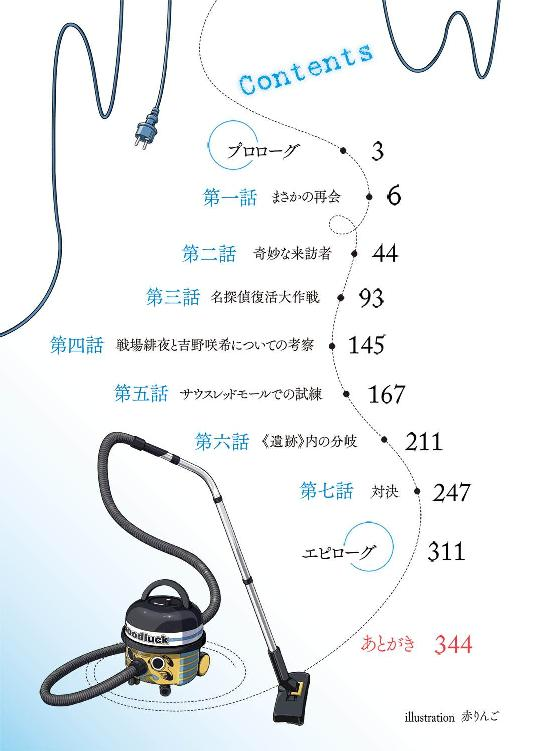

| 龍ヶ嬢七々々の埋蔵金 03 | |
| 鳳乃一真 | |
| KADOKAWA / エンターブレイン (2012) | |

本作品の全部または一部を無断で複製、転載、配信、送信したり、ホームページ上に転載することを禁止します。また、本作品の内容を無断で改変、改ざん等を行うことも禁止します。
本作品購入時にご承諾いただいた規約により、有償・無償にかかわらず本作品を第三者に譲渡することはできません。
本作品は本文縦組で制作されております。ごらんになるリーディングシステムにより、表示の差が認められることがあります。
「なんであんなことをしたんですか！」
夕闇に染まる校舎、人気のない廊下を歩く男子生徒の背中に向かって、眼鏡を掛けたその青年は怒鳴り声を上げた。
足を止め振り返った三年生は、いつも頼りなくオドオドしているだけの二年生の怒りを鼻で笑う。
「別に理由なんてない。大して役に立たないヤツを俺が有効利用してやっただけだ」
その不遜な物言いに激昂した眼鏡の青年は、男に摑み掛かる。
「そんなことが許されるはずがない！」
胸倉を摑まれながらも、その男は、いたって冷静に聞き返した。
「誰に許してもらう必要がある？」
男の一言に、言葉を詰まらせる眼鏡の青年。男はさらに続ける。
「教師か？ 大人か？ 神か？ あの地縛霊か？ それともカスミか？」
「......っ」
「この勝負は非常にシンプルだ。勝ち残ったヤツが全てを手に入れる。そこに明確なルールなど存在しない。ただ宝を手に入れられるか入れられないか、全てはそこに集約される。するも自由止めるも自由。この勝負に求められるのはたった一つ、自らの願いを叶えるために全てを投げ打つことのできる覚悟だけだ」
男の言葉は正しいのかもしれない。
だが、それでもかつての《冒険部》は成立していた。皆が力を合わせ、《遺跡》に挑み、宝を手に入れ、そして皆で喜びあえていた。
その光景は青年の心に強く残っている。
しかしそれも過去のこと。様々な思惑を持ちながらも纏まっていた部員たちの関係は、卒業という節目に絶対的な主柱を失った途端瓦解を始め、目の前の男が長になったことで、崩壊に拍車が掛かった。
そして先日の一件で、ついに青年と男の二人だけになってしまった。
「おい、クソメガネ。お前はなんのために七々々コレクションを探している？」
「そ、それは......」
男の問いに、青年は俯き、何も答えられない。そんな青年の手を男は払いのけた。
「それがお前の本質だ。ただ仲良しゴッコがしたいだけなら、他の連中みたいにさっさと辞めろ。まあもっとも、お前が辞めなくても俺は辞めるがな」
目を見開き驚く青年に、男は背を向け、最後につまらなそうに吐き捨てた。
「結局、カスミが居なくなった時点で、こんな部に価値なんてなくなっていたんだよ。何を期待していたんだか、我ながら完全に時間を無駄にした」
そのまま廊下の向こうに消えていった男の背中を、青年はただ見つめるしかなかった。
誰もいなくなった廊下に、一人取り残された眼鏡の青年の心には、男に自分の気持ちを何もぶつけられなかった悔しさと何もできない無力な自分への憤りだけが残った。
ふと窓の外、自らを寂しく照らす夕陽に、青年は目を向ける。まるで何か救いを求めるかのようにポツリと呟く。
「今生先輩......」
だがそんな夕陽もすぐに海原へと沈み、青年は暗い廊下に一人佇むこととなった。
創設者の女子生徒の卒業からわずか一ヶ月後、七重島第三高等部《冒険部》は一旦その幕を閉じることとなる。
１
世の中にはやっちゃいけないことというのが幾らでも存在する。
円滑な人間社会の構築において、その和を乱す行為というのは弾圧され、罰せられる運命にある。
そんな世の理に漏れず、学生にもやっちゃいけないことがある。
学校のガラス割っちゃいけないし、盗んだバイクで走ってもいけないし、好きな女の子の縦笛も吹いちゃいけない。
俺たちは人間だ。現状に絶望し暗い気持ちを抱くこともあるし、嫌なことの連続に鬱憤が溜まってしまうことだってあるし、好きな女の子に対する欲情を抑えきれなくなってしまうことだってあるだろう。
我慢するなとは言わないし、涙を呑んで耐えろというつもりもない。
だけどそれは、笑顔を浮かべることで和らげることだってできるはずだ。何かに打ち込むことで忘れることだってできるはずだ。自分を鍛えることで覆すことだってできるはずだ。
だからその鬱憤を、他人を攻撃し傷つけることで解消しようとすることは絶対に間違っていると俺は思う。
そういう人間は必ず報いを受ける。
それこそが人の世を創りし天が定めた、人の力では決して覆らない摂理である。
まあ、初っ端から妙なテンションで語ってしまったが、結局なにが言いたいのかと言うと、つまりは夜通しゲームをして貫徹で学校に行くなんて学生の本分から逸脱した行為をしたヤツもまた、そんな天の摂理に則り、報いを受けるハメになる、ということだ。
そう、俺みたいに......
「あーっ、眠ぃ」
頭が重い、フラフラする。目がしぱしぱして、太陽の色がなんだかおかしい。だるい、気持ち悪い。食欲がなく、朝飯が喉を通らなかった。辛い、マジで辛い。
「ふん、情けないぞ、重護。それでも貴様は私の好敵手か？」
そう言いながら元気に隣を歩いているのは、壱級天災なんてありえない名前の自称名探偵女である。
妙に偉そうな物言いの自称ライバルに、俺は皮肉を込めて言ってやった。
「即攻で寝落ちしたヤツが偉そうに吠えるな」
ちなみに昨夜、この名探偵よりもがんばって起きていた、見た目のみ美少女な付き人である星埜ダルクは、俺たちの隣を歩きながらウトウトしていて非常に危なっかしい。
さて、なぜ俺たちがこんな状況に陥っているのかという理由は、温泉合宿が終わった前回......もとい昨日の夜に遡る。悩み事が解決し、臨時収入を得た俺は、喜びのあまりその場にいた三人に徹夜でのゲーム大会を提案、夜中にもかかわらずゲームとお菓子とジュースを準備し、全力で楽しもうとした。
しかし皆テンション的には高かったものの、すぐに限界が訪れた。
その数時間前に、とある知り合いのお姉さんにボコボコにされており、肉体的にも満身創痍、なによりよくよく考えれば、その前日の夜もまったく寝ていなかったのをすっかり忘れていた俺だけではなく、その日の昼間に合宿での《遺跡》挑戦で疲れが溜まっていた名探偵と付き人もまた、俺と同じく強烈な睡魔に襲われ始めたのだ。
そんな状況で、徹夜のゲーム大会が成立するはずがなかった。
案の定、欲望に忠実な名探偵は、速攻で睡魔の囁きに耳を傾け寝落ち。付き人の膝枕で「くーぅ、くーぅ」と寝息を立て始めた。
健気な性格の付き人もまた、がんばってゲーム大会に参加していたのだが、やがて崩れ落ちるように俺の肩に寄り添ってきたかと思ったら、すぐに「すぅすぅ」と可愛い寝息が聞こえてきた。その寝顔を見ながら、この時ほどコイツにゲイボルグの槍が装着されていることに苛立ちを覚えたことはなかった。
このように二人が寝てしまったのだ。必然的にゲーム大会はお開きになってもよかった、というかむしろお開きにして俺も寝たかった。
しかし残念ながら、そのゲーム大会には、《睡眠》という人間にとって決して欠かせない生理現象から解放された異質な存在が参加されていたのである。
なので......
「さあ、サクサクいこうか」
テレビの前に陣取り、楽しさ大爆発といった面持ちのその女の子は、目を爛々と輝かせながらコントローラーを巧みに操っていた。
そんな楽しそうな女の子の笑顔を見ては、さすがに止めようなんて......
「七々々ちゃん、ごめん。もう寝かせて」
......言いましたよ、そりゃ。さすがに無理だって、このままだと本当に死ぬって。だけど、そんな俺の切なる願いに、我が家である幸せ荘二〇二号室に取り憑いていらっしゃる地縛霊の女の子・龍ヶ嬢七々々ちゃんは、素敵な笑顔でこうおっしゃられました。
「もう、重護はバカだなぁ。寝たら徹夜にならないじゃん」
いやね、本当に、すげぇと思ったよ。やっぱり一〇年前に寝るという行為から解放された存在は言うことが違うね。
「っていうか、徹夜でゲームパーティーって言ったのは重護じゃん。そもそも言いだしっぺが『止めよう』なんて言うこと自体おかしくない？」
七々々ちゃんはにっこりと笑っていましたけど、完全に背景のオーラがドス黒かったです。皆で遊ぶの大好き地縛霊様のお言葉（または恐喝）に、俺の回答選択肢の中から「止める」および「寝てしまう」という選択肢が消失、「続行する」の一択になってしまったことは言うまでもない。
ちなみにそんな地縛霊様は、今頃きっとプリン片手にご満悦でネトゲーをしていることだろう。
ゾンビの如くフラフラとした足取りで、ようやく俺たちが通う七重島第三高等部に到着。下駄箱で靴を履き替え、手すりに寄りかかりながら階段を登り、やっとこさ教室へ。そのまま自分の席に着いた途端、一気に睡魔が襲ってきた。
あーっ、やっべ、マジ、やっべ、もう絶対に無理だって、もうダメ、俺寝る......
「おはようございます、八真くん」
「おはようございます、夢路さん、爽やかな朝ですね！」
我がクラスの学級委員長を務めるメガネ系聖少女・夢路百合香さんの挨拶に、俺は一瞬で覚醒した。
夢路さんの眩い笑顔を拝むためにお目々もぱっちり、眠気も完全に吹き飛びました。
そんな夢路さんは、そのまま俺の隣の席に座る天災に目を向けた。
「天災さん、廊下にお客さんが来ていますよ」
夢路さんにそう言われ、廊下に目を向ける天災。それにつられてなんとなくそっちを見てみると、教室の戸口に立っている女の子がペコリと頭を下げたのが見えた。制服のタイの色を見る限り、どうやら一年生のようだ。
「ふむ、礼を言うぞ、夢路殿」
椅子から立ち上がった天災は、その子に軽く手を上げ、そちらへと向かっていく。
「お知り合いですかね？」
「なんだか意外ですよね」
普段クラスでは完全に浮いており、クラスメイトとの交友関係も絶無に近い天災を訪ねてきた後輩に、俺も夢路さんも興味津々である。
天災と何かを話し始めたその女の子は、すぐに何度も頭を下げたかと思うと、封筒らしきものを天災に手渡し、最後にもう一度頭を下げ、そのまま去っていった。
何を貰ったんだろう？ と眺めていたのだが、天災は一向にその場から動こうとはしない。封筒を受け取ったポーズのまま、ピクリとも動かず突っ立っているのだ。
「どうしたんでしょう、天災さん」
動かない天災の後ろ姿に、夢路さんとともに首を傾げていると、予鈴のチャイムが鳴り始めた。クラスメイトたちが次々と席に着き始め、夢路さんも「ではまた」と微笑み、自分の席に戻っていく。問題の天災も同じように予鈴に振り返り、こちらへ戻ってきた。
だが戻ってきた天災は、なんともいえない表情をしていた。
「......おい、天災。どうした？」
両の瞳からは生気が失われ、口は半開き、心なしか首も傾いている。そんな、まるで世界の終わりにでも直面したかのような天災が、ポツリと呟いた。
「帰る」
「......はい？」
「おウチに帰る」
静かになった教室に名探偵の意味不明な言葉が響いた。
「ちょ、おま、何言ってんだ？ 授業は？」
「そんなのは知らん」
さらりと吐き捨て、自分の席に置いてあったカバンに手を伸ばす天災。
「おい、どうしたんだよ？ さっきの子に何か言われたのか？ 封筒みたいのを貰ってたみたいだけど？」
「ああ、これか？ 欲しければくれてやる」
そう言って持っていた封筒をポイッと俺に投げつけた名探偵は、カバンを持ってフラフラと教室を出ていってしまった。
「ま、待ってよ、天災！」
それを見ていたダルクもまた、すぐに席から立ち上がると、慌てて主の後を追う。
突然の出来事に、残されたクラスメイトたちは皆等しく唖然としている。
えっ？ なに？ どういうこと？
なんとなく投げつけられた封筒の中身を見てみる。するとそこにはお金が入っていた。
余計に訳が分からなくなった。
ガラリ
「すまんすまん、遅れた」
教室の前扉を開けて入ってきた担任教師の登場で、固まっていた教室が再び動き出す。
教壇に立った担任教師は、一旦生徒たちを見回してから口を開いた。
「さて、突然だが転校生を紹介する」
突然発生したビッグイベントに、先ほどの奇妙な一件を忘れ、ざわめくクラスメイトたち。その表情はどれも期待に満ちている。かくいう俺もその一人であり、他全ての男子生徒同様に、眼鏡を掛けた美少女転校生の降臨を切に願う一人であった。
残念ながら今朝は知らない女の子とぶつかるなんていう伝統的ハプニングはなかったが、今後は分からない。可愛い転校生の女の子とお近づきになって、最終的にムフフな関係になってしまうかもしれないんじゃないか？ という天文学的数値の可能性にトリップしていた。
「失礼します」
そして教室に入ってきた転校生に、クラスの半分ががっかり、もう半分がソワソワ。
ちなみに俺の反応はそのどちらでもなかった。
「あーっ！」
今朝パンを咥えた女の子とぶつからなかったにもかかわらず、椅子から立ち上がり、その見知った顔に思わず叫んでしまった。
「......なっ！」
向こうも向こうで、俺の存在に気付いた瞬間、驚愕といった面持ちで俺を指差した。
「な、なぜ、お前がここにいる？」
「いや、それ俺の台詞。なんで鉄くんがここにいるの？」
突然の転校生、それは先日知り合ったツクヨミ街の住人である鉄くん（男）だった。
「おい、転校生。顔見知りとの話は後にして、先に自己紹介をしなさい」
担任教師の言葉に、「失礼しました」と頭を下げた鉄くんは、どこか納得いかない表情のまま、黒板に自らの名前を書いた。
「本日からお世話になります、辻深鉄之進といいます。よろしくお願いします」
礼儀正しく深々と頭を下げる鉄くんに、クラスメイトたちから拍手が送られた。
俺も一緒に拍手をしながら、どこか納得した気分になった。なるほど、鉄くんって、鉄之進っていうのか。なんというか古風というか、鉄くんぽいと思った。
２
「うっす、鉄くん」
放課後になり、俺はようやく鉄くんに声をかけた。
なぜ放課後になるまで声をかけられなかったのかと言えば、それにはそれなりの理由がある。
「なんだ？ 最初の授業から最後の授業までぶっ通しで爆睡していた、八真重護」
鉄くんの言う通り、授業が始まると同時に速攻で机に突っ伏し、完全に意識を失っていました。
意識を取り戻したのは帰りのホームルーム前。そしてホームルームが終わったと同時に、担任の教師に声をかけられ、注意を受けた。なんでも全授業完全爆睡という度が過ぎる行為により、俺は本日の授業を全て欠席扱いになったらしい。
「寝ているヤツは授業を受けているとは言わない」
実に正論である。それにしても、とりあえず教室にはいたのに爆睡していたからって欠席扱い、なんてことを平然と行えるこの島の学校システムは改めて凄いと思った。
閑話休題。
「それでえっと、なんで鉄くんがここにいるの？」
鉄くんは、この七重島の吹き溜まりと呼ばれる第九街、通称《ツクヨミ街》の住人で、ツクヨミ街を統治するチームのメンバーの一人。まあ俗に言う、社会からドロップアウトした不良というヤツであるはずだ。
「事情があって、復学することになった」
どこか不機嫌そうなところを見ると、あまりこの復学には乗り気ではないらしい。
「八真重護こそ、なぜここにいる？」
「なぜと言われましても、俺は元々ここの学生だから」
当たり前の回答を返すと、鉄くんは額に手を当て呻いた。
「......聞いていませんよ、姉御」
「うん？ なんか言った、鉄くん？」
「いや、なんでもない」
そんなどこか表情が引きつっている鉄くんと話していると、夢路さんが近づいてきた。
「お待たせしました、辻深くん。それでは行きましょうか」
「ああ、お願いする」
にっこりと微笑む夢路さんに、鉄くんが椅子から立ち上がった。
「えっ、二人でどこか行くんですか？」
「はい。八真くんの時と同じように、転校生の辻深くんに学校を案内することになったんです」
「そういうことだ。じゃあな、八真重護」
そう教室を出て行こうとする二人を慌てて呼び止める。
「ちょ、待って下さい、夢路さん！ 俺も行きます！」
「えっ、八真くんも、ですか？」
「はい。この通り、俺と鉄くんは親友なので、ぜひご一緒させて下さい」
そう笑顔で鉄くんの肩に手を回したら、めちゃくちゃ睨まれた。
「おい、八真重護。誰がいつ貴様と親友になった？」
「堅いこと言うなって鉄くん。それとも何ですか？ まさか二人きりになったところで夢路さんによからぬことをしようとか考えていたのかな？ そんなのはお父さんが許さんぞ、コラッ！」
「......お前は何を言っているんだ、八真重護？」
そんな俺たちのやり取りを見ていた夢路さんがくすくすと笑った。
「確かに、気心知れた八真くんが一緒の方が辻深くんも安心されるかもしれませんね。では三人で行きましょうか」
という訳で、夢路さん及び鉄くんの快い承諾？ により、俺も二人に同行することとなった。
一応断っておくが、これは転校生であり先日お世話になった鉄くんに対しての好意による行動であって、決して夢路さんに転校生エピソードが発生してしまう可能性を警戒して、という自分のエゴによる行動ではありません。ええ、間違いありませんとも。
三人で廊下を歩きながら、本日全授業を爆睡していた俺は、起きてからずっと気になっていたことを夢路さんに尋ねることにした。
「そういえば、夢路さん。結局天災って......」
「星埜さんは一時間目が始まる前に戻ってきたんですけど......、結局天災さんは戻ってきませんでした。星埜さんとお昼をご一緒した時に聞いたんですけど、『来るな』と言われてしまったそうで、それ以上追いかけられなかったそうです」
「そうですか」
「星埜さん、今日はずっと元気がありませんでした」
世間的に女子で通っているダルクと実は仲の良い夢路さんは、どこか寂しそうな表情を浮かべている。
そのダルクは帰りのホームルームが終わった途端、クラスメイトへの挨拶もそこそこに、すぐにカバンを持って教室を出ていってしまった。
いったいどうしたっていうんだよ、天災のヤツ？
天災がおかしくなったのは、明らかに今朝の一年生との会話が原因だろう。
今朝のあのやり取りはいったいなんだったのだろうか？
「いい加減にしてほしいのだ！ 私のことはほっとけと言ってんのです、このやろう！」
と、どこからともなく聞こえてきた女の子の怒鳴り声に、隣の校舎へと続く二階の連絡路に差し掛かっていた俺たちの足は、自然と止まった。
何かあったのかな？ とキョロキョロしながらも、その声には、なんだか聞き覚えがあるような気がした。
そう思った瞬間、隣に立っていた鉄くんがいきなり全力で走り出した。
「ちょ、鉄くんどうしたの？」
慌てて鉄くんを追いかけながらも、鉄くんが走っていく方向に顔を向けた瞬間、先ほどの怒鳴り声の主をすぐに発見できた。
三棟の校舎の中心にある噴水つきの中庭、そこで一人の女の子が、教師とも思われるスーツ姿の男に腕を摑まれ、何か口論していた。
「えっ？ あれって、まさか！」
ウチの学校の制服を着ているが、その女の子は間違いなく......。
と、そこで俺は目を見開いた。なぜなら目の前を走っていた鉄くんが、いきなり連絡路の窓を開けたかと思ったら、中庭に向かって何の躊躇もなく飛び降りたからだ。
「えっ、えーっ！」
綺麗に地面へと着地した鉄くんは、そのまま男性教師に背後から摑み掛かる。
「ゆんから離れろ！」
そのまま男性教師を突き飛ばすと、ゆんちゃんを庇うように、立ちはだかる。
「き、貴様、何のつもりだ！」
「それはこちらの台詞だ」
睨み合う二人は、まさに一触即発な雰囲気だ。
「何やってんだよ、鉄くんのヤツ」
「や、八真くん、どうしましょう！」
追いかけてきた夢路さんも中庭の光景を見てあたふたしてしまっている。
このまま階段を降りている時間ももったいない。
俺は鉄くんと同じように、二階の窓から飛び出した。地面に着地した時には、すでに鉄くんが男性教師に摑みかかっていた。っていうか、すでに拳を振り上げている。
「ちょ、待っ！」
バキリ
結果から言えば、鉄くんは教師を殴らずに済んだ。
代わりに間に割って入った俺が鉄くんにぶん殴られた。
３
「本当にすまなかった」
夢路さんが水で濡らしてくれたハンカチで頰を冷やす俺に、鉄くんが頭を下げた。
「いや、大丈夫だから、気にしないで」
あれから鉄くんが殴ろうとした男性教師（ゆんちゃんの担任）に、俺と鉄くんはメチャクチャ怒られた。とりあえず、鉄くんが転校生であり、中庭で女子生徒が襲われているように見えた（口から出任せ）と言ったら、暴漢と間違われた男性教師にもっと怒られたが、代わりに罰則的なお咎めは免れることができた。
「それにしてもまさか、あんパンマンがウチの学校の先輩だったとは思わなかったぞ！」
「俺もまさかゆんちゃんが後輩だとは思わなかったよ」
ウチの制服を着ているゆんちゃんのタイの色を見る限り、一年生の後輩。正直、初めてツクヨミ街で会った時には中学生だと思っていたのだが、それは内緒にしておこう。
「あの、八真くん。あんパンマンってなんですか？」
そんな夢路さんの質問に、「俺のコードネームです」とニヤリと格好よく笑ってみせると、「はぁ？」と首を傾げられてしまった。
「えっと、改めて二年生の八真重護です」
「私は一年の吉野咲希だぞ、よろしくお願いしますです」
ペコリと頭を下げる、ゆんちゃん。
へぇ、ゆんちゃんって、吉野咲希ちゃんっていうんだ......っていうか、「ゆん」全然関係なくない？
「その......なんでアダ名がゆんちゃんなの？」
「姉御と初めて会った時に、『お前は、なんだかゆんっぽいからゆんな』って言われたからだぞ！」
本当に適当だな、あのばた子さん。
「だけどあんパンマンが学校の先輩だと分かった以上、これからはあんパンマンのことは八真先輩と呼ばないといけないな！」
そう「にぱっ」と笑うゆんちゃんの言葉が、俺の胸をざわつかせた。
「あの、もう一回、俺のこと呼んでもらっていいかな？」
「ん？ どういうことだ、八真先輩？」
質問の意図が分からなかったらしく目をパチクリさせながら首を傾げるゆんちゃん。
しかし、そんな疑問に応えることなく、俺は目を閉じ、その余韻に浸っていた。
八真先輩、八真センパイ、センパイ......
ああっ、いいっ
思わず身悶えしそうになった。まさか後輩のカワイイ女の子に「先輩」と呼んでもらえることがこんなにも嬉しいことだったとは。
未だ耳に残るこの響きはすばらしく......
「まあ、今後もよろしくお願いしますわ、八真センパイさんよ」
......そしてポンと肩に腕を回してきた新しいクラスメイトに、耳元でドスの利いた声で囁かれ、俺のメモリーはあっさりと上書きされてしまった。
ちなみに目を開けると、鉄くんはチンピラのような表情でガンをくれていた。
「と、ところで、ゆんちゃん。なんか先生と揉めていたみたいだけど、何かあったの？」
先ほどの件を尋ねると、ゆんちゃんは、「むすっ」と口をへの字に曲げて怒り始めた。
「しばらく学校を休んでいた間に髪を染めたことを怒られたのだ！ あと制服がだらしないと注意された！ 別に校則違反じゃないのに、ムカつくぞ！」
なんで休んでいたかはよく分からないが、どうやらその間にばた子さんに感化されて不良の道にハマってしまったらしい。
確かに髪もさることながら、制服の着こなしもパンクっぽくイジられている。
こういうのはいいのだろうか？ と思い、真面目な学級委員さんに尋ねてみた。
「はい。中学校までは身だしなみに対して厳しい校則があるのですが、高校からはどこの学校でもかなり自由みたいですよ。あくまで全て自己責任だそうです」
そう言われれば、確かにウチの学校って制服をイジっている生徒をよく見かけるな。自由な校風ってヤツか。それにしてもなんだかこの島に来てから『自己責任』って言葉をよく聞く気がするな。
「ところで鉄たちは何をしているんだ？」
「学校の案内をしてもらっているところだ」
「ふーん」と呟く、ゆんちゃん。
「なあ、鉄。私も一緒に行っていいか？」
そう尋ねるゆんちゃんに、鉄くんは夢路さんを見る。
「私は構いませんよ」
「本当か、ありがとうだぞ！ ......えーっと」
「夢路です、夢路百合香です」
「そうですか！ ありがとうです、夢路先輩！」
という訳で、ここからはゆんちゃんも加わり、四人で学校を回った。
夢路さんの案内に、鉄くんだけでなく、初日の学校案内が中途半端に終わってしまった俺や、今年からこの学校に通っているゆんちゃんも「なんと！」と驚きながら、夢路さんの案内を聞いていた。
「夢路先輩はとっても物知りだな！ とっても凄いぞ！」
ゆんちゃんは、すぐに夢路さんと打ち解けた。どうやらとても人懐っこい子であるらしい。最後には仲良く手を繋いで歩いていた。
「今日は助かった、夢路」
学校案内が終わり教室に戻ってくると、鉄くんが夢路さんにお礼を言った。
「いえいえどういたしまして」と微笑む夢路さん。
「鉄くんはこれからどうするの？」
「学校の案内が終わったら職員室に来るように言われている」
「私もついて行くぞ、鉄！」
という訳で、ここで解散となった。
鉄くんと一緒に教室を出ていくゆんちゃんが「またなぁ！ 夢路先輩、八真先輩！」と元気に手を振っていたのが印象的だった。
「それでは私も用事があるのでこれで失礼します」
そう頭を下げて夢路さんも教室から出ていってしまった。
「それにしても驚いたな」
まさか鉄くんが転校生としてウチの学校にやってくるなんて、しかもゆんちゃんが後輩だったなんて、世間......もとい、この島は狭い。
あの二人と再会できたことは素直に嬉しかった。だがそう思う反面、ヒシヒシと嫌な予感もあった。それはあの二人の背後には、眼帯をつけたダメ子さん二号がいらっしゃるからだ。あの蛇のような隻眼を思い出し、背中に冷たいモノが走る錯覚に襲われた。
「さて、俺も行くか」
教室を出て廊下を歩きながら、この後について考える。
とりあえず冒険部の部室に顔を出すか？ だけどなぁ......
そう悩んでいると、ちょうど部室校舎へ向かう茨夕先輩を見かけた。
＊ ＊ ＊
第三高等部にある三つの校舎のうちの一つである部室校舎、その四階に《冒険部》の部室はある。
部室に設置された電気ポットで沸かしたお湯を、冒険部の備品である七々々コレクション《茶葉がいらない急須》に注いでいるのは、冒険部副部長を務める、三年生・茨夕。
慣れた手つきで作業をしながら、夕は先ほどからチラチラと窓際に視線を向けていた。
部室の窓際にあるのは、樫作りの大きな机。その椅子に腰掛け、何かの写真を眺めているのは、冒険部の部長である三年生の唯我一心。
そんな一心の表情にはどこか陰りを感じる。だがそれも仕方のないことだろうな、と夕は思った。
先日の温泉街での七々々コレクション探しは、見つけた《遺跡》に挑み、苦労して攻略、宝箱の中身を手に入れたまではよかった。だがようやく手に入れたと思った七々々コレクションは、信じられないことに、誰かが残していった偽物だったのだ。
結局、七々々コレクションは手に入らず、全ては徒労に終わってしまった。
一心様はさぞショックだったに違いない。
その元気のない姿を見る度に、夕は心の中でフツフツと怒りを煮えたぎらせていた。
どこのどいつだが知らないけど、偽物を残すなんてふざけたことしやがって、見つけたら絶対にボコす。
心の中で犯人に対する血の制裁を固く誓いながらも、夕は笑顔を浮かべ、一心の前にそっと茶碗を置いた。
「一心様、お茶が入りましたよ」
《茶葉のいらない急須》、正式名称《仙茶沸》は、お湯を注ぐだけで仙茶と呼ばれるお茶を生み出す。仙茶には多くの効能があり、その中にはリラックス効果もある。
これで少しでも元気になって欲しい。
「ありがとう、夕」
優しく微笑む一心の表情に、夕の胸はキュンキュンしてしまった。
一心がお茶を飲む姿を見ながら、夕は思う。
なぜこの人の笑顔は私をこんな気持ちにさせるのだろう？
その笑顔をもっと見せて欲しい。自分にだけ向けて欲しい。
しかし、一心が多くの女子に人気があることを、夕は十分理解している。その爽やかな笑顔と優しく紳士的な物腰に心奪われる女子は少なくない。そして一心は、そんな女子たちに、分け隔てなく優しく接するのだ。その姿は、夕にとってもどかしかった。
一心様には私だけを見て欲しいのに......。
一心を独占したい、その気持ちは夕の中でどんどん大きくなっていた。
そのためにはどうすればいいのだろうか？
自分の茶碗に仙茶を注ぎながら、夕は何か良い方法はないかと頭をフル回転させる。
そしてピカリと閃いた。
一心様はなかなか私の気持ちに応えてくれようとしない。そうよ、だったらもうこれしかないわ。
言い逃れができないように既成事実を作ってしまうしかない。
そうすれば名実ともに、一心様は私だけのものだ。
途端、夕の瞳は肉食獣のそれへと変わり、「むふーっ」と鼻息が荒くなる。
確かに一心様は男で、私は女。だけど一心様はインテリ系のイケメン、間違いなく腕力でなら勝てる自信がある。だったら強引に組み敷いてしまえば後は何とでもなるのでは？ 一心様にむちゃくちゃにされたい願望はあるけど、一心様をむちゃくちゃにしちゃうのもアリなのかもしれない。
頭の中の濃厚ピンクな妄想は際限なく膨らんでゆき、邪な笑顔もどんどん崩れてゆく。
うっお、やばいよ！ こんなことしちゃうの、私!? あられもない姿の一心様にあんな恥ずかしいことしちゃうの私!? アリ？ アリなの、これって？ いや、やっぱり不味いよ！ 不味いよね、これ！ 女の子がこんなはしたないことしちゃやっぱりいけないよね！ ......その、ダメかもしれないよ、......ダメかもしれないけど......でも今回だけは特別に「アリ」ということにしておこう！
ちょっとだけ倫理的に迷ってみたものの、結局は自分の欲望通りに突っ走ることを決意した夕は、緩んだ表情を引き締める。
そうと決まれば、後はタイミングを見計らって、二人っきりになった所で......
そこで夕は「ん？」と思った。
あれ？ 今って冒険部の部室に私と一心様の二人っきりじゃない？ いや待ってよ、それだけじゃないわ。さっき廊下で会った八真が「早退した天災が気になるので今日は帰ります」とか言っていたわよね？ だから早退したオチビはもちろん、必然的にオチビの身の回りの世話をしているとかいうダルクも今日は部室に来ないってことよね。
......ということは？
「キタコレ」
ニタリと夕の口角がつり上がった。
「ん？ 何か言ったかい、夕？」
「いえ、何でもありませんよ、一心様」
可愛らしい笑顔を浮かべた夕は、再び一心が写真に目を落としたのを確認すると、鼻歌を歌いながら何気ない素振りで部室の扉に移動し、「カチャリ」と鍵を閉めた。
これで退路は断った。
一心に背を向け、「げへへ」と笑う、夕。
座右の銘『思い立ったら即実行』、恋のＧ級狩人・茨夕の包囲網は完成した。
後は一心様を煮るなり焼くなり剝ぐなり好きにするだけ......
「今戻ったぞ、一心」
「って、影虎！ アンタどこから入ってきているのよ！」
「窓からだが、何か？」
その言葉通り、四階にあるこの部室の窓を「ガラリ」と開けて入ってきたのは、冒険部に所属するもう一人の三年生・諜報担当である忍者・徒然影虎だった。
せっかくの計画をぶち壊した影虎に殺意を覚える夕をよそに、空いているテーブル席に腰を下ろした影虎は、二人の茶碗を見て言った。
「茨、俺にも茶をくれ」
そのふてぶてしい影虎の態度に、夕はブチッとキレた。
「飲みたきゃ好きなだけ飲ましてあげるわよ」
そして茶葉がいらない急須の取っ手を握った夕は、それを影虎の頭の上で傾けた。
頭から熱い仙茶をかけられた忍者は、「うぎゃぁぁぁ！」と部室の床をのた打ち回る。
「き、貴様、何をする！」
「アンタがお茶を飲みたいっていったんでしょ？ だから飲ませてあげようとしたんじゃない。ほら、どんどん飲みな！」
床を転げまわる影虎に、凶悪なドＳ顔を浮かべる夕はアツアツのお茶をかけ続ける。
「ばっ、止めろ、死ぬ！」
「死ねば？」
即答する夕の残忍さに、忍びとして様々な拷問に耐える訓練を受けてきたはずの影虎が、心の底から震え上がった。
「止めろ、夕」
「はい、一心様」
今まで残虐な笑みを浮かべながら自分に熱湯をかけ続けていた女の愛らしい笑顔に、青い表情を浮かべる影虎はゴクリと唾を飲み込んだ。
「お、恐ろしい女だ」
「何か言った、影虎？」
「なんでもない」
夕の黒い笑顔に、影虎は即答した。
そんな三人が集まったところで、一心は改めて口を開く。
「今日は二年生の三人が来ないみたいだから、僕らだけで先日の反省会でも開こうか」
「ですが、一心様。先日の《遺跡》に関しては七々々コレクションがすでに持ち出されていただけですし、反省という反省はないんじゃないでしょうか？」
七々々コレクションの隠された《遺跡》は島のどこにあるのかまったく分かっていない。その中で、先日の温泉街の外れにあった洋館の《遺跡》は、一心の機転と影虎の調査によって発見することができた《遺跡》だった。確かに結果としては散々だったが、見つけた《遺跡》からすでに宝が持ち出されていたのは運がなかっただけのことであり、反省すべき点は特にないだろう、というのが夕の考えだった。
夕の主張に、「なるほど」と頷く一心だったが、特にそれ以上何も語ろうとはしない。
「なら俺から一心に尋ねたい」
そう言ったのは影虎だった。
「なんだい、影虎？」
「一心、なぜ前回も二年たちを出し抜こうとした？」
それは先日の《遺跡》において、一心の指示に従い、夕と影虎がしようとしたことだった。《遺跡》調査の際に二手に別れ、前もって宝箱の場所を推測していた自分たちが先にそこへと向かい、自分たちだけでこっそり七々々コレクションを手に入れようと企てたのだ。だが、結果的にこの思惑は失敗、むしろ出し抜こうとした重護たち二年生に助けてもらうハメになった。
「八真後輩たちの入部後に挑んだライジングビルの《遺跡》、あの時のお前の行動はまだ理解できた。それは以前より『なんとしても手に入れたい七々々コレクションがある』というお前の言葉を聞いていたからだ。ある意味あの《遺跡》にあった七々々コレクション《魔法使いの杖》を手に入れることこそが、お前の目的であり、それを前にして取ったお前の行動も頷けた。だが前回の洋館では話が違ったのではないのか？」
「ちょっと何が言いたいのよ、影虎？」
一心に対して批判的な意見を口にする影虎に、夕は思わずそう訊いてしまった。
「最初から策を弄さず、力を合わせるのも一つの手ではなかったのか？」
影虎の言葉に、夕は口を噤むしかなかった。なぜなら前回、素直に一心の命令に従った夕もまた、心の片隅では同じことを考えていたからだ。
しばらくの思案の後、一心が口を開く。
「影虎、キミの目的はなんだい？」
突然の切り返しに、影虎は素直に答える。
「かつて龍ヶ嬢七々々が我が里より持ち去った《双天万華の秘伝書》を取り戻すことだ」
「夕の目的は？」
そう尋ねられ、夕は慌てた。
「わ、私は、その......い、一心様のお役に立ちたいと......」
「という建前だ」
一心の付け足しに、「ううっ」と夕はシクシクと涙を流す。
一心は続ける。
「では二年生たちの目的はなんだと思う？ 八真くんは七々々コレクションに興味があるとだけ言っている。天災くんはかなり特殊だ。冒険部の活動内容もろくに知らずに入部テストを受けていたからね。ダルクくんもそうだ」
確かに一心たち三年生は、二年生の三人がなんのために七々々コレクションを探しているのか、という理由を知らない。
「つまり、腹の内が知れないから信用ならないと？」
影虎の言葉に、一心は首を横に振る。
「そこまで言うつもりはないよ。だけど、彼らもまた七々々コレクションを欲している。そして七々々コレクションは数あれど、それぞれが望む願いを叶えてくれるモノはその中の幾つかでしかない」
「たとえ仲間であっても、最終的には奪い合う敵であるということか？」
影虎の問いに、一心は肯定も否定もしなかった。
ただ、二人に背を向け、夕陽に染まり始めた窓の外に目を向ける。
「『この勝負は非常にシンプルだ。勝ち残ったヤツが全てを手に入れる。そこに明確なルールなど存在しない。ただ宝を手に入れられるか入れられないか、全てはそこに集約される』、僕が大嫌いな男がかつて言った言葉だ」
二人に振り返った一心はどこか寂しそうに、ポツリと呟いた。
「そしてそれは......やっぱり間違っていないのかもしれない」
その横顔はどこか悲しげだと、夕は思った。
「なら俺や夕もお前にとっては敵となりえるのか？」
影虎の言葉に、胸をドキリとさせた夕は思わず一心を見る。
「考えるまでもないよ。そんなことは起こりえない。徒然影虎に、僕は絶対の信頼を寄せている」
一心の即答に夕はどこかホッとした。だが、そこで言葉が終わってしまった。
いやいやいや......
「あ、あの、一心様......私は？」
恐る恐る尋ねる夕に、一心はにっこりと微笑む。
「もちろん、夕も信頼しているよ。......だけど、襲われるのだけはご免こうむりたいね」
ば、ばれている。
ダラダラと背中に汗を掻く夕。
「なら、なぜ八真後輩たちも信じてやれない？ あいつらも同じ冒険部だ」
影虎の言葉に、一心は頷く。
「そう、そして僕なんかよりずっと優秀だよ、あの二人はね」
そう呟いた一心の瞳に、夕は何か冷たいモノを感じた。
結局、一心は、影虎の問いかけに明確な答えを示さず、「悪いけど、今日は先に帰らせてもらう」と言い残し、鍵の掛かった部室のドアを開錠して出ていった。
部室に取り残された夕と影虎。椅子に座り仙茶を啜りながら、しばらく無言の時間が過ぎた。
「焦っているのかもしれないな、一心のヤツは」
そう言ったのは影虎だった。
「何がよ？」
「自分の努力が結果に結びつかなくて焦っているように俺には見える」
一心がどれだけがんばってきたのか、共に歩んできた二人はよく知っている。
「だからこの前の温泉街の洋館でも八真やオチビたちを出し抜こうとしたってこと？」
「俺はそう思っている。やはり《魔法使いの杖》を手放すしかなかったことが相当堪えているのではないだろうか？」
一心はずっと欲していた七々々コレクションを一度手に入れたが、重護との戦いでその力を全て使い果たし、最後にはＧＲＥＡＴ７のトップである一鶴春秋に売らざるをえなかったのだ。
「でもおかげで凄い大金が手に入ったんだからいいじゃない」
「これだから拝金主義者は」
「やれやれ」とため息をつく影虎を、夕は「あん？」と睨みつける。
「なによ。だって一億よ、い・ち・お・く。なんでも買いたい放題じゃない」
「金で買えないものもある」
「影虎、あんたまさか『心までは買えない』なんて言うつもりじゃないでしょうね？」
「似たようなものだ。一心が手に入れたいのは、そういった類のモノなのだろう」
なんとなく格好よさげに語る影虎。しかしそれを聞いても、夕はイラッとしかしなかった。
「ったく、これだから何を言っているか分からない男って嫌いなのよね。なんでもかんでも難しそうに曖昧に言えば良いってもんじゃないのよ」
夕には影虎の言っている意味など全然分からないし、分かろうとも思わない。夕はやはりお金は凄いと思っている。お金さえあれば何でも手に入る。服もバッグもアクセサリーも買いたい放題。そうやって自分を可愛くすれば、好きな人にだって見てもらえる。夕にとってお金とは自らの願望を叶えるための原動力だ。お金があれば人はなんだってできるし、どんな願いにも最短距離で走っていける。チャンスだってお金で買えるのだ。つまり極論すれば、心だって金で買える。なぜならあと必要なのは自分のがんばりだけでいいのだから。だったらそんなのはもう持っているのだから、わざわざ勘定に入れる必要はないではないか。
だから金で買えない影虎の言うところの形のないナニカになんて、夕は価値を見出すことなんてできないし、するつもりもなかった。
結局、この話はそこで途切れ、そろそろ帰ることになった。
後片付けを始めた夕は、部長の机の上に写真が一枚置かれているのを見つけた。
それは今日、一心がずっと眺めていた写真だった。
「これって......」
「初代冒険部だな」
隣にやってきた影虎が写真を見ながらそう呟く。
「あっ、この人、今生先輩だ。あの人、第三高等部の名物だったもんね」
真ん中に写っている女性は、夕には見覚えがあった。
「これは真田文香だな。俺も何度か世話になったことがある」
「この子は、同じ学年だった不破さんよね？ 大怪我してウチの高校辞めちゃった。......こう見ると二年前の冒険部って結構有名な人が揃っていたのよね」
夕がそう感心していると、影虎がその中の一人を指差した。
「こいつもそうだな」
「ああ、なんとなく覚えてる。確か......戦場先輩よね？ 下の名前は知らないけど」
「ああ、だがこちらはあまり良い噂は聞いたことがなかったな」
４
幸せ荘に戻った俺は、とりあえず隣の二〇三号室のインターフォンを鳴らしてみた。しかし返事はない。どうやら留守のようだ。
「ったく、どこ行ったんだよ、天災のヤツ」
なぜか知らないが妙にソワソワした。一瞬電話を掛けてみようかとも考えたが、隣に住んでいる人間にわざわざ電話をするのもどうなのかと思い、結局電話はしなかった。
そのまま、隣の我が家へ。
「ただいま」
「おかえり、重護」
「......ってことがあったんだ」
夕食を済ませて、相も変わらず七々々ちゃんと一緒にゲームをしながら本日の報告。
「ふーん。天災ちゃんはちょっと心配だね」
「まあ、別に大丈夫だと思うけどね」
そう言ったものの、やはり気になる。天災のヤツ、本当にどうしたっていうんだ？
コンコンコン
「？ なんの音だ？」
不意に聞こえてきた何かを叩くような音に、部屋の中を見渡していると、再び「コンコンコン」というノックのような音が響いてきた。
いぶかしむ俺に七々々ちゃんが音のした方を指差す。
「重護、たぶん窓だよ」
七々々ちゃんの指摘に立ち上がり、ベランダへと続く窓に近づき、カーテンを開けた。
「って、うぉ！」
驚いた。なぜならカーテンを開いた窓の向こうに、知らない男が立っていたからだ。
「ああ、今のこの部屋に住んでいる人？ 悪い、驚かせたな」
そうにっこり笑うのは、長身の男。たぶん俺より年上の兄ちゃんだった。
もう暖かくなるこの季節に、黒いシャツに黒いズボンに黒いブーツ、その上からファー付きのド派手なコートを着ており、首や手首、指などに着けられたシルバーアクセサリーにも目が行ってしまう。
「な、なんすか、あんた？」
警戒する俺に、なんとも目立った風貌の兄ちゃんは両手を振りながら笑う。
「驚かせたことは素直に謝る。だが泥棒や強盗の類ではないから安心してくれ」
急にベランダに現れたヤツにそう言われても、いまいち信用ならない。
「そんなに警戒しないでくれよ。俺はただそっちにいるヤツに用事があるだけなんだ」
そう長髪の兄ちゃんが指したのは、俺の後ろだった。
「何しに来たのよ、緋夜？」
ムッとしながらこちらに近づいてきた七々々ちゃんに、その長髪の男は俺に向けていた笑顔を引っ込め、どこか小馬鹿にした表情で、七々々ちゃんを鼻で笑った。
「久しぶりだな、七々々。俺がお前に会いに来る理由なんて一つしかないだろ？」
そして男はコートのポケットからそれを取り出した。
「新しい七々々コレクションが手に入ったから見てくれよ」
その掌に載っていたのは、鈍く輝く銅色の鐘だった。
それを見て、俺は思わず目の前の男に尋ねた。
「あなたはいったい？」
「ああ、名乗り遅れた。俺は緋夜。戦場緋夜だ」
男は目を細めてにっこりと笑った。
１
突然、ベランダに戦場緋夜という男が現れた。
しかも七々々コレクションを持ってきたと言い、その右手には「ちりーん」と鳴りそうな、古めかしい手持ちの鐘が載っている。
《七々々コレクション》、生前の七々々ちゃんが世界中からパク......集めてきた、様々な能力が秘められた秘宝の数々。そのほとんどが現在行方不明であり、今もこの七重島のあちこちに隠されている。
俺も七々々ちゃんを殺した犯人を捜すために七々々コレクションを探しているし、雪姫姉さんたち《祭》や冒険部の唯我部長たちも各々の目的で、それらを手に入れようと狙っている。
この島には、他にも七々々コレクションを探しているであろう人間がいることは予想していたが、まさかこんな形で出会うことになるとは思ってもいなかった。
「あの、よかったら上がって下さい」
なんにしても七々々ちゃんを訪ねてきたお客さんである。邪険にする訳にもいかないと思い、部屋に入るよう促したのだが、戦場さんは首を横に振った。
「いや、気遣いは無用だ。部屋に上がるつもりはない。話を聞いたらすぐに帰るから安心してくれ」
戦場さんは俺に気を遣うように微笑みながらも、部屋に入ることを頑なに拒んだ。まるでそこに足を踏み入れることを嫌がっているかのように。
戦場さんは掌に載せたソレを翳すも、それだけだ。七々々ちゃんに手渡す素振りもなければ、その手を部屋の敷地内に入れることすらするつもりはないらしい。
七々々ちゃんは、俺に代わって開いた窓の前に立ち、戦場さんの掌に載ったそれをジッと見つめる。
「《雨降りベル》だね、これ」
「どういった効果がある？」
「正式名称《天雨の鈴》、祈りを込めて振ることで、雨雲を引き寄せることができるの」
傍で聞いていると、七々々ちゃんの説明は荒唐無稽な妄言のように聞こえるが、これは全て真実であり、実際にこの鐘にはそのような力があるのだろう。
「使用するにあたり欠点は？」
「うーん、雨が降ってほしいっていう願いの強さに左右されるから、願う気持ちが弱ければ数分で雨は止んじゃう。あと同じ土地でむやみやたらに使っても効果が出なくなる、くらいかな？ 元々あった場所は......」
「ああ、無駄な説明は要らない。これが使えるか使えないか、俺はそれしか興味はない」
そう七々々ちゃんの説明を遮った戦場さんは、つまらなそうにため息をついた。
「なんにしても、これは使い勝手が悪そうだ。単なるガラクタだな」
随分とヒドイ物言いとともに、戦場さんはその鐘を無造作にポケットに突っ込んだ。
「......」
そこで気付いた。こちらに背を向けている七々々ちゃんの握られた手が震えていることに。
ドンドンドン
突然の激しい音に振り返る。
「今度はなんだよ？」
音の出所は玄関、どうやら誰かが部屋のドアを激しくノックしているようだ。
「重護、開けなさい！ マスターキー持ってくるの忘れた！」
その声には聞き覚えがあった。この幸せ荘の大家兼管理人の真幌肆季さんのものだ。
「時間切れか」
その呟きに再び窓を振り返り、思わず目を細めた。
「あれ？」
ほんの少し玄関に目を向けた隙に、ベランダから戦場さんの姿はなくなっていたからだ。思わず窓から外を覗くも、その姿はどこにも見当たらない。
バキッ、ドガン！
再び玄関から響いてきた大きな音にまたまた振り返り、今度は口を開けて硬直。
部屋の向こうのキッチンに、ドアが綺麗に倒れこんでいた。そして元々ドアがあった場所では、蹴りを放ったポーズのまま立っている肆季さんの姿があった。
蹴り一発でドアをブチ破ったらしい大家の姿に、冗談抜きで唖然とした。
見事に凹んだドアを踏み越え、ズカズカと部屋に入ってきた肆季さんが俺を睨む。
「今、戦場のヤツが来ていたでしょ？」
その迫力に押され、「は、はい」と答える。
「何処行った？」
「もう帰ったよ」
答えたのは、窓の外を指す七々々ちゃんだった。
窓からベランダに出て辺りを見回した肆季さんは、腹立たしそうに舌打ちした。
「ちっ、逃がしたか！」
苛立っている肆季さんの姿に戸惑う。こんなに怒りを露にする肆季さん初めて見た。
「七々々、大丈夫だった？」
「うん？ 何が？」
心配そうに見つめる肆季さんに、七々々ちゃんはいつものようににっこりと微笑む。
「今度アイツが来たらすぐに教えなさいよね」
「まだ怒っているの？」
「当たり前でしょ！ あの野郎には家賃踏み倒されてんのよ！」
まるで特撮映画に出てくる怪獣みたいに吠える肆季さん。それでこんなにキレていたのか、この大家。しかしあの戦場さんって人も命知らずなことするな。
散々悔しそうに地団駄を踏んだ大家は、キッチンに目を向け、そしてため息をつく。
「あーあっ、重護が早く開けないから扉壊れちゃったじゃない」
「いや、蹴り飛ばしたのは、肆季さんじゃないですか」
っていうか、ドアってこんなに簡単に蹴破られるものだったの？
「弁償だからね、重護」
「えっ、俺!?」
「部屋を貸す時に言ったでしょ？ 家具壊したら弁償だって」
「いやいや、犯人アンタだし！ いわれのない冤罪ですよ、これ！」
俺の必死の主張に、大家は「分かったわよ」とため息とともに頭を掻く。
「んじゃ、後で適当にどうにかするから、しばらくこのままにしておいて」
なんだか絶対にどうにもする気がないようにしか聞こえない適当な台詞を残し、ドアを蹴破った大家は、何事もなかったかのように帰っていった。
「ねえ、重護。ちょっとプリン買ってきてくれない？」
肆季さんが出ていってすぐに、七々々ちゃんがそう言い出した。
「今から？」
「うん。できれば、ちょっといいヤツ買ってきて」
そう言って「お願い」と笑う七々々ちゃん。いつもの笑顔なのに、さっきの一件があったせいなのかどこか作り笑いっぽくて、無理しているようにも見えた。
「了解、ちょっと行ってくるね」
なので快く承諾。まあ素直なことを言えば、俺としても七々々ちゃんの申し出はありがたかった。あんなやり取りがあった七々々ちゃんとどう接していいか、俺はまだ頭の中で整理がついていなかったからだ。
玄関に蹴破られたドアを立てかけ、二〇二号室を出発した俺は、すぐに幸せ荘の前でキョロキョロと辺りを見回している肆季さんを発見した。
「何やってんですか？」
「落ち着かないのよ」
どうやら先ほどの戦場さんを探しているらしい。
「重護こそ、こんな時に何やってんのよ？」
ちょっと怒った風に俺を睨む、肆季さん。っていうか、こんな時ってどんな時？
「えっと、七々々ちゃんにプリン買ってきてって頼まれて」
そう答えると、「そっか」とどこか納得したような様子。
「なら私も付き合うわ」
コンビニへと向かうために夜道を歩きながら、隣を歩く肆季さんに視線を向けるも、明らかに不機嫌そうだ。なんだか空気がギスギスしている。とりあえずこのまま無言というのもあれなので、何か話題を振ってみる。
「さっきの戦場さんって幸せ荘の元住人なんですか？」
「ええ、そうよ」
「家賃踏み倒されたと」
「そうね」
チラチラと辺りを見回しながら歩く肆季さんは、心ここに在らずといった感じ。振る話題を間違えたかもしれない。なら何か別の話題でも、と思ったが、やっぱり止めた。
肆季さんも乗り気じゃないだろうし、俺も俺で考えたいことがあったからだ。
結局、話もしないままコンビニに着いてしまい、いつものスイーツコーナーへ。ほぼ毎日購入している三個一〇〇円のプリンを横目に一番グレードの高いプリンに手を伸ばす、その名も《厳選極上プリン》。お値段なんとお一つ三〇〇円って、高っ！ 何をどう厳選したらこの値段になるのか、さっぱり分からない。
レジで会計を済まして店を出ると、先に自分の欲しい物（両手に抱えられるほどの大量のビール）を買い終えていた肆季さんが、速攻で缶ビールを「グビグビグビ」と傾けていた。あっさりとロング缶を飲み干した肆季さんはそれを「グシャリ」と片手で握りつぶしてゴミ箱へ、すぐにビニール袋の中から新しいビールを取り出し飲み始める。
「あの、肆季さん。飲みすぎじゃないですか？」
「よい子はマネしちゃダメよ」
「いや、よい子は未成年なのでお酒は飲めません」
「大人のお友達もダメよ」
「誰に何を言っているんですか？」
結局もう一本を即座に飲み干したところで、肆季さんは一気飲みを止めた。ちなみに一気飲みを止めただけであり、今まだこうして夜道を歩きながらちびちびと飲んでいる。
「ねえ重護、何か私に聞きたいことない？」
「......いえ、特には」
いきなりそんなことを言われても困る。まあ本当は聞きたいことはあるのだが、あえてそれは尋ねない。単に天邪鬼だ。そんな俺の態度に、すぐに肆季さんが折れた。
「あーっ、ごめん。重護、愚痴らせて」
俺に質問してほしいというのは建前だ。本当は自分が喋りたかったのだろう。
なんとなくそれは分かっていたのだが、俺はあえてその気持ちを無視していた。
ウチのドアを蹴破られたんだから、これくらいのイジワルは大目に見て欲しい。
「えっと、それってさっきの戦場さんのことですか？」
「そうよ」
「それで、結局あの人って何者なんですか？」
肆季さんが愚痴りたくて、そして俺自身もとても気になっていたことを、肆季さんは再びビールを一気飲みしてから語り始めた。
「戦場緋夜は、あんたの前に二〇二号室を借りていた住人なのよ」
２
「ただいま」
「おかえり」
蹴破られたドアをズラして二〇二号室の中に入ると、奥の部屋から七々々ちゃんの声が聞こえた。だけど声にちょっと元気がない。部屋に入ると、七々々ちゃんは、先ほど戦場さんが立っていた窓の外を見ながらクッションを「ぎゅーっ」と抱きしめていた。
「はい、プリン買ってきたよ」
厳選された極上らしい普段より約一〇倍お高いプリンをテーブルの上に置くが、七々々ちゃんはいつもみたく、すぐにはそれに手を伸ばさなかった。
なんとなく七々々ちゃんの隣に腰掛ける。そんで何も言わない。訂正、何を話していいかさっぱり分からない。でも何かしたい、だけどおどけて笑いを取りにいくのも違うと思うし、知ったかぶりで話すのも絶対に違うと思う。
なのでとりあえず隣にいることにする。
「ガラクタだって言われちゃった」
やがて七々々ちゃんがポツリと呟き、そしてそのまま語り始めた。
「あの鈴さ、手に入れるの結構大変だったんだけど、あの能力のおかげで長い日照りに困っていた現地の人たちを助けることができたんだ。みんな笑顔で『ありがとう』って言ってくれてね、私とっても嬉しかったんだ。まあ、おかげでこっそり持ち出したのがバレちゃったんだけどね」
どこか懐かしそうに語る七々々ちゃん。
「さっきは聞きそびれたけど、どこで見つけたの、あれ？」
「ああ、あれは......」
えー、詳細は国際問題になるレベルなので割愛。一言で言えば、かつてインド辺りで広まったとされる、とある密教に受け継がれてきた秘伝の法具であるらしい。
「見つけた時は嬉しかったし、あれを使って皆を笑顔にできたのが何より嬉しかった。まあもっとも、勝手に盗ってきちゃったのがバレて命を狙われちゃったんだけどね」
なんだか最後に恐ろしいことをしれっと言いながら「あはは」と笑っている、地縛霊様。そんなかつての話を、どこか誇らしげに、それでいてとても楽しそうに語る七々々ちゃんだったが、ふと寂しそうな表情を浮かべた。
「あれさ、ちゃんと使えば、もっともっと沢山の人を笑顔にできる七々々コレクションだと思ったんだけどなぁ」
そう元の持ち主が願っていても、新たに手に入れた人間に、「ガラクタ」だと一言で片付けられてしまった。
それはたぶん七々々ちゃんにとって、とっても嫌なことだったのだろう。
「そっか」
俺はそうとしか言えなかった。
本当はここで戦場さんのことを「あの野郎、ムカつく」と思ったり、七々々ちゃんに「あいつ最悪だよね」とか言えばいいのかも知れない。確かにその気持ちは俺の中にある。いくらなんでもああいう言い方は納得できない。素直にイラっとしている。
だけどそれ以上に、俺は戦場さんを怒ることができなかった。
なぜなら、俺も戦場さんと同じことを思ってしまっていたからだ。
あの七々々コレクションがガラクタだなんて思わない。世紀の秘宝であり、使い方によっては人々を笑顔にすることができる素晴らしいものなのだというのも理解できる。
だけど、俺にとっては、それだけのモノでしかない。
俺が七々々コレクションを探しているのは、七々々ちゃんを殺した犯人を見つけたいからであり、それ以上でも、それ以下でもない。
正直、俺はあの戦場さんが持ってきた七々々コレクションの解説が始まった時、もし七々々ちゃんを殺した犯人を見つけられるものだったらどうしようか、と考えていた。
借りる、譲ってもらう、奪う......
いろいろと考えていた。
だけど、実際にその力がないと分かった時、俺の心に浮かんだのは......
なんだ、使えないヤツか。
そんな気持ちだった。
俺が欲しているものじゃなかった。......いや、言い方で誤魔化してもしょうがない。
あの七々々コレクションは、俺にとってもガラクタだったのだ。
そして今、七々々ちゃんの言葉を聞いて、俺は分からなくなった。七々々ちゃんのために犯人を見つけようとしているのに、その結果、七々々ちゃんを悲しませるような心境に至っている自分が。
喜ばせたいのに、悲しませてしまっている。
この矛盾が心に引っかかって、素直に戦場さんを怒ることができない自分がいた。
「なんで重護、そんな顔しているの？」
そう七々々ちゃんに言われてドキリとし、慌てて笑顔を浮かべる。
「えっ、俺どんな顔してた？」
「とっても悲しく辛そうな表情。ああ、ちなみに今の作り笑いはブサイク」
グサリ
「はい、女の子からブサイク入りましたぁ！ 男が女の子に言われてガチ凹みするワードの一つ頂きましたぁ！ もう俺本当に泣きたいです！ というか泣いてます！」
マジ号泣。
「ウソウソ、冗談だよ」
そう笑いながら、七々々ちゃんは厳選極上プリンに手を伸ばし、パッケージを開けてスプーンを差し込み、ぱくりと口に含んだ。
「おーっ、美味しいね、これ」
「ええ、高かったですから」
普段よりお値段三倍だったら赤色モビルスーツネタを使えたが、およそ一〇倍なのでなんにも思いつかなかった。
「ごめんね、なんか変なこと話しちゃって」
照れくさそうに笑う七々々ちゃん。
「別に変なことじゃなかったよ」
「重護に話を聞いてもらえてすっきりしたよ。ありがとうね、重護」
「いえいえ」
「だから重護はもう気にしなくて大丈夫だからね」
プリンを食べながらそう微笑んでくれる、七々々ちゃん。
話を聞いていた俺が何か気にしているのを察して、そう言ってくれたらしい七々々ちゃんに「ああ、うん、分かった」と笑っておく。
だけど本音を言うと、ヤダ。俺は気にする。というか、自分なりに答えが見えなきゃ、この矛盾は俺の中からなくならない。この痛みは、絶対に消えないだろう。
そう思っている俺の隣で、プリンを食べる七々々ちゃんがため息を零す。
「なんだかなぁ、やっぱり思い通りにはいかないものなのかなぁ？」
「なにが？」
「七々々コレクションを探している子たちが、自分の願いを叶えてくれる七々々コレクションを手に入れられるとは限らないし、必要ないモノを手に入れちゃうこともあるんだろうけどさ、緋夜もあんな言い方しなくてもいいのに。昔からそうなんだよな、緋夜って。さっきだって緋夜が《雨降りベル》を出したとき、絶対に『いらない』って言うと思ったもん私。だけど説明しなきゃいけないしさ。あーあっ、『やだなぁ』と思っても、訊かれれば答えなきゃいけないって結構シンドイなぁ」
そう愚痴る七々々ちゃんに、俺は思ったことを口にする。
「随分と戦場さんと仲が良いんだね」
「良くないよ、そこそこ長い知り合いなだけだよ」
そこそこ長い、ですか。
「そんなに嫌なら教えなければいいんじゃないの？」
「ダメ、これは私が決めたことだから絶対に守り通すの」
出ました、絶対遵守の七々々ルール。
「頑固だね」
「だって自分が決めたことも守れなかったら、私が私である意味なんてないじゃん」
「自分が自分である意味？」
頷く、七々々ちゃん。
「誰にでもできることは誰にでもできる。だけど自分にしかできないことは自分にしかできない。別に大きなことじゃなくてもいいんだ。お花にお水をあげるのだって、目の前にいる困った人を助けるのだって、その日その時自分にしかできないことでしょ？ それをするのかしないのかを決めるのは自分だけど、それができるのは自分しかいない。私はそういうことができて初めて『自分が自分である意味があったんだな』って思えると思うんだ。だから私は自分が決めた自分の意地だけは絶対に曲げない。それは私が私である証明だからね」
そう哲学的に語る七々々ちゃんは、「ふぅ」とため息をついて、ポツリと呟く。
「だけど時々さ、ちょっと辛くなることもあるんだよね、これが」
「辛くなる？」
「変だよね、自分が正しいと思ってやっているのに、それが正しいのかな？ って思っちゃう時があるのって」
七々々ちゃんは俺から視線を外し、窓の外に目を向けた。
月の光と街の明かりに照らされる外の世界、それを見つめる七々々ちゃんの横顔はどこか寂しそうだった。
その姿を見つめながら、ふと思う。
七々々ちゃんは何を思うのだろう？
３
次の日、天災は学校を休んだ。
天災とダルクは隣に住んでいるが、一緒に登校しているわけではない。ただ出発する時間がほぼ一緒なので、だいたい通学途中に見かけて声をかけるか、向こうから声をかけてくるかして、そのまま一緒に学校へと向かう。だけど今日は途中で会うことはなく、遅刻ギリギリでやってきたダルクの元気のない顔を見てなんとなくそれを理解した。
まったく、何やってんだよ、あいつは。
授業中、いつも隣の席にいるヤツがいないのは、なんだか落ち着かない気がする。前の学校ではこんなことなかった気がするんだけどな？
そう思いながら、頰杖をつき、シャーペンを指でクルクル回しながら、教室前の黒板に目を向けている。だけど向けているだけで、そこに書かれている文字なんて一つも頭に入ってこない。頭の中ではまったく別のことを考えていた。
それは昨日部屋にやってきた、戦場緋夜という男のことだった。
新たに現れた七々々コレクションを知る人物、だがそれ以上に引っかかるのが、二〇二号室の元住人である、ということだ。
昨日のコンビニ帰り、肆季さんから聞いた話によると、戦場さんは、去年の三月に部屋を出た今生霞さんの後に入ってきた人であるらしい。だけどそれから三ヶ月しないうちに契約は破棄されたそうだ。戦場さんが契約終了を言い出したのではなく、大家である肆季さんから一方的に契約を切ったという。
理由はただ一つ、部屋を借りてはいたが、住んでいなかったから。
戦場さんは時折、それこそ二、三週間に一度、二〇二号室に顔を出すだけで、後は一切寄りつかなかったそうだ。
その間、二〇二号室で一人寂しく過ごしていた七々々ちゃんを見かねた肆季さんがブチキレたらしい。戦場さんが来たときを見計らい二〇二号室に乗り込んだ肆季さんが、一方的に即時退去を言い渡したそうだ。それを聞いた戦場さんは「こちらに非はない」と未払いだったその月の家賃を支払わずに逃げ回っているらしく（この一件が家賃一年間前払い制度の実施に一枚嚙んでいるとか）、それが未だに肆季さんの逆鱗に触れ続けているらしい。昨日の肆季さんの愚痴はだいたいこの辺りに集約されていた。
それ以来、俺が入居するまで二〇二号室には誰も住まなかったらしい。
話を聞く限り、戦場さんの行動は正直理解できなかった。なんで借りた部屋に住まなかったのか？ 七々々ちゃんという地縛霊がいたから？ だったらすぐに解約して別の部屋に住めばいい。だけど戦場さんは、解約はしなかった。なら住む以外に何か目的があったのだろう。それはなんだ？ ......とまあ、そんなことを考えつつも、最も気になっているのはそんなことじゃない。
俺が一番気になっていること、それは戦場さんと七々々ちゃんの関係だった。
七々々ちゃんに素っ気ない態度を取る戦場さん、そんな戦場さんのことを名前で呼び、それなりに親しそうに話す七々々ちゃん。かつて二〇二号室で接点があったあの二人の過去には、いったい何があったんだろうか？ そこで何があったのだろうか？
イライライラ
考えれば考えるほど気になって、考えれば考えるほど腹が立つ。
なんだかイラつく！ 本気でイラつくわ！ あの戦場緋夜ってヤツは、七々々ちゃんのなんなの!? なんなわけ!?
イメージ的には夕陽の中に並んで立っている七々々ちゃんと戦場さんの様子を木陰から覗き見しながら、ハンカチを嚙んで、「キーッ」って感じだ。
と、ここまで二人の関係が気になってしょうがないのには、もう一つ理由があった。
それは二〇二号室のトイレにある隠し棚に隠された一冊のノートが原因だった。
そのノートは、かつて二〇二号室に住んでいた冒険部初代部長・今生霞さんが、自分の後に二〇二号室に住むことになるであろう未来の後輩へ残したノートであり、七々々ちゃんとどう接していいのか悩んでいた俺を救ってくれたノートでもある。
俺はなんとなくあのノートに書かれたメッセージは、自分に送られたメッセージだと漠然と思っていた。だけどよくよく考えれば、あのメッセージは俺だけに向けられたものだとは限らない。それは今生霞さんの後に二〇二号室に住む人間全てに、それこそ、あの戦場さんへ宛られたものだったのかもしれないのだ。あのノートの最後に書かれた一言『だから、後輩よ。どうか私の親友を救ってやってくれ』という言葉は、今生霞さんから戦場さんへと向けられたものかもしれないのである。
あの戦場さんにだ。七々々ちゃんに冷たい態度を取って悲しませたあの戦場さんにだ。なんだか七々々ちゃんと仲良さそうで意味深な関係っぽい戦場さんにだ！
イライライライラ......
さっきからずっとこんな考えが頭の中をループし続け、頭の中はグチャグチャだ。
あーっ、ダメだ。何にも考えられない。このままじゃダメだ。こういう時は気持ちを切り替えて、一旦別のことをしよう。
俺には他にも解決しなきゃいけない問題があるのだ。
「お待たせだぞ、鉄！」
「じゃあ帰ろうか、鉄くん」
「......って、ちょっと待て！ 八真重護、なんで貴様がゆんと一緒にいる！」
放課後、昇降口で待ち合わせの相手を待っていた鉄くんは、その待ち合わせの相手であるゆんちゃんとともに現れた俺を、思い切り睨みつけてきた。
「いや、偶然そこで会ってさ、鉄くんと帰るって言うから、どうせだから一緒にどこか寄り道していこうぜって話になって」
「ふざけるなよ、八真重護。なぜ貴様と一緒に帰らなければならない」
「そんなこと言ったらダメだぞ、鉄！ 皆で一緒の方が楽しいぞ！」
そうゆんちゃんに叱られてしまった鉄くんは、どこかバツの悪そうな表情で、「そうだな」と頷くが、やっぱり怒っているようにも見える。
というわけで、そのまま学校を出た俺たちは、近くの繁華街へと足を向けた。
「そういえば昨日もそうだったけど、ゆんちゃんと鉄くんはいつも一緒にいるよね？」
そう尋ねると、なぜかゆんちゃんが「ふっふーん！」と踏ん反り返った。
「実はだな、八真先輩！ なんと私は姉御からある指令を受けているのだ！」
妙にテンションの高いゆんちゃんが突然言い出したことにちょっとビックリ。
「し、指令って、どんな指令？」
「実はな、姉御が言うには、鉄はとってもいいヤツだけど、本当はワルワルらしいのだ！ そんな鉄を姉御はなんとか更生させて立派な社会人にしてやりたいと常々思っているらしい！ だけど鉄はワルワルだから、そんな姉御の厚意を突っぱねてすぐに逃げてしまうそうなのだ！ だから姉御の指令を受けた私がこうやって一緒にいて、鉄が逃げないように常に監視しているんだぞ！」
「えっへん」と可愛らしい胸を張る、ゆんちゃん。
隣を見ると、鉄くんが「ゆんには世話になるな」と答えながらも、その表情は思いっきり引きつっている。
そこでなんとなく察した。ゆんちゃんがばた子さんの噓に完全に踊らされていると。
「そーなんだ、凄いじゃん、ゆんちゃん」
まあね、それが分かったからって、こんなに喜んでいる子になんでもかんでも指摘するほど俺も子供じゃありませんよ。だから温かく見守ってあげよう。だって黙っていた方が面白そうだもん。
「おうよ、私はちょっぴり凄いんだぞ、八真先輩！ 第三高等部にいる限り、鉄は、監視役であるこの私の子分なんだぞ！」
やたら偉そうなゆんちゃんに「よろしくお願いします」と頭を下げる鉄くんの姿を見ながら、俺はそう確信した。と、そんな和やかな二人の関係にニヤニヤしながらも、先ほどから......というか、今朝からずっと気になっていたことを鉄くんに尋ねてみる。
「ねえ、鉄くん、そのそれなりに長い棒状の何かが入っているっぽい黒くて細長い布製の袋の中身ってなに？」
カバンの他に持っている謎の袋には、アレが入っているようにしか思えないのだが。
「気にするな、用心のためだ」
いやいや気にするって。つーかやっぱり入ってる。絶対にあの中に刀入ってるって。
ツクヨミ街では堂々と日本刀を腰からぶら下げていた鉄くん。やはり獲物がないと落ち着かないらしい。
「昨日の一件もあるからな。ゆんの傍にいる上で、やはりコイツは必要だろう」
随分と警戒しているようだが、普通の日常生活において日本刀が必要になる状況などないと思うのだが？ 本当に鉄くんは過保護なお兄ちゃんといった感じである。
そうこうしながらやってきた繁華街、とりあえず目に付いたゲームセンターにでも入ろうか、ということになった。
「あっ、これ取りたいぞ！」
ガヤガヤと五月蝿いゲームセンターに入った途端、入り口傍にあったＵＦＯキャッチャーに飛びついたゆんちゃんは、さっそく一人で挑戦し始めた。
監視役が監視対象より先にゲームに飛びつくのはどうなんだろう？ と思いながらも「ていっ」とコインを投入して、ボタンを押し始めたゆんちゃんを眺めていると、隣に立つ鉄くんが口を開いた。
「それで？ なにが目的だ、八真重護？」
「何がって、何が？」
「なぜわざわざ俺たちと一緒に帰ろうと思ったか、その理由だ」
「いや、別にこれといった理由はないけど？」
「俺はまどろっこしいのは嫌いだぞ」
そうまで言われては仕方がない。
確かに二人と一緒に帰ろうと思ったのには理由があった。
「えーっと、実は鉄くんに謝らないといけないことがありまして......」
「なんだ？」
「ごめん、鉄くんにあげる予定の骨董品、渡せなくなっちゃった」
それは先日、鉄くんと約束したこと。夜中にデリバリーサービスをしてもらう見返りに七々々コレクション（鉄くんからすれば、ばた子さんが集めている骨董品）を一つ渡す約束をしていたのだが、訳あって渡せなくなってしまったのだ。......まあ、ぶっちゃけると、鉄くんにあげる予定だった七々々コレクションを別の人に渡してしまったのだ。一応、ウチにはもう一つ七々々コレクションがあるのだが、思い出の品ゆえ渡したくない。かといってそれらしい偽物を渡して鉄くんを騙すこともしたくなかった。なので、遊んで盛り上がって鉄くんの気分がよくなったところで、それとなく打ち明けて素直に謝ろうと思ったのだ。
そんな理由から恐る恐る謝ったのだが、鉄くんの反応はあっさりとしたものだった。
「そうか、気にするな」
「えっ、許してくれるの？」
「ああ」
まさかの展開にビックリ。イチャモン（正当な抗議だけど）つけられたらどうしようかと思っていたので、ちょっと嬉しかった。
「代わりに俺も一つお前に謝らなければならなくてな」
小さくガッツポーズをしていた俺に鉄くんがそう切り返してきた。
「ん？ なに？」
「実はお前と取引したことが姉御にバレた」
「げっ、マジで！」
前回、内緒のバイトでツクヨミ街を訪れた際、ばた子さんのヤバさを肌で感じた俺は、今後ばた子さんとは関わらない、と固く心に誓った。しかし、やむを得ぬ事情で、ばた子さんの組織の一人である鉄くんにこっそりと取引を申し込んだ。その際、ばた子さんにはこの取引の相手が俺であることは内緒にしてほしい、という条件を出したのだ。
「えっと、何か言ってた、ばた子さん？」
「姉御は機嫌を損ねたらしく、先日お前が貰い損ねたバイト代はやらないそうだ」
まあ、それくらいならしょうがないか。元々貰うことを諦めていたお金だし。
「んじゃ、おあいこということで」
いやーっ、なんにしてもよかったよかった。もし、許してもらえず何か寄越せって言われたら、それこそ偽物渡すしかなかっただろうからな。
「ただし、俺が立て替えている代金はきっちり取り立てるから忘れるなよ」
「......ですよねぇ」
こっそり取引した際、超金欠だったので、現在お支払いをツケにしてもらっている状態だったりするのだが、やっぱりそこはチャラにならなかったらしい。まあそれは鉄くんが立て替えてくれているようなので、ちゃんと払わないとな。
と、一つ悩みが解決したところで、もう一つ突っ込んだ質問をしてみることにする。
「それで、なんでまたウチの学校に転校してきたの？」
「特に理由はない」
「ゆんちゃんがいるから？」
「さあな」
「やっぱりばた子さんの命令？」
「どうだかな」
「何か悪いこと企んでいるとか？」
「知らん」
「七々々コレクションって知っている？」
「......ん？ 今なんと言った？ もう一度言え」
「いや、なんでもない」
いぶかしむ鉄くんにそう笑って見せながら、鉄くんの表情や返事を聞いてなんとなく理解した。
まあ予想通り、鉄くんは、ばた子さんの命令で転校してきた。昨日の雰囲気では鉄くんは乗り気ではない。ウチの学校への転校はゆんちゃんがウチの学校の生徒だったからだろう。何かを企んではいる、ただし悪事ではない。もっとも鉄くんがそう思っていないだけのようだから、実際は悪いことかもしれない。
唯一の救いは、七々々コレクション絡みではなさそうだということだ。鉄くんの反応を見る限り、鉄くんは七々々コレクションの存在をちゃんと聞かされていない。先日のツクヨミ街でのやり取りでも、名前くらいは知っているようだったけど、本気で信じてはいなかった。せいぜい、都市伝説くらいにしか思っていないのだろう。
だから先ほど急に七々々コレクションのことを聞かれて、聞き返してしまった。他の質問に関してはある程度予想していたのだろう。この五月蝿いゲームセンターという空間でもしっかりと質問を聞き取り、素っ気なく答えられていた。だが《七々々コレクション》という予期していなかったワードに関しては、完全に聞きそびれてしまっていた。 なんにしても鉄くんが七々々コレクション絡みでばた子さんに送り込まれてきたわけではなさそうなので安心した。今のところ鉄くん経由でばた子さんを警戒する必要はなさそうだ。
「あーっ、全然取れないぞ！」
ダレたクマのヌイグルミを取るために悪戦苦闘しているゆんちゃんは、今ので五回連続失敗。「うーっ」と悔しそうな表情で、こっちを見ている。
「行きますか、鉄くん」
「だな」
という訳で、クマ退治。......と思ったら、小銭がなかった。
「ちょっと両替してくるね」
可愛らしいというかふてぶてしいクマと睨み合いながら、「ぬん」とコインを投入する鉄くんと、「がんばれ、鉄！」と応援するゆんちゃんを残し、両替機を探す。
しかし近くにはないらしく、店内を探しまわるが、なかなか見つけることができない。そのまま店の奥へ。それっぽい機械を見つけたのは、メダルゲームコーナーだった。
「ん？ あれって......」
メダルゲームコーナーの一角、大きな画面に向かって椅子がずらりと並んでいるのは、競馬ゲームコーナー。何人かが座っている椅子の一つ、一番後ろ端に座っている人物を見て、思わず目を凝らす。間違いない、あれ昨日ウチにやってきた戦場緋夜だ。
ここであったが百年目、とジーっと睨んでいると、俺の視線に気付いたのか、向こうがこちらを振り向いた。
「ああ、君は」
「......どうも」
軽く頭を下げると、笑顔を浮かべる戦場さんに手招きされてしまい、渋々向かう。
「たしか七々々の部屋に住んでいる......えっと」
「八真重護です」
そう名乗る俺の制服を見てにっこりと笑う、戦場さん。
「そうか、君は第三高等部か。何年生？」
「二年です」
「俺も去年まで第三高等部にいたんだが、同じ学校でも出会わないものだな」
「いえ、俺は先月、島の外から転校して来たんで」
「それじゃ会わなくて当然だな。それにしても、なんでまたあんな異常な幽霊物件に住んでいるんだい？」
その二〇二号室を見下した物言いにイラッとした。
「お金がなかったもので」
「なるほど、なら仕方がないな。それでどうだい、あの部屋の住み心地は？」
「ええ、最高の住み心地ですね」
皮肉のつもりで言ってやると、戦場さんは面白そうに笑った。
「そうか、それは何よりだ。いい物件に巡りあえたな、八真くん」
こちらの敵意をさらりと流されてしまい、なんとも拍子抜けしてしまう。
しかしなんというか、こうして普通に話しているぶんには特に悪い人にも思えないんだよなぁ。......って、いやいや昨日のことを忘れたのか？ それにこいつは二〇二号室のひとつ前の住人だぞ。悪いヤツに決まっている。きっと悪に違いない！ ......だけどこの人、どんな人なんだろう？ ちょっと気になるな。
「えっと、こういうのが好きなんですか？」
興味本位から競馬ゲームの大型画面を指差す俺に「そこそこね」と答える戦場さん。
「君は、どうなんだい？」
「俺ですか？ 俺は......あまり興味はありませんね。昔、友人と一緒にやったことがあるくらいですかね」
そう答えると「そうか」と頷く戦場さん。
「時に八真くん、君はこういうメダルゲームをどう思う？」
「？ どういうことですか？」
「金を払ってメダルを買う。後はただここでこうして時間をかけて消費してゆくだけ。実に無駄な行為だとは思わないか？」
なんだか今まさにそれをやっている人間にそう聞かれるのは変な気がする。
「まあ、そう言われればそうかもしれませんけど、遊んで楽しむんだからそれはそれで意味があると思いますけどね？」
「なるほど、八真くんにとってこの手のモノは娯楽か」
そりゃそうだろう。
「戦場さんにとっては違うんですか？」
「まあ、娯楽であり、勉強でもあるかな？」
「勉強？ メダルゲームがですか？」
「そんなまさか」と笑う俺に、戦場さんは笑みを浮かべる。
「遊びと勉強は別物である、なんでそう思う？」
「だってまったく正反対のことじゃないですか」
遊びは楽しいもの、勉強はつまんない。そんなのは当たり前だ。
「それは遊びの本質を見ずに、ただ時間を浪費しているからだ」
そう言った戦場さんは、メダルゲームコーナーにある別の一角を指差した。
「そこにスロットゲームがあるだろ？ あれがいい例だ。あれは俺に言わせれば無駄だ。ただメダルを入れて、ある一定の確率で発生する大当たりを待っているだけ。そこに学ぶべきモノなど何もない。単なる堕落だ」
「はあ」
「対して俺がやっている競馬ゲーム、これはかなり学ぶべきことがあると俺は考える。なんだと思う？」
なんだと聞かれても、えーっと......。
「あっ、これ自分の馬を育ててレースに出せるゲームだ。......えっと、馬がどうやって強くなるか勉強できる？」
「それも一つあるな。メダルを投資して自分の持ち馬を調教することによって、その馬を強くすることができ、レースに参加させ勝つ確率を上げることができる」
「えっと、つまり、自分がゲームに介入できる要素があるかないかってことですか？」
「五〇点」
「いや、もうこれ以上は分からないです」
「答えは、この競馬ゲームの周りにある」
他にあるとすれば......
「同じ競馬ゲームをしている人たちのことですか？」
「正解だ、俺はそこにこそ学ぶべきモノがあると思う」
戦場さんは続ける。
「この競馬ゲームは、架空の競馬場で開催されるレースに、本物の競馬同様にメダルで馬券を購入して配当を得ることに加え、幾人ものプレイヤーが、自分の持ち馬をレースに出場させて遊ぶものでもある」
そう語りながら、少し離れた席を指差す。
「例えば、あそこに座っている、デブ野郎。ヤツはかなりこのゲームにつぎ込んでいるから、ヤツの馬はとても強い。つまりヤツの馬が出場するレースで勝つことはかなり難しいということだ」
さらに「まあ、ゲームなので絶対ではないけどな」と付け加え、話を続ける。
「その二つ隣に座っている出っ歯野郎もそうだ。ヤツはデブ野郎以上に飛び抜けている。目ぼしい大きなレースを総ナメにした後だから、むしろ小さなレースに自分の馬を出場させる傾向がある。全レース完全制覇ってヤツを狙っているんだ」
「なるほど」
「だが、逆に言えば、ヤツらの馬が出場しないレースだったら、俺の馬が勝つ確率は上がる訳だ」
「えっと、つまり他のプレイヤーを観察することでいかに自分が勝ちやすくなるかを見ているってことですか？」
「そういうことだ。重要なのは、誰がどう動けば、状況にどう影響が出るのか。その中で、自分がいかに動けば、最大の利益を上げることができるのか、それを知ることだ」
「なんだか遊んでいるだけなのにややこしいですね」
俺ならただの遊びにそこまで真剣に取り組まないけどな。
「それを、ただややこしくて無駄な行為だとしか考えないヤツは負ける。それを考える人間とは圧倒的に視野が違うからだ。八真くん、君は勝つのと負けるのどちらがいい？」
「そりゃもちろん、勝つ方ですね」
「俺もそうだ。というか誰だって勝ちたい。ならそういう勝ちたい人間ばかりが戦うとき、結局最後に勝つのはどういう人間だと思う？」
「......強いヤツですかね？」
「強さとはなんだ？」
「腕っぷし？」
「それも一つだ。頭脳、情報、それに運。幾らでも要素はある。だが結果最後まで勝ち残るヤツにはある程度の法則があると俺は考える」
「それはなんですか？」
「妥協しないことだ。面倒だからしない、そこまでする必要がない、他のことをすればいい、どうせこれは遊びだ。そういうヤツは自ずと負ける」
随分と競馬ゲームで語るな、この人。
「まあ、なんとなく分かりますけど、そもそもこれ、ただのメダルゲームですから、人間同士の勝ち負けを引き合いに出すのは違いませんかね？」
「それも視野が狭い考えだ。忘れてはいけないのは、ゲームのルールがあるにせよ、あくまで相手は人間であるということだ」
「いや、戦場さんがやっているのは競馬のメダルゲームだから、相手はコンピューターじゃないですか」
「いいや、相手は目の前のメダルゲームじゃない、あくまで人間だ」
「周りのプレイヤーってことですか？」
「それもあるが、もっとデカい相手もいる」
「どこにですか？」
「ゲームを挟んだ向こうにいるじゃないか、このメダルゲームを運営している胴元が」
「胴元？」
「このゲームセンターのオーナーさ。メダルゲームというものは、長い目で見れば客が絶対に負けるようになっていて、メダルの増減を主とした賭け事という視点においては公平ではない。なぜかって？ ゲームセンターをタダで経営できると思うか？ この機械を買うのにも金が掛かる。動かすには電気代が掛かる。店員を雇うにも金が掛かる。つまりただこのゲームセンターがあるというだけで、維持費が発生し続けているんだ。維持費が発生する以上、経営しているオーナーは利益を得なければやっていけない。利益は誰が払う？ ここに足しげく通う客だ。だったら客からいかにして効率よく金を巻き上げるかを考えるのがこの店のオーナーの役割だ。ペイアウト、機械割、聞いたことは......ないな。とにかくさっきも言ったが、そういう訳で客が負けるようにしないと店は儲からず、店を運営することができない。つまりそこに胴元の意図が存在する、と俺は考える」
「なるほど、話は大体分かりましたけど......えっと、それで結局、戦場さんはここで何を学んでいるんですか？」
途中から訳が分からなくなってしまい答えを急かす俺に、戦場さんがニヒルに笑った。
「一言で言えば、『人間』だな」
ゲームセンターで人間を学んでいるヤツを俺は初めて見たよ。
そう語っていると、ちょうどレースが終わったらしい。
「さて、そろそろ帰るか」
席から立ち上がる戦場さん。
「ちなみに今日の結果はどうだったんですか？」
あれだけ語った人間がどれくらいの結果を出したのか、正直気になる。
「ああ、さっくり一万円ほどヤられてしまったよ」
「......えっ、一万円！ それ全部メダルゲームで使っちゃったんですか！」
うわっ、この人なんていうか......
「今思ったことを正直に言ってみろ、八真くん」
「えっと、あれだけ講釈垂れて、負けるとかダサ過ぎるだろう。つーか、コイツの言っていること全部噓じゃね？ と思いました」
素直に言ってやると、戦場緋夜は面白そうに「けらけら」と笑い始めた。
「正直で結構。そしてそれが今日、君が学んだことだ。覚えておくといい」
なぜかご満悦に、俺の肩を叩く戦場緋夜。
どんなヤツなのか知りたくて話をした結果、俺の中で結論が出た。
意味分かんねぇ。この人、絶対にアホだ。
「あっ、こんなところにいたのか、八真先輩！」
その声に振り返ると、大きなヌイグルミを持ったゆんちゃんが鉄くんと一緒にやってくるところだった。どうやら鉄くんがヌイグルミを取ってあげたようだ。
嬉しそうなゆんちゃんだったのだが、俺の近くまで来て急に足を止めたかと思うと、突然震えだした。
「どうしたの、ゆんちゃん？」
「な、なんでもないぞ！」
鉄くんの背中に隠れるゆんちゃんがビクビクしながら見ているのは、俺の隣にいる戦場さんだった。そして戦場さんもまた、ゆんちゃんのことをジッと見つめていた。
そのまま数秒ほどゆんちゃんを見ていた戦場さんは、やがてにっこりと微笑んだ。
「やあ、こんにちは」
「こ、こんにちは、だぞ！」
明らかにビクついている。そしてもちろん、そんなやりとりを前に何も言わない鉄くんじゃない。
「ゆんに何か？」
思いっきり戦場さんを睨みつける鉄くん。しかし戦場さんはまったく意に介さない。
「いや別に、可愛い子だと思ってね」
それどころか、鉄くんの後ろでオドオドしているゆんちゃんにさらに声をかける。
「キミ、名前は？」
「よ、吉野咲希......っす」
「ふーん、やっぱりそうか」
「あ、あなたは、何者ですか？」
「俺？ 俺は戦場緋夜だよ」
「ど、どうも、初めまして」
「......ああうん、初めまして。ちゃんと挨拶できて偉いね」
その頭を撫でようと手を伸ばしたところで、鉄くんにその腕を摑まれた。
「おい、あんた。いったいなんのつもりだ？」
「そう怒るなよ、彼氏。ただ名前を聞いただけだ。余裕のない男は嫌われるぞ」
「か、彼氏じゃ......」
動揺する鉄くんの制服を見て、戦場さんが笑う。
「この子がそんなに大事なら、ちゃんと守ってやることだ。でないとそのウチ怖いモノに攫われるぞ」
不敵に笑う戦場さんは「じゃあな、後輩たち」と言い残し、去っていった。
結局最後まで本当によく分からない人だった。
「大丈夫か、ゆん？」
鉄くんにギュッとしがみつきながら、コクリと頷く、ゆんちゃん。
「どうしたの、ゆんちゃん？」
どう見ても普通じゃない反応に、思わず鉄くんに尋ねる。
「ちょっとした男性恐怖症だ。知らない男から強い視線を感じると、身体が竦んでしまうらしい」
そう言われれば、前回初めて会った時も、俺に対して妙にビクビクしていたような。つまりあれって、俺の見た目じゃなくて、俺が男でゆんちゃんのことを見ていたから怖がっていた、ってことなのか。そうかそうか、見た目関係ないんだ。あー、よかった。
「......鉄ぅ、八真先輩が怖い笑みを浮かべながらこっち見ているぅ」
鉄くんに引っついて瞳をウルウルさせるゆんちゃん。うん、やっぱり見た目も関係あるのね。それにしても、男性恐怖症か。名前はなんとなく知っているけど、実際にどういう症状が出るのかとかよく分からないし心配だ。
「結構重症なの、ゆんちゃんのそれ？」
「いや、それほどじゃない。近くに知り合いがいれば安心できるようで症状も出ない」
「あ、そうなんだ」
「一時期はかなり酷かったんだが、最近はそんな様子も完全になくなっていた。だから安心していたが、やはりまだ無理はさせられないのかもしれないな」
なるほど、それで鉄くんは転校してきたのか、ゆんちゃんの面倒を見るために。ばた子さんが『鉄くんを常に監視しろ』っていう噓の指令をゆんちゃんに出したのもそのためか。常に鉄くんが張りついていられるように。ふーん、やるじゃんばた子さん。
鉄くんがゆんちゃんの背中を優しく摩ってあげていると、「もう大丈夫だぞ」と復活したゆんちゃんは、ちょっと顔を赤くしながら鉄くんに吠えた。
「わ、私はもう全然平気だからな、鉄！ 子分の分際で偉そうだぞ、こんちくしょう！」
「す、すまない」
ゆんちゃんを護りつつも、ばた子さんが作った妙な設定のおかげで苦労している鉄くんは、やっぱりばた子さんに振り回されているんだろうな、と素直に思えた。
４
「ただいま」
「おかえり、重護」
「......んで、その黒猫はなんですか、七々々ちゃん」
鉄くんたちと別れて帰ってくると、テレビの前に、妙にデカイ黒猫がいた。
猫耳フードつきの黒猫パジャマを来たそいつは、両手に持つテレビゲームのコントローラーをカチャカチャしながら、ゴロンと寝転がっている。
「重護が学校行って、しばらくしたら迷い込んできたよ」
迷い込んできたって......
「おい、何やってんだ、天災？」
「......ゲームだ」
黒猫の正体は黒猫パジャマを着たお隣さん家の名探偵だった。
だらしなく寝そべっている天災の周りには、お菓子やらコーヒー牛乳のパックやら空の弁当箱やらが散乱し、酷い有様だ。どうやら学校サボって、ずっとここに入り浸っていたらしい。
「お前、どうやって入ったんだよ？」
「本当は合鍵を使おうとしたのだが、それを使う前からすでにドアが壊れていた」
現在、肆季さんに蹴破られたドアは入り口に立てかけてあるただの板と化している。
「つーか、まだ合鍵あんのかよ。あと何本あるんだ？」
「二七本だ」
「作り過ぎだろうが！」
ったく。それにしてもなんだ、この猫パジャマは？ こいつはいつも部屋の中ではこんなのを着ているのか？ フードつきの猫耳といい、お尻から伸びる尻尾といい、実に精巧に作られている。やっぱりダルクのオーダーメイドだろうか？ うん、さわり心地も悪くない、ぐげげげっ！
「ちょっと重護、なに天災ちゃんにセクハラしてんのよ？」
天災のお尻から伸びる黒い尻尾をにぎにぎしていたら、七々々ちゃんに背後からチョークスリーパーを食らうハメになった。
ちなみにこの俺たちのやり取りに、当のデカ黒猫はまったく無反応で、ずっとゲーム画面しか見ていない。
やっぱり変だ、明らかにいつもの天災じゃない。
「おい、天災。ここにいること、ダルクにはちゃんと言ってあるんだろうな？」
「ダルクには今朝から会ってない」
それを聞いた俺は、携帯電話を取り出し、ダルクに電話した。するとすぐにダルクが飛んできた。
「もう天災、捜したんだからね！」
案の定半泣きで天災にすがりつく付き人。帰ったら部屋にいなかった天災を捜して、近所を走り回っていたらしい。
「知らん」
付き人の好意を三文字で突っぱねる名探偵は、そのまま関心なさそうにゲームを続けている。そんな天災の姿を横目に、涙を浮かべている付き人にそっと尋ねる。
「おい、ダルク。いったいどうしちゃったんだよ、天災のヤツ？」
「ボクにもよく分からないんだけど、昨日からかなり機嫌が悪いみたいで、ずっとこんな感じなんだ。何を聞いても答えてくれないし、ボクどうしていいか分からないよ」
しょんぼりする付き人。どうやら相当重症らしい。
さてどうしたものか？ とりあえず天災が興味を示しそうなことでも聞いてみるか。
「そういえば、明日は水曜日だけど、新しい決めポーズは見せられそうか？」
先日の夜、名探偵が明言したことについて軽い気持ちで聞いた瞬間だった。
ギロリ
「......おぅ」
天災にメッチャ睨まれ、かなりビビッた。
「その話を私の前で二度とするな」
突然怒り出したデカ黒猫は、ゲームの途中でコントローラーを放り捨てると、そのまま二〇二号室から出ていってしまい、付き人も慌ててその後を追って行ってしまった。
「......な、なんなの、いったい？」
なんか逆鱗に触れた、俺？
＊ ＊ ＊
「随分と遅くまでいるんだな」
夕陽が沈むまで一人部室に残り、資料を眺めていた一心は、ひさしぶりに聞いたその声に顔を上げた。
「戦場さん！」
扉の前に立つ招かれざる客・戦場緋夜に、一心は目を見開いた。
「まだお前がここにいるとは思わなかったぞ、クソメガネ」
思わず椅子から腰を上げた一心は、警戒しながら戦場に尋ねる。
「何しに来たんですか？」
「ふと懐かしくなって、ちょっと立ち寄ってみただけだ。それにしても驚いた、まだこの部屋が冒険部の部室として残っているとはな」
そう部屋の中を見渡しながら近くにあった椅子に腰を下ろした戦場が、一心を見る。
「なんだ、クソメガネ。今の冒険部じゃ、ＯＢに茶の一杯も出ないのか？」
そんな戦場の皮肉に、一心は「失礼しました」とお茶の準備を始めた。
すぐに出された仙茶を一口啜った戦場は、「ふぅ」と息を吐く。
「懐かしい味だな」
そう仙茶を堪能する戦場から一心は一時も目を放さない。
「今はお前が部長か？」
「はい」
「部員は他にいるのか？」
「僕を含めて六人います」
「へぇ、随分と集まったじゃないか」
「ええ、戦場さんの時よりかは」
皮肉を込める一心に、戦場はおかしそうに笑う。
「面白いことが言えるようになったじゃないか、クソメガネ。それで？ 成果は出ているのか？」
「ご想像にお任せします」
「随分と生意気な口をきくようになったな、クソメガネ」
そう笑う戦場から、不意に笑顔が消えた。
「......!!」
「目障りだ、今ここで潰してやろうか？」
その威圧に、思わず一心の喉が鳴った。その表情を見て、戦場はくすりと笑う。
「冗談だ。俺だってそこまで無差別じゃない」
そう呟き、そしてもう一言......
「お前程度にそこまでする必要もない」
一心の奥歯が「ギリッ」となった。
「おいクソメガネ。カスミから貰った七々々コレクションはまだ大事に持っているか？」
戦場の質問に、神妙な面持ちを浮かべた一心は、静かに頷いた。
「......持っています」
「まあ、お前ならそうだろうな。いくらあれが自分を不愉快にさせるものだとしても、それを手放すことはない」
「戦場さんは違うんですか？」
「俺か？ 俺はあんなものすぐに売り払ったさ」
「そんな！ あの七々々コレクションたちは、初代冒険部の思い出じゃないですか！」
まさかの答えに、怒鳴り睨む一心を戦場は鼻で笑う。
「思い出？ 笑わせるな、そんなモノになんの価値がある？」
「それで一鶴春秋に売ったんですか？」
「ああ、俺が売ったのはツクヨミ街のほうだ。あっちの方が何かとイロがついたからな」
「僕が聞きたいのはそんなことじゃありません！ なんで手放したんですか！」
「使えないゴミだったからだよ。あれは俺には必要なかった、だから処分した。まあそれなりにいい金にはなったから利用価値はあったといえるな」
「......有効利用ってヤツですか？」
「それが俺のやり方だ」
さらりと答える戦場を、一心は睨みつける。
「そんなのは、間違っている」
批判する一心の言葉に、戦場は重たいため息をついた。
「おいクソメガネ。その似非正論を振りかざして、お前はいったい何がしたいんだ？ 俺にはお前の言っている中身のない言葉が耳障りな雑音にしか聞こえないんだがな」
戦場のその冷たい眼差しに、一心は言葉を詰まらせる。
「昔と何も変わっていないようだな。お前の言葉からは、何も伝わってこない。お前が吐き出す言葉もお前が未だにこの部屋に残って無駄にやっていることも、所詮は誰かの真似事でしかない。そんな紛い物に、俺は何も感じない」
どこまでも淀みなく、真っ直ぐな瞳に、一心は俯き、目を逸らすしかなかった。
「......」
「ふっ、まあいい。やりたいヤツを止める権利は俺にはないし、しようとも思わない。せいぜい無意味に頑張ることだ。ただし、くだらないママゴトは俺の目が届かない範囲でやっていろ。視界に入ったハエをそのままにしておくほど俺は鈍感じゃない」
茶碗に入っていた最後の一口を呷った戦場は、「ごちそうさま」と席を立つと、冒険部の部室から出ていった。
一人その場に残った一心は、震える自らの拳を握り締め、それを机に叩きつける。
「また、何も言えなかった」
恐怖に竦み、かつてと同じく何もできなかった不甲斐無い自分に怒りを覚える一心。
だが、それもほんの少しの間。すぐにいつもの表情を取り戻した一心は口を開く。
「影虎、いるかい？」
「ああ」
一心しかいない空間に影虎の声が響いた。
「影虎、戦場さんの後をつけられるかい？」
「可能だが、なぜだ？」
「おそらく戦場さんは、この第三高等部絡みで何か企んでいる」
「その根拠は？」
「先ほど戦場さんは、久しぶりに来たくなったと言ったけど、あれは間違いなく噓だ。あの人は懐かしさや哀愁なんて感情で動く人じゃない。おそらく何かしらの理由があって第三高等部にやってきたに違いない」
「分かった、できるだけ調べてみよう」
「それと一つだけ絶対に守って欲しいことがある」
「なんだ？」
「絶対に戦うな。バレたらすぐ逃げろ」
妙に気持ちの入った言葉に、影虎の返事は微かに遅れた。
「相手の動きを観察するのが諜報だ。相手を倒すことが目的ではない。だがそれにしても妙に引っかかる言い方だな。戦えば、俺があの戦場に後れを取ると思っているのか？」
そう尋ねる影虎に、一心は頷く。
「単に身体能力で言えば、影虎の方が間違いなく上だ。だけど、それだけじゃあの人には勝てない」
「ほう？」
「あの人は、戦場緋夜は初代冒険部で最も七々々コレクションを扱うことに長けていた」
１
「ただいま」
「おかえり、重護」
木曜日、帰宅するといつものように七々々ちゃんが笑顔を向けてくれる。
「はい、七々々ちゃん、プリン買ってきたよ」
「ありがとね」
慣れた手つきでパッケージを剝がしていく七々々ちゃんを横目に、ここ数日学校にも行かずにこの部屋に入り浸っているもう一人にも声をかける。
「ほれ、お前にもコーヒー牛乳買って来てやったぞ」
テレビの前で寝転がり、ゲームのコントローラーをカチカチしているデカい黒猫・壱級天災にパックのコーヒー牛乳を差し出す。
「今両手が塞がっている」
どうやらゲームがいいところらしく、目をテレビの画面から離す様子がない。
「ったく」
天災の素っ気無い態度にイラつきながら、テーブルにコーヒー牛乳を置こうとした。
「喉が渇いた、重護、飲ませろ」
「あん？」
「早くしろ」
こいつ、本当に何様のつもりだ。
しかたなくパックにストローを差し込み、それを天災の口元辺りに突きつける。
「ほれっ」
すると天災は小さく口を開け、「はむ」とパックから飛び出しているストローを咥えると、それをチュルチュルと吸いだした。
じーっ
なんとなくその姿から目が離せなくなる。黒猫パジャマから零れる金髪といつも見慣れているはずの顔を見下ろしながら、その唇に自然と目がいってしまう。
ドキドキドキ
あれ？ どういうことすか、これ？
最初はなんだかイラッとしていた。それなのに自分の手で天災にコーヒー牛乳を飲ませてあげているという行為に、なぜかドキドキしてしまう。
「......何を見ている？」
ストローから口を離した天災が、むくれた表情で俺を見上げていた。
「えっ！ いやっ、別に......」
動揺する俺の姿を見た天災は、黒い猫耳フードを目深に引っ張り、「ぷいっ」とそっぽを向いてしまった。
「恥ずかしいからあんまり見るな」
「......」
俺は持っていたコーヒー牛乳のパックをテーブルに置くと、そのまま立ち上がった。
「あれ、重護どこか行くの？」
「ちょっとその辺走ってくる」
そう家を飛び出した途端、俺は「うおおおぉぉぉ」と叫びながら全力で走り始めた。
三〇キロくらい走って戻ってきた頃には、正体不明の高ぶりはなんとか収まっていた。
「ぜーっ、ぜーっ、ぜーっ......た、ただいま」
「あっ、おかえりなさい、重護くん。もうすぐご飯できるよ」
家に戻るとダルクがウチのキッチンでご飯を作っていた。どうやら天災のついでに俺の分も作ってくれているらしい。
その後ろ姿を見て思う。なぜお前は制服の上からそんなフリフリしたピンクのエプロンをつけている？ そしてなんでそんなにめっさ似合っているんだ？
鼻歌交じりで楽しそうに料理を作っている可愛い女の子の後ろ姿に、俺の中で何かがこうフツフツと......って、いやいやダルクは男の娘ですから！
そして俺は再び家を飛び出すと、雄叫びをあげながら全力で走り始めた。
だけど今度はさすがに一〇キロくらいで力尽きた。
天災がウチに入り浸るようになってからろくなことがない。こっちはこっちで七々々ちゃんと戦場さんのことがずっと気になっていて気が気じゃないというのに、要らない心労を増やさないでほしいものだ。
そんなことに頭を悩ます金曜日の昼休み、ダルクが声をかけてきた。
「重護くん、ちょっとお話いい？」
「ん、なんだ？」
「実は天災のことなんだけど......」
結局、予告していた水曜日も何事もなく過ぎ去り、天災は月曜の朝に早退してから一度も登校していない。二〇二号室に入り浸り、七々々ちゃんとゲーム三昧である。俺が学校に行っている間いつも一人でネトゲーをしている寂しがり屋の七々々ちゃんも、天災が一緒にいて嬉しがってはいるのだが、さすがに心配している。
「それで？ 天災がどうしてあんなことになっているのか分かったか？」
「ううん、やっぱり教えてくれない。だけどたぶん、何か嫌なことがあってふて腐れているだけだと思うんだ」
「ふて腐れて学校一週間サボるって、どれだけ欲望に忠実なワガママなんだあいつは？」
「たぶん気分転換してあげれば機嫌も直ると思うんだけど......」
「気分転換ねぇ。......なら週末、どこか遊びにいくか」
２
というわけで、休日皆で遊びにいく計画を立てることになった。
面子は、俺、ダルク、天災。それと人数が多い方がいいと思ったので、鉄くんとゆんちゃんも誘ってみた。さらにダルクの計らいにより、スペシャルゲストとして我がクラスの学級委員である夢路さんまで一緒に行くことになった。この時ばかりは、俺は本気でダルクに感謝した。涙を流しながら両手を摑み、「ありがとう、本当にありがとう！」と何度も頭を下げ、最後に力一杯ハグをした結果、「白昼堂々と可愛い女子に襲い掛かったケダモノ」という新しいレッテルがクラスメイトの間で広がり、俺のクラスでの評判はまた一つ下がる結果となった。
まあ、そんなことはどうでも......よくないけど、置いといて。
日曜の朝、俺とダルクは、天災を強引に着替えさせ外に引っ張り出した。
「なんで私が外に出なければならない」
「うるせぇ、気分転換だ。さっさと歩け」
ダルそうな天災の腕を引っ張り、路面電車に乗り込み目的地へと向かう。
本日の目的地は、第六街にあるサウスレッドモール。七重島南部最大のショッピングモールであり、隣接する三つの建物の中に一〇〇以上の店舗が出店している、学生たちの人気スポットの一つであるそうだ。
今日は最初にみんなで映画を見て、食事をして、あとは適当にお店でも見て回ろうということになっている。
「それにしてもすごいな」
向かう途中の路面電車も満員だったが、最寄り駅を出ると、サウスレッドモールに向かうさらに多くの人間の姿が見て取れた。どうやら噂に違わず盛況らしい。
「ふん、暇な連中だ」
悪態をつく天災だが、先ほどからチラチラとショッピングモールの方を気にしているのがバレバレだ。
付き人情報によると、天災はこういう所に友達と一緒に来たことがないらしい。変人とはいえ、そこは女の子、やはりこういう場所にもそれなりに興味はあるらしい。
どうやらダルクの作戦勝ちのようだ。
ちょうど探偵モノの映画をやっているし、それを観れば天災も満足するだろう。まあ一つ危惧することがあるとすれば、この名探偵が上映中に解説を始めないかということくらいだ。
集合時間一〇分前、集合場所である駅前の時計台には、すでに夢路さんが待っていた。
「こんにちは、皆さん」
笑顔を浮かべる夢路さん。私服姿も超可愛いっす。
何より驚いたのが......
「えっ、夢路さん！ 眼鏡のフレームちょっと違いません？」
「あっ、はい。ちょっと髪を整えたので、それに合わせてみたんですけど......」
モジモジと恥ずかしそうに俯く、その仕草も愛らしい。
なるほど、確かにそう言われれば、今日は髪型も可愛くなっている。
「とってもお似合いですね」
笑顔でそう褒める。ちなみに後ろから「せっかく夢路さんがんばってお洒落してきたのに、眼鏡を変えたなんて一番どうでもいい所から気付くのって酷くない？」「しかたないだろう、重護は眼鏡異常性癖者だからな」、なんて付き人と名探偵の話し声が聞こえてきたが、そこはスルー。
「その髪型、とっても素敵です。あとその服もボクは大好きです」
笑顔のフォローに、また背後から「あっ、絶対ボクたちの話盗み聞きしていたよね、今」「っていうか、自分をボクとか言っているぞ、あの顔面凶器。キモイな」という隣人の心ない野次が聞こえてきたりして、イラッとした。テメェら、後で覚えていろよ。
「今日のメンバーは夢路殿だったか。まあ、いいだろう。全員集まったようだし、早速行こうではないか」
さっさとサウスレッドモールへ行こうとする天災。
「もうちょっと待っていろ、天災。あと二人来るから」
「あと二人？」
「あっ、八真先輩たちがいたぞ、鉄！」
そう言ったところで、残りの二人もやってきたようだ。少し離れた場所に元気に手を振るゆんちゃんと鉄くんの姿が見えた。
元気に走ってきたゆんちゃんは笑顔を浮かべる。
「今日は誘ってくれてありがとうだぞ、八真先輩！ ここ来るのは初めてだからとっても楽しみにしていたのだ！」
元気一杯のゆんちゃんは、「夢路先輩もこんちには！」とペコリと元気に頭を下げた。
「そちらは初めて見る人だな！」
そう興味あり気に天災を見るゆんちゃん。
「ああ、ゆんちゃん。それに鉄くんにも紹介しなきゃいけないんだけど、今学校をサボっているウチのクラスで俺の隣の席の......」
「帰る」
「そうそう帰る......って、なんだって？」
「帰る、と言ったんだ」
「はぁ？ 何言ってんだよ、お前！」
そのまま不機嫌そうに駅に向かって歩き出した天災を俺とダルクが慌てて追いかけた。
「おい待てよ、天災！」
ようやくその肩を捕まえたのだが、すぐに振り払われる。
「気分が悪くなったから帰る、それで問題はないだろう」
その吐き捨てるような言い方にマジでブチッときた。
「ふざけんなよ！ みんなお前のためにこうやって......」
「誰がいつそんなことを頼んだ？」
完全な拒絶。というかそれを言ったらもう終わりだろう。
「あー、そうかよ。だったらさっさと帰れ。もうお前のことなんて知らねぇ」
そのまま歩き出した天災を、ダルクが追いかけようとしたので、俺はその腕を摑んだ。
「ダルク、行くな」
「で、でも」
「俺たちだけだったら別にいい。だけど今日はみんなで遊ぼうって、夢路さんや鉄くんたちも誘ったんだ。あいつ一人のわがままに付き合うのは違う」
ダルクは一瞬俯いたが、すぐに摑まれていない手を、摑んでいる俺の手の上に置いた。
「重護くん、ごめんね。それでもボクは天災を追いかけなきゃいけないから」
弱々しい笑顔を浮かべるダルク。だけどその決意は固いようだ。
「......ったく、さっさと行けよ。後は適当に誤魔化しておくから」
そうその腕を放し、しっしと手を払う俺に、ダルクは「ありがとう」と微笑み、天災を追いかけていった。
その後ろ姿を見送り、急いで引き返しながら何か言い訳を考える。
さて夢路さんたちにはなんと言い訳しよう？ ......まあいいや、適当に腹が痛くなって帰ったことにしておくか。
天災のことはまだ腹立たしいが、あんなヤツはもう知らん。
こうなれば、とことん夢路さんたちと楽しく遊んでやる。
＊ ＊ ＊
「サウスレッドモールか」
休日の朝から影虎は戦場緋夜を追っていた。人ごみの中を歩く戦場と距離を置き、後をつける影虎。
ここ数日の調べで、戦場緋夜に関して幾つか分かったことがあった。戦場は現在、七重島南大学に籍を置いているが、講義にはほとんど出席してはいないらしい。それで何をやっているのかと思えば、七重島のあちらこちらを巡り、知人と思しき人物たちと交流しているようだ。だがその一方で、一心の読みが当たっていたという事実も幾つか見受けることができた。戦場は夕方になると必ず第三高等部近くの繁華街に出没し、第三高等部の学生、特に一年生を中心に声をかけていた。どうやら何か話を聞いているらしい。そのうち、特定の学生と懇意になり、毎日決まった時間に同じ場所で何かを話している姿を確認できた。
そして今朝は、駅前の喫茶店で時間を潰した後、路面電車に乗って、サウスレッドモールへとやってきていた。
しかしこれまでとは違い、戦場を観察する影虎には気になることがあった。
それは戦場が誰かをつけている様子が見て取れるからだ。誰を追っているのかはまだ特定できていないが、明らかに何者かを追ってここに来たようだった。
サウスレッドモール近くの駅前ベンチにしばらく座っていた戦場は、そのまま雑踏に紛れてモールの敷地内へ。やがて人通りの少ない裏手に向かって歩き出した。
距離を置き、その姿を建物の上から監視する影虎。
「どこに向かうつもりだ？」
注意深く観察しながら後を追っていた影虎は、途中、建物の陰に入った戦場の姿を一瞬見失う。そのまま建物の陰から戦場が出てくるのを待っていたが、戦場は一向に出てくる気配がない。
急ぎ屋根伝いに建物の裏側が見える場所まで移動した影虎は、そこで目を細めた。
「いない？」
出入り口も何もない建物の日陰、そこに戦場の姿はなかった。
「誰か捜しているのか？」
背後からの声に、影虎は思わず飛びのき、そして目を見開いた。
建物の屋根の上に立つ影虎、その背後に、いつの間にか戦場緋夜が立っていたからだ。
この俺が、気配を読めなかっただと？
その事実に驚きながらも、それ以上に影虎には理解できないことがあった。
さっきまで距離を開けて眼下を歩いていた相手が、なぜ俺の背後にいる？ 目標を見間違っていた？ それとも囮を使った罠にハマったとでもいうのか？
幾つもの可能性が頭を過る。
「最近俺を尾行していたヤツだな。こんなところまでご苦労なことだ。......それで、お前はいったい誰の差し金だ？ 正直思い当たる節があり過ぎて困っているんだが」
そうニヤニヤ笑う戦場に、影虎は短く答えた。
「答えるつもりはない」
「そうか、じゃあ死ね」
そう戦場が一歩足を踏み出した瞬間、影虎は全力で逃走に入った。
建物の屋上から隣の建物の屋上へ跳躍、そのまま人の目につき難い場所を見定めると、建物の出っ張りなどを足場にし、地面へと降り立った。
「どうした、もう終わりか？」
「なっ！」
降り立った瞬間、再び背後から聞こえた声に、影虎の背筋が凍る。
すぐに走り出しながら振り返り、そこに戦場がいることに驚愕する。
「バカな、俺の動きについてきただと!?」
そのまま人通りの多い表通りへと飛び出し、近くの入り口からモール内へ。通行人を押しのけるようにして通路を走り抜け、しばらく進んだ先の交差点の真ん中で振り返る。人の流れの中心で、戦場緋夜の姿を探すが、その姿はどこにも見当たらなかった。
なんとか巻いたか。
ホッと安堵する、影虎。
「ほらっ、もっと気合入れて逃げろよ」
その声にゾクリとする。
ゆっくりと声の聞こえた背後を振り返り、影虎は息を呑んだ。
なぜなら自分のすぐ背後に、戦場緋夜が立っていたからだ。
「残念だったな、このショッピングモールは俺の庭みたいなものでな。隅から隅まで知り尽くしている」
戦場の言葉を聞き終える前に、影虎は再び走り出していた。
先回りされた？ いや違う。地形を利用して先回りされたのではない。何かしらの方法で追い抜かれたのだ。そうでなければ物理的に説明がつかない。
ありえない事実に混乱しながらも、影虎は近くの出口からモールの外へ飛び出すと、すぐ傍にあった非常口の階段をよじ登り、再び誰もいない建物の屋上へと跳躍する。
そして愕然とした。
建物の屋上、その一角にある貯水槽に寄りかかる戦場緋夜の姿を見てしまったからだ。
「遅かったな」
先回りされた？ 俺がどう逃げるのか分かっていたというのか？
貯水槽の涼しい日陰から温かい日差しに出てくる戦場に、後退る影虎。
「まさに忍者だな。正直、お前のその身のこなしには驚いているよ。非常に厄介だ。追いかけるのも疲れるんでね、まずはそのすばしっこい動きを封じるとするか」
そして戦場緋夜は右手を上げると、銀色の髑髏の指輪が煌く人差し指を影虎に向けた。
「気をつけろよ、右足の感覚を失くして身体のバランスが右に崩れて倒れるぞ」
何を言っている、そんな訳が......
影虎がそう思った瞬間、急に身体が傾いた。
そのまま右から屋上に倒れ込んだ影虎は、完全に訳が分からなくなった。
「ば、バカな」
戦場の予言通りに倒れた影虎は、そこで違和感を感じた。
「右足が......動かない」
自分の右足が、どれだけ力を入れてもピクリとも反応せず、まったく動かないのだ。
なんだ？ いったい何が起こった？
「余所見はよくない」
そして一気に間合いを詰めた戦場の蹴りが、地面に倒れた影虎の顔面に叩き込まれた。
３
「いや楽しかったですね」
探偵映画を観終えた俺たちは、近くのベンチに腰を下ろした。
探偵モノという括りではあったが、謎を追いかけるだけではなく、アクションシーンも多く非常に見ごたえがあった。
「結構面白かったぞ！」
ご満悦のゆんちゃんに、鉄くんも「面白かったな」と笑っている。夢路さんも満足そうだ。突然天災とダルクが帰ってしまい、どうなることかと思ったが、みんな楽しそうにしてくれて本当によかった。
「何か冷たい飲み物買ってきますね」
少し離れたショートスペースに、設置型の出店が見えたので行ってみる。どうやらそこはアイスクリーム屋のようだが、普通のドリンクも置いてあるようだ。
あまり遠くへ行くのもなんだし、ここで買うか。
「「すいませーん」」
アイスクリームのショーケースを眺めていた他の客と声がハモった。なにげに顔を見合わせてびっくり......
「あれ？ 重護くんじゃん。なにやってんのこんなところで？」
「お前こそ何してんだよ、真田？」
そこにいたのは真田弾、俺と同じ第三高等部に通う二年生であり、内緒のバイトを斡旋する《ギルド》第三高等部支部の仲介人であり、情報屋でもある男である。
「ああ、俺？ 俺は休日のラブラブデート中です」
そうにへらと笑う真田は、すぐそばのテーブルを見る。そこに座ってらっしゃったのは、何かの書類らしき紙を眺めている、なんともまぁ美人のお姉さまだった。そのお姉さんは、こちらに気付くと、眩しい笑顔で軽く手を振ってきた。
ふやけきった笑顔の真田もそんなお姉さんに手を振り返している。どうやらあの美人のお姉さんが真田のデートの相手であるらしい。まあ、なんというか、とりあえず。
「バナナの皮で足を滑らして、後頭部を強打しろ」
嫉妬する男（俺）は真顔で「けっ」と吐き捨てた。
「そういう重護くんは、なにしてんの？」
「俺はその......ダブルデートの真っ最中みたいな？」
「ははっ、とりあえず、不幸になれ。そして滅べ」
チンピラのごとく性質の悪そうな表情で睨んでくる真田。
そんな軽いジャブの応酬を終えた俺たちは、とりあえず店員さんに注文。お金を払い、注文の品が出てくるまで待つ。
「それで、重護くんのデート相手はどこにいるの？」
「すいません、噓つきました。デートじゃないです、みんなで遊びに来ただけです」と見栄を張ったことを素直に告白し、敗北を認めながらも、離れたベンチを指差す。
「ふーん、あれは確か八真くんのクラスの委員長・夢路百合香さんと先日転入してきた辻深鉄之進くん、それに一年生の吉野咲希ちゃんだね」
「......普通に凄いな、お前」
顔を見ただけで名前がスラスラ出てくる辺り、さすが情報屋というところか。
「なかなか興味深い組み合わせだね。みんなとはどういった関係なの？」
「プライベートな質問にはノーコメントだ、情報屋」
情報ネタを探ろうとしてくる質問をさらりとかわすと「そりゃ残念」と真田が笑う。
「ところで重護くん。先日の情報代のツケはいつ払ってくれるのかな？」
「えーっと......今日はちょっと持ち合わせがないので、もうちょっと待ってください」
先日、鉄くんの電話番号を調べるのに、この情報屋を使わせていただいたのだが、その時は超金欠だったので、ツケてもらっている。
「まあいいや。どうやら八真くんとはこれからも仲良くさせてもらうことになりそうだしね。もうちょっと待つよ」
「ん？ どういう意味だそれ？」
「いやいや、こっちの話。それじゃまたね」
何か引っかかる言葉を残し、アイスクリームのカップを受け取った真田は、そのままお姉さんの待つテーブルへと戻っていった。
俺も店員さんから人数分の飲み物を受け取り、ベンチへと戻る。
「はい、好きなのどうぞ」
「ありがとうございます」
夢路さんはアイスティーを取り、ゆんちゃんはメロンフロート、鉄くんはアイスコーヒーを取ったので、俺は余ったコーヒーフロートとなった。
バニラアイスを先割れストローで削りながら、なにげなく真田の方に視線を向ける。
真田がニコニコしながらお姉さんと楽しくおしゃべりをしている。ちくしょう、なんて羨ましい光景なんだ。
そう嫉妬の炎を燃やしていると、お姉さんがテーブルの上に置いてあった封筒を持って立ち上がり「ありがとう助かったわ」と微笑み、真田も笑顔で元気よく「また何かありましたら電話ください」とお見送り......って、デートじゃなかったのかよ！
どうやら真田も俺同様に見栄を張っていただけだったようだ。悲しい男の性である。なんだか今度ジュースの一本でも奢ってやりたくなった。
その立ち上がったお姉さんと目が合う、するとお姉さんがにっこりと笑い、こちらに向かって歩き出した。
えっ、なに？ どうしてこっち来るんすか？
思わず動揺し、身構える俺に近づいてきたお姉さんは......そのまま俺の横を通り過ぎていった。どうやらたまたま進行方向だったらしい。
ただしすれ違いざまに、俺にウインクを残していかれた。
慌てて振り向く。
綺麗な姿勢で堂々と歩くお姉さんの後ろ姿は、まるでファッションモデルのようだ。すれ違った時に感じた柑橘系の香水の匂いがまあ素晴らしいこと。
「いいなぁ」
口からポロリと本音が零れた。
グリグリグリ
「いだだだっ」
そしていきなりつま先を念入りに踏みつけられ、思わず飛びのく。
踏んだのは、なんと目の前のベンチに座っていた夢路さんだった。
「ゆ、夢路さん、何を？」
涙目で尋ねる俺に、「はっ」とする夢路さん。
「す、すいません、八真くん！ こ、これは何かの間違いで！ なぜか踏んでしまったというか！ と、とにかくすいませんでした！」
自分がやった行動の意味が分からず完全にパニックになっているらしい夢路さんは、慌てて立ち上がると、「何か冷やすもの持ってきます」と早足で歩き出すも、すぐにつんのめった。
「危ない！」
慌ててその身体を受け止める。
「大丈夫ですか？」
俺の腕の中で顔を上げた夢路さんは、顔を真っ赤にして「はわわ」と慌てだした。
「だ、大丈夫です！ あ、ありがとうございます、八真くん！ もう大丈夫ですから！」
腕の中で暴れ出す夢路さん。だけどこの状態で放すのはちょっと怖い。
「とりあえず元のベンチまで、そうしたら放しますから」
「えっと......その......、はい、お願いします」
暴れるのを止めてくれた夢路さんにホッとする。
と、そこで気付く。
っていうか俺、今何気に夢路さんと抱き合ってないすか？
そう認識した途端、頭の中に福音の鐘が「リンゴーン、リンゴーン」と鳴り響く。
やっべっ、嬉しい。ちょっとこのアクシデントは、マジで嬉しいんですけど。
だがそれと同時にやっぱり恥ずかしくなる。
「や、八真くん。とってもドキドキしていますね」
「えっ！ あっ！ そ、そんなことは......」
思わず顔が熱くなる。慌てて言い訳をしようとするも、よくよく見れば、夢路さんは俺の胸に寄り添っているので、俺がテンパっていることは丸分かりであるらしい。
やばい、弁明できない。
そんな俺に、頰を赤くして俯く夢路さんは、恥ずかしそうに、それでいてどこか嬉しそうにはにかんだ。
「その......私と同じですね」
カーッ、と顔が真っ赤になったのが自分でも分かった。夢路さんのその笑顔はあまりにも強烈過ぎた。夢路さんを支えるという責務がなければ、俺は間違いなく膝から崩れ落ち、失神して泡を吹き、「びっくん、びっくん」と痙攣を引き起こしていただろう。
「い、いや、その......」
自分の腕の中にいる夢路さんから目が離せなくなってしまった。
ぞわり
「なっ！」
だが突然感じたその強烈な殺気には、夢路さんから目を離し辺りを見回した。
通路を歩く多くの人々、目の前のベンチで恥ずかしそうに俯きつつアイスクリームをストローで削りながらこちらをチラチラと見ているゆんちゃん、俺たちに背中を向け知らぬフリをしてくれている鉄くんなど、特に変わったヤツはいない。唯一真田が「重護くんのブァカー！」と泣きながら遠くに走り去っていく姿が気になったが、たぶん違うので無視する。
殺気はいつの間にか消えていた。しかしその余韻は未だに俺の身体に絡みついている。
「なんだったんだ、今の？」
あれほど濃厚で凶悪な殺気、今まで感じたことがない。本物の殺し屋が放つ殺気とはこういうものなのだろうか？ いきなり背後から鉈でぶった切られたような気分である。
「どうかしましたか、八真くん？」
「いえ、なんでもありません」
笑顔で夢路さんをベンチに座らせながらも、背中は冷や汗でびっしょりだった。
気のせいだったのか？
そんな奇妙な出来事があったが、その後は特に異変もなく、みんなで楽しく過ごすことができた。昼食を挟んで、ショッピングモール内を見て回り、楽しく買い物をしながらワイワイと盛り上がり、気が付けば日が暮れる時間になっていた。
路面電車に乗り込んだ俺たちは話をしながら自分たちの住む街へと戻ってきた。
「私たちは次の駅で降りるぞ！」
そう座席から立ち上がったゆんちゃんと鉄くんに俺は頭を下げる。
「ごめんね、今日は。最初から変な空気になっちゃって」
「そんなことはなかったぞ。とっても楽しかったし、きっとあの小っちゃい先輩もたまたま気分が悪くなっちゃっただけだろうから、次は一緒に遊びたいです！」
「にぱっ」と笑顔を浮かべながらそんなことを言ってくれた、ゆんちゃん。
ええ子や、この子本当にええ子や。その笑顔にまさに救われた気分である。
そうこうしているうちに、路面電車が駅に到着し、「まただぞ、八真先輩、夢路先輩！」「また明日学校で」とゆんちゃんと鉄くんが降りていった。
そんな二人に手を振る。やがて動き出した路面電車から二人の姿は見えなくなった。
ということで......やべっ、夢路さんと二人っきりじゃないっすか。
これは何か面白い小話でもして場を盛り上げなければ。
「八真くん、今日は楽しかったですか？」
と思ったら先手を取られてしまった。......って、えっ？ なんて言った夢路さん。
「楽しかったって......いや、そりゃメチャクチャ楽しかったですよ。なんでですか？」
そう尋ね返す俺に、夢路さんはちょっと恥ずかしそうに俯く。
「私、今日八真くんのこと沢山見ていましたけど、時々、うわの空というか考え事をしているみたいだったので......」
火が出そうなほど顔が一気に熱くなった。
「た、沢山見ていたって......」
そこで夢路さんが「はっ」となって、ぶんぶんと手を振り始めた。
「い、いえ、ち、違うんです！ 今日一緒にいたので、いつもよりそういう機会が多かっただけで、特にこれといった深い意味は！ ええっ、はい、間違いないです！」
「で、ですよねぇ」
うわっ、何を勘違いしてんだ、俺。どんだけバカなんだ。
「と、とにかく、その......八真くんが、何か考えていたのって、天災さんのことなのかなって、思いまして」
思わずドキリとしてしまった。
「いやだな、夢路さん。そんなことありませんよ」
そう否定する。
「私は、ちょっと気になっちゃっていました。星埜さんのこと、それに天災さんのこと」
「夢路さん」
「私、最近星埜さんと仲良くさせてもらっていて、よく天災さんのお話を聞くんです。星埜さん、天災さんのことを『自分の気持ちを回りに向けるのが不器用なだけで、本当はいい子だ』って言っていました。だから、私も天災さんと仲良くなりたいと思っているんです。なんですけど、今日はちょっと上手くいきませんでしたね」
元気なく笑う夢路さん。そんな夢路さんの言葉は、自分のことでもないのに、なぜかとても嬉しかった。
「次は、首輪に鎖つけてでも引っぱってきますから、皆で遊びましょう」
「そうですね」
そうこう話しているうちに次の駅に到着してしまった。
「私はこの駅なので。それでは八真くん、また明日学校で」
「はい。あっ、あとこれ、ちゃんとダルクたちに渡しておきますんで」
「お願いします」
扉が閉まり動き出した路面電車に手を振る夢路さんに、俺は見えなくなるまで手を振り返した。夢路さんの姿が見えなくなり、俺は「ふぅ」と息を吐いた。
「夢路さん、結構鋭いな」
さすがは作家志望、良い観察眼を持っていらっしゃるようだ。
そんな夢路さんに指摘されたことを思い出しながら、手に持った袋に目を落とした。
４
幸せ荘に到着すると、二階の通路に蹲っているダルクを発見した。
「どうした、こんなところで？」
「......あっ、おかえり、重護くん」
顔を上げたダルク、その目はどこか腫れぼったかった。ずっと泣いていたのか、こいつ？ なんで泣いていたのかは......まあ想像通りだろうな。
「天災はどこにいる？」
「その......二〇二号室です」
あいつはなんで自分の部屋に引き籠もらないで俺の部屋に引き籠もる？
まあ、とりあえずは......
「ほら、これ夢路さんからのお土産だ」
それはサウスモールで売っていた砂糖たっぷりの一口ドーナツだ。俺たちはその場で出来立てを食べたのだが、あまりに美味しかったので、夢路さんがダルクたちにと買ってくれたのだ。
「......今、あまり食べたくない」
「うっせ、夢路さんからのお土産だ。黙って食え、感謝の涙を流しながら今すぐ食え」
袋の口を開きダルクに向けるも取る気配がない。しかたないので一個つまんで、それをダルクの口元に持っていく。
「でも......」
「『悩んでもどうにもならないときはとりあえず食え。食って腹が満たされれば、どうにもならないことがどうにかなったりする』」
「？ 何、それ？」
「ウチの家訓だ。人間が凹んでいる時なんてだいたい腹が減っている時と相場が決まっているんだと。だから腹が一杯になれば、どうとでもなるそうだ」
「本当に？」
「信じられないなら試してみろ」
そう言ってドーナツを口元に持っていくと、ダルクは「あーん」とパクついた。
軽く指先がダルクの唇に触れて、ビクリとしたのは......置いといて。モゴモゴとドーナツを味わうダルク。その姿はどこか小動物を思わせ、なんともまあ可愛らしいこと。
「おいしい」
そしてにっこりと微笑んだ。そんなダルクの笑顔を見て、改めて思う。
この前もそうだが、女の子に食べ物を食べさせてあげるのってスゲェ気持ちいいな。......って、待て待て、こいつは女の子じゃない、男の娘だ！
「重護くん、ありがとう。おかげでちょっとホッとした」
「礼は明日、学校で夢路さんにしろ」
残りのドーナツが入った袋をダルクに手渡し立ち上がる。
さて行くか。
指先に残った砂糖をペロリと舐めて二〇二号室へ。
「おかえり、重護」
七々々ちゃんに返事をせずにそいつを睨む。
天災はこの一週間とまったく変わらない黒猫パジャマを着てのふて腐れモードで、ゲームのコントローラーを握っている。
「おいこらっ、天災。あれはどういうつもりだよ？」
何も答えず、ただゲームをやり続ける天災に苛立ち、その手からコントローラーをひったくる。
「言っておくが、俺はテメェみたいに天才じゃねえからよ。ちゃんと言わなきゃ分からねぇんだよ」
「貴様に言う義理などない」
「むっ」とした表情で「ぷいっ」とそっぽを向く天災に、マジでイラッとする。
「めっちゃくちゃ腹立つな、コイツ」
怒鳴ってやろうかと思ったが、こんなヤツに怒鳴るのもバカらしい。つーか、正直顔も見たくない。
「お前、邪魔だから出ていけ」
そう言ってやったら、天災は無言で立ち上がり、部屋から出て行こうとした。
「おい天災、一応言っておくぞ。何をそんなにふて腐れているか知ねぇが、別に話したくなきゃ話さなくてもいい。俺はそんなことに興味もねぇし、どうせ聞いても解決してやれる保証なんてねぇしな。だけど、少なくともダルクには話してやれよ。お前はあいつの主人なんだろ？ 泣くほど心配してくれている付き人に愚痴ってやるのも主人の務めってヤツだと俺は思うがね」
「重護の知ったことか」
「ああ、そうかよ。だったらもう知らねぇ、後は好きにしろ。せいぜいダルクに愛想尽かされないように気をつけるんだな。そんなことばっかりしていると、そのうちダルクもいなくなるぞ」
そう吐き捨てる俺の言葉に、天災はぴくりと反応したが、何事もなかったかのようにそのまま二〇二号室から出ていった。
「随分と怒ったね、重護」
俺たちのやり取りを黙って見ていた七々々ちゃんが、意外そうな表情を浮かべる。
「俺だって、怒る時は怒るよ。そういう七々々ちゃんこそ、俺が天災を怒っても何も言わなかったね」
みんな仲良く主義者の七々々ちゃんなら何か言うと思ったんだけど。
「私も天災ちゃんの態度はどうかと思ったから。それに私は人を怒るのがあんまり得意じゃないから」
「そうなの？」
「うん、私の場合、怒る時は本気で相手に苛立っている時だけだから。例えば重護の見るに耐えない変態行為とか」
なるほど、だからいつも七々々ちゃんの俺に対する攻撃は容赦ないのね。
「まあ、それはそれとしてさ、重護。おみやげは？」
そうにっこりと笑う七々々ちゃんの言葉に首を傾げる。
「......おみやげ？」
「うん、サウスレッドモールにある天竺堂の和風黒蜜プリン。私あれ大好きなんだ」
何も言わなくても俺が当たり前のようにプリンを買ってくると思ってくれていたらしい七々々ちゃんは実に期待に満ちた表情を浮かべている。
「......」
「？ どうしたの、重護？」
「あはっ、あははははっ」
「ねぇ、重護」
「な、なんでしょう、七々々ちゃん？」
「もしかして、買ってきてくれなかったとか？」
その冷たい眼差しに、正直に自白する。
「すいません、遊ぶのに夢中でその発想が完全にトンでました」
そう素直に謝った俺に、七々々ちゃんが微笑んだ。
「許さない」
さて、諸君。パロスペシャルという技をご存じだろうか？ とっても痛い技である。具体的に言えば、プリンを買ってこなかったことを心の底から後悔するほどに。
＊ ＊ ＊
「もう暗くなってきたし、やはり寮まで送ろう」
「そんなに心配しなくても大丈夫だぞ、鉄！」
サウスレッドモールからの帰り道、重護たちと別れたゆんこと吉野咲希は、鉄こと辻深鉄之助に笑顔を向ける。
「じゃあな、鉄！ 帰りに寄り道しちゃダメだからな！ まっすぐ部屋に帰るんだぞ！」
「分かっている、また明日な」
そう鉄と別れた咲希は、自分の住む寮へと歩き出した。
七重島の学生の生活環境は大きく分けて二つに分類されている。
寮生活と一人暮らし、である。
学生特区と呼ばれる南の楽園七重島、そこにある学校に通う学生のほぼ一〇〇パーセントが、親元を離れてこの島にやってきている。七重島で生活する学生は、中学を卒業するまでは寮生活が義務づけられており、門限などが厳しく設定されている。しかし高校進学にあたり、学生たちは高校生用の寮に入るか一人暮らしを始めるかの選択を迫られる。この比率は寮七、一人暮らし三くらいの割合になる。意外にも一人暮らしより寮生活を選ぶ学生が多いのには幾つか理由がある。金銭的な問題、親の許可が下りない、などもあるが、寮生活の快適さを手放すのが惜しいと思う学生がほとんどだ。
高校生になり、咲希が女子寮を選んだのもまた同じ理由だった。中学に進級すると同時に親元を離れ、この七重島にやってきた咲希にとって、一人暮らしというのはそれほど魅力を感じる選択肢ではなかった。要は考えよう、食事など生活サポートをしてもらえる分、寮生活は寮生活で何かと便利なのだ。それに中学寮の時からのルームメイトであり親友である駿河綾との同室生活にも、咲希は何の不満もなかった。
ただし、綾とは最近ケンカ中であり、ちょっと部屋に居辛かったりする。
理由は咲希がツクヨミ街にいたことが原因だった。
吉野咲希は今から約一ヶ月前、謎の現象を体験した。
学校から帰宅して寮の部屋で一人くつろいでいたことまでは覚えている。だが次に気がついた時には、咲希はなぜかツクヨミ街にあるスリースカルの本拠地である廃ビルのベッドの上にいた。
この謎の現象のおかげで、咲希は三週間もの長期にわたりツクヨミ街で過ごすこととなった。その間、携帯電話を持っていなかったこともあり、咲希はそれまでの日常と完全に音信不通状態になってしまっていた。
ツクヨミ街のドンである姉御の働きかけにより、結果的には大きな問題にならずに済んだらしいが、その間咲希は行方不明者扱いとなっていたらしい。
謎の現象により心の病に陥った咲希が回復し、ようやく帰った時、綾は咲希が無事であったことに喜び泣いてくれた。だが、それと同時に咲希の今の風体を見て、とても怒った。「心配していたのに、不良になっていたなんてサイテー」と言われてしまい、咲希は咲希で自分の憧れる姉御へのリスペクトである今の姿を貶されたことに腹を立て、思い切り怒鳴り返してしまった。それ以来、あまり口もきけていない。
だからこの一週間は、かなり部屋に居辛かった。
「だけど今日はプレゼントも買ってきたし、これで仲直りするぞ」
そう呟く咲希が持っている袋には綾への誕生日プレゼントが入っていた。と言っても、綾の誕生日は咲希がツクヨミ街にいる間に過ぎてしまっており、およそ一ヶ月遅れのプレゼントだ。
本来なら一ヶ月前にちゃんとしたお祝いを計画していたのだが、それも謎の現象のせいでご破算になってしまっていた。だがこうして仲直りのきっかけとなりそうなことがせめてもの救いなのかもしれないな、と咲希は思っている。
プレゼントは考えた結果、可愛いデザインのカチューシャ。本当はもうちょっと奮発して良い物を買いたかったのだが、咲希は今何かと金欠なのでこれが限界だった。
お金がない理由は、あの謎の現象の際に携帯電話と一ヶ月のお小遣いが入った財布を紛失してしまったことにあった。ツクヨミ街にいた時は、てっきり寮の部屋に置きっ放しにしていたと思ったのだが、寮に戻った時に探したがどこにもなかったのだ。
結局、携帯を買い直すハメになり、咲希の新しい財布からさらに大枚が飛んでいった。現在、咲希の生活は、実はかなりピンチなのである。
「これは本格的に何かバイトしないと不味いかもだぞ」
今後の金策について考えながら大通りを抜け、人通りの少なくなった道に入った咲希は、目の前の暗がりに誰かが立っていることに気が付いた。
「よう、久しぶりだな」
声を掛けられ足が止まる。
そこにいた男には、見覚えがあった。
「えっと、た、たしか、戦場って人だな......」
そこにいたのは、先日、鉄や重護と行ったゲーセンで声を掛けてきた戦場緋夜だった。
「そんなに震えるなよ、ここにはもう俺とお前しかいないぜ？」
そう不気味に笑う戦場の言うように、咲希の身体は自然と震えていた。
「あれっきり完全に痕跡が消えたから諦めていたんだが、まさかまたこうして会えるとはな」
そう訳の分からないことを呟く戦場に、咲希は恐怖を感じた。
「な、なんのことですか？」
「どうやって脱出した？ クリアしていないのは確認済みだ、だがお前がこうして無事でいるのはどういうことだ？ 今までどこにいた？」
「な、何を言っているのか全然分からないぞ？」
まったく身に覚えのないことを饒舌に話す戦場に震える咲希を、戦場は鼻で笑う。
「いい加減そのくだらない演技を止めたらどうだ？」
そう言ったものの、戦場はただただ震え涙を浮かべる咲希の態度に目を細める。
「おい、俺のことは知っているな？」
「い、戦場さんだって、この前ゲーセンで聞いたぞ」
「いや、そうじゃ......これはどういうことだ？」
口元に手を当て考え込む戦場の姿を見た咲希は、慌てて逃げようとした。
しかしすぐに腕を摑まれてしまう。
「待て、話は終わっていない」
「......っ！」
戦場に捕まった瞬間、咲希の身体は、まるで石になってしまったかのように竦み上がった。恐怖のあまり喉がギュッと縮こまり、声も出ない。
目の前の恐怖に目を閉じる咲希は、心の底から願った。
助けて、誰か助けて......鉄ぅ。
「ゆんから離れろ」
＊ ＊ ＊
飛び込みざまに、鉄は引き抜いた刀の一撃を戦場にお見舞いしようとした。しかしすんでのところでかわされ、距離を取られる。
「大丈夫か、ゆん？」
鉄の声に、ゆんはコクコクと頷きながらも、その場にへたり込んでしまった。
「よう、彼氏クン。彼女をストーキングするのは犯罪者の一歩手前だな」
「本物のストーカーよりはマシだと思うがな」
ゆんの安否を確認しながらも、鉄は戦場から意識を外さない。
「俺の尾行に気付いていたのか？」
「気配だけは感じていた」
「それで彼女を囮にしたと？」
否定はできない、結果的にそうなってしまったからだ。
「というか、なに住宅街で刃物抜いてんだよ、彼氏」
「ここでお前を斬り刻むためだ」
そう愛刀を向けるも、戦場はそれほど動じていない。
「平気な顔してそんなモノを振り回すとは、とんだストーカー彼氏もいたもんだ、と言いたいところだが、この島でそんなモノを持っている連中なんて限られている。お前、ツクヨミ街の人間か？」
核心をつく言葉に、鉄は警戒レベルを上げた。
「だったらなんだ？」
「まさか、スリー・スカルとか言わないよな？」
鉄の表情の変化に、戦場は舌打ちをした。
「最悪だな、まさか黒須参差が絡んでいるとは」
その名前が出た途端、鉄はより一層殺気を強めた。
「お前の知っていること、全て吐いてもらうぞ」
そう一気に間合いを詰めた鉄は、戦場目掛けて刀を振るう。それに対して戦場は後ろへと回避、安全な距離を保ちつつ、こちらの隙を窺っている。
刃物が相手であるにもかかわらず物怖じせずに冷静な対応、そして軽い身のこなし。鉄は相手がただの変態ストーカーではないことを理解した。
しかしそれでも武器を使わない人間相手には、刀を握るこちらが圧倒的に優位である。
相手も同じ見解のようだ。
「やはり刃物が相手ではどうにもならないな」
「そう思うのならさっさと全てを吐いて楽になれ」
「嫌なこった」
電灯に照らされた場所まで後退した戦場は、何を思ったか構えを解くと、着ていた派手なコートを脱ぎ捨てる。そして背筋を伸ばすと、「すーっ」と鼻から息を吸い、「ふーっ」と口から息を吐く。
何をするつもりだ？
突然始まった呼吸法にいぶかしむ鉄の前で、数度それを繰り返した戦場がにやりと笑った。
「いくぞ、彼氏」
黒一色の出で立ちになった戦場が、ゆらりと無造作にこちらに向かって歩き出した。明かりの範囲を出て闇の中をこちらに進んでくる戦場は不気味な笑みを浮かべている。
その意図が読めず一瞬躊躇ったが、鉄はすぐに足を踏み出し前へ、間合いを詰め、戦場目掛けて左から横薙ぎの一閃を放つ。
その斬撃に、戦場の体は横に切り裂かれる......はずだった。
「残念」
だが、刀を振りきった鉄の目の前に、戦場緋夜は何食わぬ顔で立っていた。
そして目を見開く鉄の顔に戦場の拳が入る。
「くっ」
アゴを的確に弾かれふらつくところに、さらに腹にもう一発食らい、鉄は苦しげに息を吐く。近接するほどに間合いを詰められたと同時に、刀を握る右手首を戦場の左手で摑まれると、戦場の右の拳が何度も鉄に叩き込まれる。
なんとか摑まれた腕を振り払い、強引に離れようとするが、戦場は逃がしてくれない。刀の間合いの内側から離れず、絶妙な間合いで鉄を追走。
そんな戦場に、鉄は振り上げた刀を無理やり振り下ろす。
「待っていたぞ」
至近距離で右手を振り下ろした鉄は、刀の柄を戦場に叩きつけるほどの間合い。
その一撃を、さらに一歩前に踏み込んできた戦場は、自分の頭の上に翳した左腕で受けた。その瞬間、受けた左腕を傾けるようにして、鉄の腕を外側にいなしつつ、そのまま右手で、流された鉄の右腕を摑む。
そこからは鉄にも理解できなかった。
まるで戦場を中心に巻き込まれるようにして足が地面を離れ、そのまま背中から勢いよく地面に叩きつけられていた。
「ぐはっ」
背中から突き抜けてくる衝撃が、激しい痛みとなって鉄を襲う。
それでもすぐに起き上がり、咄嗟に間合いを取る。
「よく立てたな、これを食らってすぐ立てるヤツはそうはいない」
そう不敵に笑う戦場に、刀を取り落とした右手首を押さえる鉄は驚愕していた。
なんだ、さっきのは？
確かに先ほどの鉄の一閃は戦場を捉えていた。距離、軌道は間違いなく、その胴を切り裂く間合いで放たれたはずだった。
しかし斬れなかった。
否、鉄の目はその奇妙な現象を見逃していなかった。
消えたのだ、戦場緋夜が。刀が触れるほんの少し前に、一瞬だけ。そして刀が通り過ぎると同時にしゃがむような姿勢で再び現れたのだ。
ただしゃがんでかわされたのが見えなかった？ いや、本当に消えたように見えた。なんだったんだ、あれは？ 間合いを見誤った？ そんなはずはない。俺は確かに、完璧なタイミングで斬った。
得体の知れない空白の一瞬。
それがなんとも不気味だ。
「どうした、さっさとかかってこいよ」
戦場に挑発され、鉄は近くに転がる刀を手に取るも攻め込むことができなかった。不用意に突っ込めば、再びあの当て身投げを食らう。それに地面に叩きつけられた時のダメージと痺れがまだ残っている。なにより刀を握る右手が痛みのせいでうまく力が入らない。投げられた際に、同時に右手を捻り上げられたらしい。
柔道の投げに似ていたが、それとも違う。合気道、柔術の類か？
「随分と変わった技を使うな」
相手の技を分析する鉄に、戦場が笑う。
「俺がやっていることは、結局最後は力勝負だと思っている。だから多少なりともこういう武芸を身につけている」
その言葉の真意が、鉄にはいまいち分からなかった。
「それであの投げ技か？」
「相手を観察し、無駄な力を利用する、俺にとってはまさに理想の技だ」
「妙なこだわりだな」
「こだわりなくして、己に価値などない」
「同感だ」
鉄は刀を一旦鞘に収めると、それを腰に当て、息を整え、そして構える。
「居合いか？」
「最先の死撃、それが俺のこだわりだ」
「相手の攻撃より先に最速で繰り出す、相手を殺す一撃ってところか。だが、外れれば隙だらけだぞ？」
「当たれば相手が死に、外れれば俺が死ぬ。抜けば誰かが死ぬ、故に死撃だ」
「一撃必殺というわけか。まるで時代遅れの武士だな、彼氏クンは？」
「貴様の技も似たようなものだろ？ そんな芸当今じゃ流行らないぞ」
「それは些か視野が狭い意見だな。このエコのご時世において俺の技こそ最先端だ。相手の無駄を再利用、実に省エネだ」
「だったらお前を殺して、俺が最先端になってやる。無駄は元から断つ」
「なるほど、それはそれで面白い発想だな。だが無理なことはあまり大きく吹聴しない方がいい、恥をかくのは自分だぞ」
刀の柄に手を添えるようにして構える鉄に、戦場も今度はきっちりと構えを取る。
隙なく互いに睨み合う。
「お巡りさん、こっちだぞ！」
その声に二人は顔をそちらに向ける。
先ほどまで、すぐそばで蹲っていたゆんがいつの間にか少し離れた場所で叫んでいた。
「ちっ、あのガキ、サツを呼びやがった。おい彼氏、ここまでだ。悪いが俺はふけるぞ」
「そうしろ、俺も警察は不味い」
脱ぎ捨てたコートを拾い上げ、そのまま走り去る戦場を見送り、鉄は急いで近くの茂みに刀を隠した。
そんな鉄のところに、ゆんが走ってきた。
「大丈夫か、鉄！」
「ああ。ゆんこそ大丈夫か？」
「うん、鉄が来てくれたから大丈夫だぞ！」
そう言ってもらえて、鉄はホッとした。
「それよりゆん、警察は？」
「ああっ、あれは噓だぞ！ ああすればあいつもいなくなると思ったのだ！ それに鉄はあまり警察にかかわりになりたくないだろ!?」
どうやらゆんの機転だったようだ。
「すまん、ヤツを逃がした」
戦場の逃げていった方角を見ながら謝る鉄に、ゆんは首を横に振る。
「そんなことより鉄が無事でとってもよかったぞ！ それと、その......鉄が来てくれて、とっても嬉しかった」
ゆんの「にぱっ」という笑顔が見られて、鉄はかなり嬉しかった。だがそれと同時に憤りを覚える。あの戦場という男に対して、そして何より自分の弱さに対して。
あのまま勝負に出て、果たして自分は勝てたのだろうか？
右腕の痛みを嚙み締めながらの自問に、いい答えは思い浮かばなかった。
なんだったんだ、あれは？
戦場が見せた謎の回避動作、それが鉄の中で引っかかっていた。
戦場緋夜、ゆんを狙う男。何より自らが所属するスリー・スカルの女ボスが黒須参差であることを知っていたことが気になる。
参差は、鉄を含めた信頼に足る仲間にしかそのことを明かしておらず、ゆんにすら自分の素性を明かしてはいない。
いったい何者だ、戦場緋夜？
「とにかく、まずは姉御に連絡だな」
５
「ゆんちゃんが襲われた!?」
「犯人は、先日ゲーセンで会った、あの戦場緋夜とかいう男だ」
月曜日の昼休み、「ちょっと面を貸せ」と鉄くんに声をかけられた俺は、人気のない屋上にいた。そしてそこで聞かされた事実に目が飛び出るほど驚いた。
「えっ、ちょっと待って。なんで戦場さんがゆんちゃんを襲うの？」
戦場さんがそんなことをした意味がさっぱり分からない。
「さあな。先日のゲーセンで目をつけられていたとしか考えられん」
まあ、確かにゆんちゃん可愛いし、そういうことなんだろうけど......そうか、戦場さんって、ロリコンだったのか。
じーっ
「ん？ 何を見ている？」
「いや、なんでもないよ！ つーか、マジで信じられねぇことするよね、あの人！ 本当に腹立つわ！」
「そう言ってもらえるなら話は早いな。八真重護、お前に一つ頼みがある」
「頼み？」
「方法は問わない。戦場緋夜が二度とゆんに近づかないようにしてほしい」
「えっ、ちょっと待って。それを俺がやるの？」
「本来なら俺が率先してヤツを斬り刻んでやりたいところだが、今後はゆんの護衛に力を入れなければならないから俺は動けない」
「いや、ほら。ストーカー被害とかだったら警察とかに」
「警察は俺たちの立場からいってあまりよくない」
「ああ、なるほど」
確かに鉄くんってツクヨミ街の人だから叩かれればいろいろと埃が立ちそうだもんな。まあ、俺も人のことは言えないけど。
「不服か？」
「全然、むしろ喜んでやるよ。ゆんちゃんのためだし、鉄くんのお願いなら尚のことね。だからちゃんと話して欲しい」
そう真剣に鉄くんの目を見る。やがて鉄くんは「そうだな」と頷いた。
「八真重護......いや、重護。お前に謝らなければならないな。確かにお前へ頼むのは俺の考えではない」
ほら、やっぱり。鉄くんはゆんちゃんをとっても大事に思っている。まあ、どういった感情かは別としてね。そんな鉄くんが、ゆんちゃん絡みで俺に何かさせるって言うのはちょっとおかしい。鉄くんなら間違いなく自分で全部なんとかすると言いそうだ。
そうなるとやっぱり......
「ばた子さんの命令？」
「そうだ、姉御に言われたのだ。『八真重護になんとかさせろ』と」
「えっ、名指し！ ......っていうか、もしかして鉄くん、ばた子さんに俺の名前とか教えちゃったの？」
「いや、すでに知っていた」
「怖ぇ！ ばた子さん、マジで怖ぇ！」
本当に震え上がる、マジであの人何者なんだよ？
「正直、なんで普通の学生であるお前にこんなことを依頼しろと言ったのか、俺には姉御の考えがさっぱり理解できん」
「ははっ、本当にね」
マジで、どこまで俺のこと知ってんだろう、あのばた子さん？
というか、どうしよう。正直、ばた子さんとはもう係わり合いになりたくない。これがばた子さんからの依頼だっていうのなら断った方が賢明......
「ああそれと、もしこの依頼を引き受けてくれたら、先日の闇取引の代金は姉御が支払ってくれるそうだ」
「この依頼、引き受けた！」
とても良いビジネススマイルを浮かべる。だって、あのお代ってこの島で真面目にバイトしても二ヶ月分くらいするんだもん。まあどうせばた子さんからの依頼は断って、鉄くんのお願いとして聞くつもりだったし、結果は同じだもんな。
それに考え方を変えれば、これは堂々と戦場さんをボコボコにする口実ができたということでもある。......いや、あれだよ。これはゆんちゃんと鉄くんのための行動で、別に戦場さんが腹立つからとか、そういった私怨はないからね、うん。
「よろしく頼んだぞ、重護」
そう名前を呼んでくれた鉄くんのためにもここは頑張らなければならない。
「おうよ、戦場さん退治は任せておけ」
こうして俺は戦場さんをゆんちゃんから遠ざける依頼を請け負うことになった。
さて、まずはどうしよう？
６
という訳で、まずは情報収集と、放課後、俺が向かった先は冒険部の部室だった。
「こんにちは」
「やあ、八真くん」
久しぶりに部室に顔を出した俺に、唯我部長が変わらない笑顔で迎えてくれた。
部室にいたのは、唯我部長を始めとした三年生三人と、そしてもう一人。
「あれ、ダルク。どうしたんだよ？」
そこにいたのは健気な付き人こと星埜ダルクだった。
今朝会った時には元の可愛らしい笑顔を浮かべ、「重護くんのおかげで、天災が理由を話してくれたよ」とお礼を言ってきた。どうやら天災と和解できたらしい。ちなみにその理由を俺は尋ねなかった。あんなアホのことなど俺はもう知らん。
「天災のことで、唯我部長さんたちに呼び出されたんだ」
そう語るダルクに、唯我部長が頷く。
「天災くんが先週からずっと休んでいると聞いてね。心配だったから星埜くんから事情を聞こうと思ったんだ」
なるほど。
「それでえっと、さっきから気になっているんですけど......徒然先輩、どうしたんですか、その怪我？」
仏頂面を浮かべながら椅子に座る徒然先輩は、頭に包帯、右足にギプスをはめていた。
「気にするな、逃げる際に屋上から落ちただけだ」
なんだかよく分からない理由だった。
「それで、どうかしたのかい、八真くん？」
「あっ、はい。実は先輩たちに聞きたいことがあるんです」
「なんだい、改まって？」
「戦場緋夜という人を知りません？」
そう尋ねた途端、三年生三人の顔色が変わった。
「えっ、なんです、そのリアクション？」
「むしろ僕から聞きたいね。なぜこのタイミングで八真くんの口から戦場さんの名前が出たのかを」
どうやら唯我部長たちも何かあったらしい。
「実は......」
なので、俺はこれまでの戦場さんに会ってからの経緯を、唯我部長たちに全て話した。
先日七々々ちゃんに会いにウチに来たこと、七々々コレクションを持ってきたこと、昨日一年生のゆんちゃんが襲われかけ、どうやら狙われているらしい、ということ。そして戦場さんがゆんちゃんに近づかないようにする役目を担ったことを。
「まあ一応、戦場さんと交渉するつもりではいるんですけど、この手の犯罪者はボコボコにして言うこと聞かせるしかないか、って考えて......って聞いています、俺の話？」
「昨日、サウスレッドモールに行った帰りに襲われた。......なるほど、そういうことか」
俺の結論なんて耳に入れず考えを巡らす唯我部長は徒然先輩を見、徒然先輩も頷く。
？ なんだろう？ まあとにかく......
「それで、戦場さんは去年までウチの高校にいたらしくて、七々々コレクションのこともよく知っているようだったので、もしかしたら唯我部長たちなら戦場さんについて何か知っているかもしれないと思ったんですけど」
そう説明を終えると、「なるほど」と唯我部長が頷いた。
「その推測は正しいね」
「じゃあ、唯我部長たちは、戦場さんのこと知っているんですね？」
「かなりね」
そして唯我部長は一枚の写真を見せてくれた。
「戦場緋夜は、初代冒険部の副部長にして二代目冒険部の部長。そして冒険部を一度潰した男でもある」
１
「戦場さんが冒険部の元部員で、前部長！」
唯我部長の語った話は俺にとって驚愕だった。ゆんちゃんを襲ったという戦場緋夜について調べるつもりで冒険部を訪ねたが、まさかそんな経歴の持ち主だったとは。
だが、それと同時に合点がいったこともある。
七々々ちゃんの存在を含め、あそこまで七々々コレクションに対する知識を持っていたことや、七々々ちゃんと旧知の仲というのも冒険部だったというのであれば頷ける。
だが、気になることもあった。
「その、一度冒険部を潰したってどういう意味ですか？」
そんな俺の疑問に、唯我部長は語り出した。
「冒険部を創設したのは、初代部長である今生霞先輩だった。最初はこの学校にある他の多くの部活と同じ、部員一人の奇妙な部活の一つだったんだ。だけど今生先輩の人柄もあり、その存在は少しずつ知られるようになった。もっとも広まったのは名前だけで、部活の内容に関しては、冗談だとほとんどの学生が信じなかったそうだけど」
「ほとんど、ですか」
「そう、つまり信じた人間もいたということだよ。戦場緋夜然り、そして僕・唯我一心もその一人だった。僕が入部したのは二年前の春、その時には冒険部は七々々コレクション集めをする人間の間では、それなりに名の知れた集団になっていた。今生先輩の下、第三高等部《冒険部》は一つにまとまり、楽しみながらも着実に七々々コレクションを手に入れていった。だけど終わりの時はやってきた。一年前の三月、今生先輩は、第三高等部卒業とともに、冒険部を、そして七重島を去った」
それが初代冒険部の終わり。
「その後に冒険部を引き継いだのが、新三年生の戦場さんだった。だけど戦場さんは、今生先輩とはまったく正反対のスタイルの人間で、一言で言えば弱肉強食、強引な手口も平気で使うような人だった。だからそれを知る当時の部員たちは、次々に冒険部を辞めていった。そしてあの事件が起こった」
「事件？」
「二代目冒険部として初めて挑戦した《遺跡》で、戦場さんが部員を一人捨て駒に使ったんだ」
「捨て駒って、そんな......」
「確かに《遺跡》は攻略でき、七々々コレクションは手に入った。だけどその代償に、その子は《遺跡》の仕掛けで大怪我を負った。なんとか一命は取り留めたけど、下半身不随で二度と歩けない身体になってしまった」
そこで冒険部に入った時に唯我部長が言っていた言葉が思い浮かんできた。
《僕は冗談を言っているつもりはない。七々々コレクションを手に入れることには、命のリスクがある》
「『こんな部、入るんじゃなかった』彼女が島から出ていく時に僕に言った言葉だよ」
仲間の犠牲も厭わない性格は、先日二〇二号室で七々々ちゃんに向けられた表情と、どこかダブった。
「そしてそんな事件を起こした戦場さんも、手に入れた七々々コレクションを持って冒険部を辞めていった。結局二代目冒険部は何一つ成果らしい成果を上げることなく消滅したんだ。最終的に冒険部には僕だけが残ったけど、ほとんど幽霊部員みたいなものでね。実際、僕も辞めたも同然だった」
「じゃあ今の冒険部は？」
「どうしても叶えたい願いがあって今年の春から僕が三代目冒険部部長として活動を再開したんだ。去年知り合った夕と影虎を誘ってね」
唯我部長の叶えたい願い、それは《世界征服》なんていうぶっとんだ野望だ。
「戦場さんは冒険部を辞めてからも、一人で七々々コレクションを集めているという噂は聞いていた。そして先日、ここにもやってきたよ」
「えっ、この部室にですか？」
「おそらくこの学校に何かを調べに来たんだろうと思っていた」
「それって、まさか」
「八真くんが思っている通り、その吉野咲希さんについて調べにきたんだろうね」
「なるほど」
どうやらこの話は、思っていたほど簡単ではないらしい。
「八真くん、戦場さんと事を構えるというのなら黙って見ているつもりはない。微力ながら僕たちにも協力させてほしい」
戦場さんをよく知る唯我部長の申し出は、なんともありがたい。
「ぜひお願いします」
「では、さっそくだけど、八真くん。吉野さんが戦場さんに襲われる理由に心当たりはないかな？」
「......すいません、ちょっと思いつかないです」
なにせ戦場さんのことは、ただのロリコンの変態野郎だと思っていたもので。
「なら吉野さんについて詳しく教えてくれないかい？」
「いや、俺もまだ付き合いが浅いので、特にこれと言って教えられるようなことは......」
「あの、そのことなんですけど」
そう手を上げたのは今まで俺たちのやりとりを黙って聞いていた、ダルクだった。
「もしかしたらですけど、天災なら吉野さんについて何か知っているかもしれません」
冒険部の部室でのやりとりの後、すぐに幸せ荘に戻ってきた俺とダルクは、相変わらず二〇二号室に入り浸ってゲームをしていた天災を部屋の外へと連れ出した。二〇二号室で話を聞いてもよかったのだが、俺的になんとなく戦場さんの名前を七々々ちゃんの耳に入れたくなかったのだ。
外の階段に腰掛けるデカ黒猫に、事の経緯を話すが、反応はよくない。「ふむ」とか「うむ」と適当そうに相槌を打ち、ぽーっとしながらぽりぽりと頭を掻いている。
「ていうかお前、ゆんちゃんのこと知っていたのかよ？」
「ゆんちゃんとは誰のことだ？」
「吉野咲希ちゃんのことだよ」
「さあな」
どこか不機嫌そうにそっぽを向くその態度に、いい加減我慢の限界が訪れた。
「おい、名探偵！ テメェ、マジでいい加減にしろよ！ いつまでもふて腐れてんじゃねぇ！ もうそういう状況じゃねぇんだよ！ 女の子が一人ヤバイ奴に狙われてんだよ！ とにかくなんでもいいから知っていることをさっさと教えろ！ つーか、これ以上ふざけた態度取るんだったら、俺はもうお前をライバルなんて思わないからな！」
そう怒鳴る俺の言葉を聞いてか聞かずか、黒猫名探偵が不機嫌そうに唇を尖らせる。
「五月蝿いぞ、重護。今いろいろと考えているのだ。そんなにガミガミ言わなくてもちゃんと話してやるから、少し黙っていろ」
「......えっ、そうだったの？」
「ふむ、頭が上手く働かない。どうもこの格好だとダラケてしまっていけないな。......ダルク、着替えるから手伝え」
立ち上がる天災に、ダルクは嬉しそうに「うん」と頷いた。
そんなデカ黒猫は不意に俺を見て、ニヤリと笑った。
「重護、お前今、私のことをライバルと思っていると認めたな」
ぎくり
「......あーっ、噓。あれはその......勢いで言っただけで、えっと......言葉のアヤだ。そもそも俺は清く正しい好青年キャラだから名探偵にライバル認定されるいわれはねぇし」
「まあ、そういうことにしておいてやろう」
ニヤニヤしている天災の表情にイラッとしたが、いつもの天災が戻ってきた気がしてどこかホッとする自分もいた。
２
その夜、学校近くの喫茶店に、冒険部六人が全員集まった。
「久しぶりじゃない、オチビ」
「だからオチビと言うな、茨殿！ 将来有望株と言え！」
嬉しそうに頭をげしげしと荒く撫でる茨先輩に、天災が吠える。
ヒゲのマスターが運んできてくれたコーヒーを啜りながら、唯我部長の仕切りでさっそく話し合いが始まった。
「さて、とりあえず現状を整理しよう。ポイントとなる人物は二人、元冒険部部長である戦場緋夜。そしてウチの高校の一年生である吉野咲希さんだ。戦場さんは、なぜか吉野さんを狙っている。だけどその理由が分からない。八真くんの話では、二人の接点は先日ゲームセンターで顔を合わせた時だけらしい。だけど戦場さんを知る僕としては、それだけの理由で戦場さんが吉野さんを尾けまわしているとはとても思えない。何か理由があるはずだ。ではその理由は何か？ というところでこの話は止まっている」
「そこまではダルクから聞いたぞ、唯我殿」
「そしてダルクくんから、天災くんなら吉野さんについて何か知っているかもしれない、という話を聞いたんだけど、これは本当かい、天災くん？」
「事実だな」
はっきりと認める、天災。さっき俺が聞いた時ははぐらかしていたくせにムカつく。
「天災くんは吉野さんと知り合いということかな？」
「いいや、吉野咲希と面識はない。いや、昨日サウスレッドモールで顔を合わせたのが初めてだ」
「おい、天災。言っている意味が分からないぞ。面識がないのにゆんちゃんのことを知っているってどういうことだよ？」
「慌てるな、重護。順を追って話す」
そう区切り、砂糖とミルクたっぷりのコーヒーを一口飲んだ壱級天災は語り始めた。
「実は先日、私は駿河綾という一年生からある内緒のバイトを請け負った。それは行方不明者の捜索という内容だった」
「ああ、あの依頼か」
内緒のバイト、それは七重島の管理外にある、個人同士で成立する非合法バイトのことだ。そして天災は先日、真田が取り仕切っている《ギルド》の第三高等部支部で、そんな依頼を受けていた。
「本来なら私が先週の水曜に連れ戻すはずだった」
それも言っていた。なんだか新決めポーズがどうとか言っていたヤツだ。
「だが、問題が発生したためにその機会が失われてしまった」
「なんだよ、その問題って？」
そう尋ねると、天災は不機嫌そうに唇を尖らす。
「私が連れ戻す前に、行方不明者が帰ってきてしまったのだ！」
突然声を荒らげ、カンカンに怒り出した天災。しかし、その怒りのベクトルの意味がいまいちよく分からない。
「えっと、天災くん。なんでそんなに怒っているんだい？」
俺とまったく同じ疑問を抱いていたらしい唯我部長に、天災が吠える。
「何を言うか、唯我殿！ 私が活躍し、事件を解決する前に、事件が勝手に終わってしまったんだぞ！ こんなに腹立たしいことがあるか！ はっきりいって屈辱だ！ 私をバカにするにもほどがある！」
完全に怒り心頭と言った感じで机を叩く天災。
その姿を見ながら、俺はまさかと思った。
「なあ、天災。お前、それで拗ねてずっと学校サボっていたとか言わないよな？」
天災は「ぷいっ」とそっぽを向いてしまった。ちなみにその隣では、そんな事情を聞いていたらしい付き人が苦笑しながらコクリと頷いている。
「アホや。こいつほんまもんのアホや」
「えっと、天災くん。いまいち話が見えてこないんだけど......その依頼がいったいなんだっていうんだい？」
首を傾げる唯我部長。
「まだ分からないのか、その行方不明者が誰なのか？」
そう俺を睨みつける天災。というか、なぜ俺を睨みつける？
「全然」
素直に答えると「それでも貴様は私のライバルか」とため息までつかれる始末だ。
「吉野咲希だ」
「？ ゆんちゃんがなんだよ？」
「だーかーらー、行方不明だったのは、吉野咲希なのだ！」
「......ウソだろ、ゆんちゃんって行方不明だったの！」
えっ、マジで？ だってゆんちゃん、ツクヨミ街で普通にピンピンしてたし、普通にお菓子作ってたぞ。えっ、あれって行方不明でグレている最中だったってことなの？
「今からおよそ一ヶ月前、吉野咲希の消息が突然途絶えた。一度学校から女子寮にある部屋に戻ったことは分かっているのだが、それから行方が摑めなくなった。寮の同室である駿河綾はその夜帰ってこなかった吉野咲希のことを心配し、寮長に相談、次の日には捜索願が出された。だが警察もその足取りを捉えることができず、二週間が経過、そこで内緒のバイトの依頼を出したそうだ」
「その依頼を受けたのが、天災だったっていうわけか。......ん？ ということは、お前昨日急に怒って帰ったのって、もしかしてゆんちゃんがいたからなのか？」
そう尋ねたら、天災は「むすっ」となって口を閉じた。どうやら図星らしい。どこまで自己中なんだこの名探偵は、怒る気力も失せたわ。
「なるほど、吉野さんのことは分かった。あとは戦場さんとの関係についてだね」
「ああ、そのことだが唯我殿。それについても私には心当たりがある、というか接点を知っている」
天災の何気ない一言に、俺たちは驚いた。
「ど、どういうことだい、天災くん？」
テーブルに身を乗り出す唯我部長。
「吉野咲希は行方不明になるその日、あることをしていたことが私の調べで分かった」
「なんだい、それは？」
「内緒のバイトだ。内容は、とある建物の調査だそうだ」
それを聞いた唯我部長が「はっ」とする。
「まさか、その依頼主は......」
「そう、戦場緋夜だ」
天災の言葉に皆が驚いた。
「おいおいマジかよ」
まさか何の接点もないと思っていた二人がこんな形で繋がるなんて。
「それにしてもよく依頼主が分かったね。内緒のバイトを運営しているギルドはその辺りの情報管理は徹底していると思ったのに」
感心する唯我部長に天災がニヤリと笑う。
「それでも穴はあるものだ」
相変わらずこいつの情報収集能力はすごいな。
と、そこでふと思った。
「なあ、その建物の調査って......」
「正直、私も最初に調べがついた時は、随分と奇妙な依頼だと思っていた。だがここにきて戦場緋夜の素性を知り、全てが繋がった。戦場緋夜が、かつての二代目冒険部部長であり、今も七々々コレクションを追い求めているというのであれば、おそらくその建物というのは《遺跡》のことだろう」
３
「ちょっと待て、ならゆんちゃんは俺たちみたいに《遺跡》や七々々コレクションの存在を知っているっていうのかよ？ だけどゆんちゃんは信じていないみたいだったぞ」
以前ツクヨミ街へ行ったとき、ゆんちゃんは、ばた子さんの七々々コレクションブラフにビビる俺のことを「そんな冗談に引っかかるなんて」と笑っていた。
「随分と吉野咲希のことについて詳しいな。だがそれは噓である可能性が高いな」
「いや、そうとも限らないよ」
そう言ったのは唯我部長だった。
「おそらく、吉野さんは何も教えられずに利用されたんだと思う」
「詳細な説明を受けずに、ただ金で雇われ依頼を実行させられた、ということか？」
徒然先輩の問いに、唯我部長が頷く。
「だろうね、そうやって他人を使い捨てる、戦場さんがやりそうなことだ」
その言葉にはどこか険を感じた。
「ではその吉野という子は、その内緒のバイトで、戦場先輩が見つけた《遺跡》に関する何かしらの情報を手に入れて狙われている、ということですか、一心様？」
茨先輩の言葉に、唯我部長が頷く。
「その可能性は高いね」
それこそが、俺たちと同じく七々々コレクションを集めている戦場さんが、ゆんちゃんを狙う理由。なるほど確かにそれなら頷ける。
「だが、問題は別にあると私は考える」
そう言いだしたのは、天災だった。
「なんだよ、その問題って？」
「一見して完璧に符合しているように見えるが、実際は辻褄が合っていない」
「辻褄？」
「戦場緋夜から依頼を受けた吉野咲希が何かしらの《遺跡》の情報を得たとしよう。なら、なぜその後行方不明になった？ そして二週間、いや三週間してなぜ戻ってきた？ その空白の時間に何があったか、それがまったく分かっていない」
腕を組む天災に、その空白の時間に心当たりがある俺は口を開いた。
「えっと......これは言ってなかったな」
その空白の間に、俺はツクヨミ街でゆんちゃんに出会ったことを語った。
「ツクヨミ街トップの組織というと《スリー・スカル》で間違いないだろうね」
そう納得する唯我部長の言葉を聞く限り、最近この島にやってきた俺には分からないが、どうやらスリー・スカルの名前はこの島ではそれなりに有名であるらしい。
「じゃあ、その吉野咲希っていう一年は、スリー・スカルの後ろ盾を得たから戻ってきたということか。なかなかやるじゃないその一年」
「いや、茨先輩。ゆんちゃんが鉄くんたちを利用しているとは思えません」
「ふん、そんなのはあんたの勝手な憶測でしょ、八真？ その尻軽ビッチの一年がどんなことしてスリー・スカルに取り入ったか分かったもんじゃないわよ」
そう吐き捨てる、茨先輩。
「......なんだか、茨先輩が言うと妙に説得力がありますよね」
「うむ、同感だ」
頷き合う、俺と徒然先輩。
「おい、そこの二人、後でちょっと面貸しなさいよ」
睨まれた俺と徒然先輩は、「さっ」と視線を逸らした。
「そ、それに、ゆんちゃんはゲーセンで初めて戦場さんに会ったみたいに見えました。もし以前から顔見知りだったなら、それはおかしいです」
「それこそあんたの気のせいじゃないの？」
確かに過去に内緒のバイトでのやり取りがあったっていうなら、そういうことなのだろうけど、とても信じられない。
「なんか繋がりそうで繋がらない気がする」
「情報が足りないな。もう少し調査をした方がよさそうだ」
そう結論づける、天災。だがそれに異を唱えた人物がいた。
「いや、そうとも限らない。もっと手っ取り早くことを終わらせる方法があるよ」
そう言いだしたのは唯我部長だった。
「どういうことですか、唯我部長？」
「八真くん、論点がズレていると思わないかい？」
「というと？」
「キミの目的は、二人の間にあったことを調べることじゃない。あくまで吉野さんを狙う戦場さんをどうにかすることにある」
「確かにそうですけど、だからこそ、もっと詳しい情報を......」
「いや、これだけ分かれば、もうするべきことは完全に見えているよ」
「？ なんですか？」
「戦場さんが、吉野さんを狙う理由、それは《遺跡》の情報を握っているからだ」
「そうですね。それは間違いないと思います」
「なら、僕たちが先にその《遺跡》をクリアしたらどうなる？」
その唯我部長の言葉に、「なるほど」と思った。
「戦場さんがゆんちゃんを狙う理由がなくなる」
《遺跡》に関する情報を得るために、ゆんちゃんから情報を引き出そうとしている戦場さん。だけど、もし俺たちが先にその《遺跡》をクリアしたら？ ゆんちゃんが持つ情報に価値はなくなる。
「だが、唯我殿。本当にそれで戦場緋夜は吉野咲希から手を引くと思うか？」
「それに関しては保証するよ。戦場さんは無駄が嫌いな効率主義者でね、自分が無駄だと判断したことに関しては一切時間をかけない人なんだ。だから情報価値がなくなった対象をさらにつけ回すなんてこと、あの人は絶対にしないよ」
かつて冒険部で共に過ごした唯我部長は確信を持っているかのように言い切った。
確かに、もしそうなら唯我部長が提示してくれた条件さえクリアすれば、この一件のケリはつきそうだ。
「だったらさっそくゆんちゃんに聞いてみましょう」
ゆんちゃんから戦場さんが求めている情報を聞けば、《遺跡》攻略の大きな手掛かりになるはずだ。
「いや、それはあまり上策とは言えないね」
「なぜですか、唯我部長？」
「戦場さんと接触する機会があったにもかかわらず、彼女はそれを戦場さんに語らなかった。つまり、彼女にとって言いたくない情報である可能性が高い。そんな彼女が僕たちに素直に情報を教えてくれると思うかい？」
「......言われてみれば確かに」
「それに一番避けたいのは、彼女と接触することによって、僕たちが同じ《遺跡》を狙っているということを戦場さんに気取られることだ」
唯我部長の言葉に、徒然先輩が強く頷く。
「一心の言は正しいな。戦場がどこからその一年生女子を監視しているか分からん」
「僕たちが《遺跡》をクリアして、戦場さんにそれとなくその事実を伝えるようにすればいい。そうすれば少なくとも、戦場さんが吉野さんにちょっかいを出すことはなくなるだろう」
なるほど。
「つまりノーヒントでその《遺跡》に辿り着かないといけない、ってことですか？」
「いや完全にノーヒントとは限らないよ」
「というと？」
「天災くん、吉野さんが受けた内緒のバイトの詳しい内容は分かるかい？」
なるほど、そういうことか。
「詳細は分からなかったが、場所に関しては第六街にある大型ショッピングモールで間違いなさそうだ」
「そこって昨日行ったサウスレッドモールのことじゃないかよ。......ん？ だけどおかしいぞ？ 昨日ゆんちゃんはサウスレッドモールに初めて来たって言っていたような」
「そうなのか？」
「天災が調べたことが間違っているってことはないよな？」
そう聞いたら、天災が「むっ」と口をへの字に曲げた。
「バカにするなよ、重護。私が仕入れた情報は信頼に足るものだ。間違いは絶対にない。むしろそれは吉野咲希が噓をついたと考えるのが妥当だ」
いや、ゆんちゃんが噓をついていたとも思えないんだけど......でも、戦場さんと顔見知りであったことを伏せていたんだから、そう考えるべきなんだろうな。だけどゆんちゃんが人を騙して噓をつくような子には到底思えない。きっと何か理由があると思いたい。その理由を知るためにも、まずは《遺跡》を見つけてクリアし、戦場さんの関心をゆんちゃんから逸らすことが先決だな。
「でもどうやって探します？ あそこかなり広かったですよ？」
三つの建物に一〇〇以上の店舗が入り、なおかつその敷地も広大だった。いくらあそこに《遺跡》が隠れていると分かっていたとしても、あそこを虱潰しに探すのはかなり骨が折れそうだ。
「なら時間短縮のためにヒントを貰いにいくしかないね」
さらりと答える唯我部長に、思わず眉を顰める。
「ヒントって、誰にですか？」
「いるじゃないか、キミの家によく知っていそうな地縛霊さんが」
４
「ヒント？ ダメだよ。この前、当分教えないって言ったでしょ」
お笑い番組を見ながらプリンを食べる七々々ちゃんは、予想通りの回答をする。
「そこをなんとか」
「ダメ、教えない」
鋼鉄の意思を持つ、というか頑固な地縛霊様は考えを変えてくれる気はないらしい。
「七々々ちゃん、頼む」
必死に頭を下げるも「ダメ」の一点張り。
「っていうかさ、なんでヒント知りたがるの？ もう《遺跡》がある場所は分かっているんでしょ？ だったら後は時間をかけてじっくり探せばいいだけじゃん」
「時間が惜しい」
「ふーん、なんで？」
じーっと見てくる七々々ちゃん。そのまっすぐな視線からなんとなく視線を逸らす。
「......えーっと、一身上の都合です」
「なによ、それ？ 私には教えられないってこと？ ふーん、いいもん。だったらヒントなんて教えてあげないもん」
拗ねてしまった七々々ちゃんが再びテレビに目を戻してしまった。だけどここで引くわけにはいかない。
「ちょっとマジで聞いて、七々々ちゃん。あんまり詳しく話せないけど、とにかくその《遺跡》を早くクリアしないと不味いんだって」
「なんで理由が話せないの？」
そりゃ戦場さんが絡んでいるからだ。その名前を口にして七々々ちゃんが嫌な思いをしてしまいそうだからだ。
「まあそこはね、やんごとなき理由があるんですわ」
「それで理由も話してくれないくせに、ヒントだけくれって？ 重護が言っている意味全然分からない」
でしょうね。俺もそう思うよ。だけど俺のすることは変わらない。
「お願い。なんでもするから、サウスレッドモールにある《遺跡》のヒント、教えて！」
そう頭を下げる俺を、七々々ちゃんが「じーっ」と見つめる。
「つまりクリアさえすればいいってこと？」
なんだか妙な言い回しが引っ掛かったが、とりあえず頷く。
「うん」
そうすればゆんちゃんが持っているという、サウスレッドモールの《遺跡》の情報は意味をなくし、ゆんちゃんが狙われることはなくなる。
「ふーん、クリアさえすればいいんだ。......サウスレッドモールの《遺跡》か」
何かを考え、なんだかにやにやしだした七々々ちゃんは、やがて頷いた。
「いいよ、教えてあげる」
「本当？」
「ただし一つ、条件がある」
「えっ、条件？ もしかして天竺堂の和風黒蜜プリン？」
「ただし二つ、条件がある」
条件が一つ増えた。まあ、一つは予想通り、天竺堂の和風黒蜜プリン一週間分だった。そしてもう一つの条件は......
「もしその《遺跡》で七々々コレクションを手に入れても、重護はそれを絶対に使ってはいけない。それが私の出す条件」
「えっ、使っちゃダメ？」
「そう、一度も使っちゃダメ。たとえその七々々コレクションの能力がなんであれ、所有権を放棄して他の人に渡して、絶対に使ってはならない」
その奇妙な条件に、戸惑う俺に七々々ちゃんが不敵に笑う。
「約束できるよね？ だって、ただ《遺跡》をクリアするだけでいいんでしょ？」
なんだかとても引っ掛かる条件だ。だが裏を返せば、そう約束すれば七々々ちゃんがヒントをくれるということでもある。
「分かった、約束する」
俺は七々々ちゃんの提示した条件を呑むことにした。
「いいよ、だったら試練を出してあげる」
久しぶりですっかり忘れていた。
七々々ちゃんのヒントを聞くには試練をクリアしなければならないことを。
１
七重島南部最大のショッピングモールであるサウスレッドモール。
休日までとはいかないが、平日もまた、多くの学生たちで賑わいを見せている。
ショッピングを楽しむための豊富な店舗数に加え、映画、カラオケ、ボウリングなど、遊ぶ施設も一通り揃っており、学校帰りの友人同士、さらには制服の違う他校の学生たちの交流も見られる。まあその中には必然的にカップルの姿も見られるわけで。そんな連中を見るたびに、なんかこう......イラッとする。別に彼女がいて羨ましいとかそういった邪な気持ちで言っているのではない。......まあね、ちょっとね、ほんのちょっぴりはそういう理由も含まれているけど、それが一番という訳ではない。
では何が一番の理由かといえば、それはそんな楽しそうな光景を蒸し暑いクマの着ぐるみの中で見なければならない、ということだ。
さて問題です。どうして俺はサウスレッドモール内をクマの着ぐるみを着て徘徊しているでしょうか？ 答えはこれが七々々ちゃんの出した試練だからです。
何も、クマの着ぐるみを着ることが七々々ちゃんの出した試練、というわけではない。正確にいえば、冒険部全員がサウスレッドモール内で指定されたバイトをすることが、今回七々々ちゃんが出した試練だった。
「やっていればおのずとヒントは出てくるよ」
その七々々ちゃんの言葉通りなら、俺たちがバイトをすることにより、必然的にヒントが貰える仕組みになっているらしい。
俺がやっているのは、着ぐるみを着ての広告チラシの配布。お客さんに笑顔（着ぐるみなので表情は一緒）を向けながら近づき、チラシを配るというもの。よく本土の駅前でやっているポケットティッシュ配りと内容はほとんど同じだ。ただ、そういうティッシュ配りと違って、一つの場所で配り続けるのではなくモール内にある幾つかのポイントに移動し続けながら配らないといけないし、なによりクソ蒸し暑い着ぐるみを着なければならないのがかなり辛い。
最初のポイントでビラを配り終わったので次の場所へ移動する。その途中、モール内の通りにあるコーヒーショップで、接客中の唯我部長の姿が見えた。
ウエイターの制服をカッコよく着こなす唯我部長は、爽やかな笑顔を浮かべながら、テラス席に座る女子高生の前にコーヒーを置きながら、何か楽しそうに話している。そしてかなり頻繁にそうであるように、会話後、お客である女の子に逆ナンされメアドが書かれた紙を受け取っていた。
その光景を見るたびに、クマの着ぐるみは殺意に包まれる。
初日にその光景を目撃したクマの着ぐるみは、仕事中に「おいクマ、なにしてんだよ」と殴る蹴るのちょっかい出してきたバカな男子学生たちを捕まえ、監視カメラの死角になっている裏側に引っ張り込んで、教育的指導を施した後、「おいテメェら、今からあのイケメン眼鏡のケツの穴に両手の人差し指ねじ込んで来い」と嗾けてみた。
しかし、その目論見は、唯我部長を取り巻く女子高生たちに阻止され、数分後、怒れる着ぐるみのウサちゃんが担当の持ち場を離れてやってきたかと思うと、クマの着ぐるみに容赦なく襲いかかってきた。
「テメェ、クマ！ なに一心様にザコ嗾けてんだ、コラッ！」
その可愛らしい前足から繰り出されたウサちゃんボディブローは、分厚いベアズボディーを突き抜け、中に入っている俺の内臓に強烈な衝撃を叩き込んだ。
「ぐっ、ずびまぜん。いば......ウサちゃんさん」
そんなウサちゃんに土下座するクマの姿が客を呼んだ。
現在バイト三日目。俺たちは未だにヒントに辿り着けずにいた。
「「お疲れ様でした」」
バイト先の社員さんに挨拶をし、本日の給料をいただいた俺と茨先輩は、バイト終わりの冒険部の面々との待ち合わせ場所であるショートスペースへと向かう。
「一心様のためとはいえ、疲れるわね、このバイト。汗も沢山かくしホントサイテー」
グチグチと愚痴りながらパタパタとシャツの端を扇ぎ、シャツの中に涼しい風を送り込む茨先輩。先ほどから引き締まったおへそ周りがチラチラ見えて目のやり場に困る。
「八真。アンタ、なにガン見してんのよ」
頭を思いっきり引っ叩かれた。見られるのが嫌なら隣でそんなことしないでほしい。
そう心の中で悪態をつきながら茨先輩と並んでモール内を歩いていると、「重護くん、茨先輩」という声が後ろから聞こえてきた。小走りで近づいてきたのは、現在、七重島オリジナルブランドのアパレルショップでショップ店員のバイトをしているダルクだった。いちおう補足しておくと、女性ブランドである。
「あっ、ダルク。その服可愛いわね。どうしたの、それ？」
「ショップの店長さんに『宣伝になるから着ていけ』って貰っちゃいました」
自分の着ている服に満更でもない表情を浮かべているダルク。どうやらついに自分の歪んだ性癖を隠すことを忘れ始めたらしい。
そのまま三人でいつもの待ち合わせ場所へ向かう。
やってきたのは、モール内にある休憩用のショートスペース。その端にあるいつかのテーブルに目を向けると、すでに唯我部長、徒然先輩、天災の姿が見えた。
「とりあえず飲み物買いましょうか」
唯我部長たちに軽く手を振ると、壁際に並ぶ自動販売機コーナーへ向かう。その中から端にあるいつもの黒い自販機で、いつもの生ジュースを購入。茨先輩とダルクも同じ自販機でそれぞれのお気に入りのジュースを買って、そのまま三人の座る席へと向かう。
「お疲れ、三人とも。何か分かったかい？」
唯我部長にそう聞かれるも、それぞれ空いている席に腰掛ける俺たちは首を横に振ることしかできない。
「そうか。こっちも収穫なしでね。ただ女の子たちから貰ったアドレスの数が増えていくだけだよ」
そう憎しみの根源を生み出すような発言をする唯我部長は、重たいため息をつく。
「これで三日目。なにがヒントだっていうんだよ？」
生ジュースをストローで啜りながら頭を悩ます俺を、名探偵が鼻で笑う。
「ふん、いったいいつまで無駄にバイトをしているつもりだ。さっさと何かに気づけ」
そんなふざけたことをほざきやがった名探偵を睨みつける。
「バイト一日でクビになった奴がほざくんじゃねぇ」
性格破綻者であり社会不適合者の素質満点である天災は、一日目というか、わずか一〇分でバイトをクビになり、その後は怪我のためにバイトができない影虎先輩とともにサウスレッドモール内の探索に力を入れている。
「影虎、あんたは何か見つけられたの？」と茨先輩。
「残念だが目ぼしい収穫はない」
その報告に、天災を睨む。
「お前だって人のこと言えないだろうが」
「何のヒントもないのに、《遺跡》を探せというのが、土台無理な話なのだ」
そうムクれる天災。どうやらこいつはこいつで成果が出せずに焦っているらしい。
生ジュースをストローで啜りながら、携帯電話を取り出しメールチェック。ゆんちゃんを護衛する鉄くんからの定時報告を確認すると、今のところは問題なし。前回の戦場さんの襲撃から特に動きはないらしいが、予断を許さない状況には変わりない。
「とはいってもどうしたものか？」
この三日間で俺たちを取り巻く環境も変わってきた。
唯我部長はコーヒーショップの集客（おもに女性）および売上げアップに貢献し、時給アップが決まったらしい。俺と茨先輩のクマとウサちゃんのやりとりは、いつの間にか《クマウサデスマッチ》という格闘ショー（内容はウサギがクマを虐殺する）として目玉になり、一日一回の公演が決定。それにあわせて特別ボーナスが支給されることとなった。服飾の才能があるダルクも、ショップの店長と服のデザインで意見を交換し合い、とても気に入られているらしい。俺たちのバイトライフは順風満帆だ。このままヒントを見つけられないと、俺たちは皆バイトマスターになってしまいそうである。
「やっぱり僕たちのやっているバイトに何か共通点があるってことなのかな？」
「でも唯我部長、それに関しては初日からずっと考えていますけど、特にこれといった共通点はなかったじゃないですか」
俺たちだってただ真面目にバイトをしていた訳じゃない。俺たちがやらされているバイトの職種などがヒントに関係しているのではないかと、いろいろ視点を変えて共通点を探したりもしているのだ。......まあ、これといったものは見つけられていないけど。
「あーっ、ヒントって本当になんなんだよ？」
皆で、同じ自販機の生ジュースを飲みながら、ため息をつく。
「......それにしても皆これにハマっているわよね？」
なんとなく、茨先輩が呟く。すぐ傍に自動販売機コーナーがあるだけに限らず、モール内には幾らでもドリンクショップがあるのだが、俺たちが利用するのは決まって生フレッシュジュースが買える黒い自動販売機だった。このジュース、自販機の中で果物を生絞りしているらしく。新鮮な生絞りジュースが飲めるのだ。
「そう言われれば不思議ですよね」
普通のジュースより値段設定が高いが、とても美味しい。何よりバイト終わりになると無性に飲みたくなるのだ。
「まったく、ミーハーな連中だ」
「うるせぇぞ、名探偵。そういうお前だって同じの飲んでいるじゃねぇか」
初日に俺たちが飲んでいる姿を見て、ダルクの飲んでいたジュースを奪い取った天災もまた、この生ジュースにすっかりハマッている。
「なら重護がそのジュースを買おうと思ったきっかけはなんだ？」
なんで、と言われれば、なんでだろう？
「えーっと......あっ、そうそう。いやさ、ビラを配るポイントの近くにこの自販機があってさ、クソ暑い着ぐるみの中からこのジュースを買って飲んでいる奴らの姿をよく見るんだけど、それがまた美味しそうに見えるんだ」
「あっ、私も八真と同じ」と茨先輩。隣に座るダルクも頷く。
「ボクも似た理由です。お店の近くにこのジュースの自販機があるので、お店にいるといつも視界に入るんです」
「僕はあれかな？ ウチのコーヒーショップの店長が、『店の前にあるあの自販機のせいで、店のジュース類の売り上げが悪い』って愚痴っていたのを聞いたからかな？」
「俺はそんな一心に薦められたのがきっかけだな。それ以来なんとなく飲んでいる」
そう影虎先輩。
なるほど、黒い自動販売機か。
「......これも共通点といえば共通点か」
「何がよ、八真？」
「いや、職場の近くに黒い自動販売機があるっていうのも共通点と言えなくもないかと」
そう言ったら、茨先輩に思いっきり呆れた表情を浮かべられた。
「あんたね、いくらなんでもそりゃないでしょ？」
ですよねぇ。
そのままなんとなく、皆が近くにある黒い自販機を見る。
「そういえば、ずっと気になっていたんだけど、あの自販機に描かれている模様、数字が隠れているよね？」
唯我部長の言う通り、黒い自販機の横には、白いラインや星をちりばめたような絵が書かれているのだが、少し見方を変えて見てみると、《３７》という数字が浮かび上がってくる。目の錯覚を利用した一種の騙し絵、隠し絵、トリックアートの類である。ちょっとした暇つぶしに眺める分には面白い趣向だ。
「あれ？ そういえば、ボクのバイト先の前にある自販機の数字って、《３７》じゃなかったような......そうそう《２３》だったような気がします」
ダルクがそんなことを言い出した。
「僕のバイト先の前にある自販機の番号も違ったような......そうだ、《７６》だ」
そう唯我部長が呟いた瞬間、その場にいた六人がなんとなく互いの顔を見渡す。
みんなが飲んでいる生ジュース。ハマッたきっかけはバイト先で見たお客がジュースを飲む光景。それを売っているのは黒い自販機。そしてそこに描かれたバラバラの数字。
「もしかして......あの黒い自動販売機に描かれている数字がヒントってこと？」
２
次の日の放課後、同じ場所に集まった冒険部一同。
すでに調査を終えてきたという徒然先輩が、パンフレットに描かれたサウスレッドモールの見取り図をテーブルの上に広げ、そこにペンで印をつけ、その隣に数字を書き込んでゆく。
１、２、６、１６、２３、３７、７６、７８、０・４、そして変なグネ線。
「影虎、自販機の数は本当にこの一〇個だけだったのかい？」
「ああ、間違いない」
「なるほど、見事に数がバラバラだね」
全て同じでもなく、続き番号というわけでもない。それどころか小数点付きに、謎のグネ線まであり、規則性もまったくない。これが七々々ちゃんの言っていたヒントで間違いなさそうだ。だがそれにしても、まさかこんなのが《遺跡》へのヒントだとは。こりゃ七々々ちゃんの試練がなければ分からなかったぞ、マジで。
「この線はなんだろう？ これだけ騙し絵じゃなくてただ書いてあったらしいけど？」
唯我部長が指差す、最後のグネ線。たとえるならば、病院ドラマとかで見たことがあるような心電図の線、「ピコーン」って音と共に左から右に動く線みたいなヤツだ。
「数字や小数点を考えれば数学記号、《√》だろうな」
天災の答えに「なるほど」と思う。確かに単体じゃ変なグネ線にしか見えないが、ルート記号であるのなら納得できる。
「そうなると、この数字をどうにかして組み合わせるってことか」
ルート記号単体で何かを示せるとは思えない。つまりこれらの数字を並び替えることで、何かしらのヒントに繋がる、ということなのだろう。
「ならこの数字をどう並び変えればいいか分かるの、八真？」
茨先輩が俺を睨む。
「......いえ、さっぱり分かりません」
「オチビは何か分かる？」
「だからオチビというな、茨殿！ 来年辺りはナイスバディと言え！ ......ふむ、一〇個の数字を並び替えたパターンは、あー三六二万八八〇〇通りあるな。いや、ルート記号が一番最後であることはないだろうからそれを差し引いて三二六万五九二〇通りか。
これは無作為に並べ変えてどうこうできるモノではないな。他にヒントがあるはずだ」
そうテーブルの上に広げたパンフレットの地図に点在する一〇個の印に目を落とす天災につられ、皆がそちらに目を向ける。
っていうか、今この名探偵、何気に凄い暗算しなかったか？
唯我部長が地図の点を指で差す。
「数が小さい方から順に線を引いていくと、何かの暗号が浮かび上が......らないね」
そもそも階がバラバラだからこの地図上で線を引いても意味がない。
「なら、これはどうだ？ 一〇の点を頂点として全て線で結び、その中心に、これらの数字に関連する手がかりがある」
徒然先輩の意見に見取り図と睨めっこしながら、頭の中で立体的なサウスレッドモールをイメージし、各自販機の中心部分を想像。
「とりあえず行ってみよう」
唯我部長の提案に、皆でそのポイントへと向かうも、その場所にあったのは、昔ながらの駄菓子屋さんだった。
「ほがっ、ふがほほほっ」
「駄菓子食い終わってから喋れや、名探偵！」
明らかに違うだろうと再び元のショートスペースに戻り、作戦会議続行。いつもの黒い自販機で買った生ジュースを片手に、あーでもない、こうでもないと、意見を出し合うが、どれもこれも正解だとは思えない。ただ時間だけが過ぎるばかりである。
「もしかして、あの黒い自販機がヒントになっているっていうのが、そもそも間違いって可能性もあるんじゃないの？」
茨先輩の言葉に、誰も反論しない。俺自身、あまりにも分からなすぎて、そうかもしれない、と心の中で思ってしまったくらいだ。
ふと、ここから見える《３７》の黒い自販機を眺める。
うーん、あれが何を意味しているんだ？
そんな風に睨んでいると、その自販機に業者用のカートを引きながら近づいていく人の姿が見えた。どうやら自販機にジュースの元となる果物を補充する業者の人らしい。......いや、若くて歳も俺たちくらいだからバイトの学生か。
そこで俺は席を立った。
「どうした、重護？」
天災の疑問に、そちらを指差す。
「ちょっと気になっていたことがあるから見に行こうかと思って」
「なんだ、気になっていたこととは？」
「いやさ、あの自販機、どこにも鍵穴が見当たらないんだよ。だからどうやって開けるのかなって思ってさ」
さっき自販機で生ジュースを買った時に、何か他にヒントはないかと自販機を細かく調べたのだが、どこにも自販機を開けるための鍵穴が見当たらなかったのだ。取っ手などはちゃんとあり、開くようにはなっているので開かない訳ではなさそうなのだが、どうしてもそれを開ける方法が分からなかった。まあ実家絡みの性というヤツで、どうしてもそういうことが気になるのだ。
俺の言葉に、皆がなんとなく補充しようとするバイトの兄ちゃんに注目。そのバイトくんは、腰につけていたキーホルダーの鍵を右手に握ると、普通に自販機に差し込んだ。
「ちょっと、八真。あんたの目は節穴？ 普通に鍵で開けてんじゃない」
「いや、本当に何度も見ましたけど、どこにも鍵穴なんてなかったんですって！」
必死に訴えるが、誰も信じちゃくれない。
「うわっ、寂しい反応だな、おい」
「ふっ、日ごろの行いだな」
お前が言うな、名探偵。だけど言い返せないのも事実だったりする。
「ちょっと見てきます」
なので一人、自販機の元へ。
「こんちは」
茶髪のバイト君に事情を尋ねると「ああ、これっすか？」と、にっこりと笑う。
「面白いから見ていて下さいよ」
補充が終わった自販機を閉じて、鍵を引き抜く。しかしその場所に鍵穴はない。
「ん！ なんで!?」
眉を顰める俺の反応に満足したらしいバイト君は、先ほどまで刺さっていた鍵を、その場所に近づけた。すると......
「うわっ！ なんだ、これ！」
鍵を近づけた途端、先ほどまで何もなかった場所に、鍵穴が現れたではないか。
よくよく観察すると、鍵を近づけることで、何もなかった金属面がまるで水面に落ちた水滴によって波紋が広がったかのようにユラユラと揺らぎだし、鍵穴が形成された。
「えっ、なにこれっ、すっげぇ！」
そんな俺の反応に冒険部の面々が近づいてくる。そしてまったく同じことをしたバイト君に、俺同様かなり驚く。
「どうなっているのよ、これ？」
バイト君から借りた鍵を興味深そうに見つめる茨先輩。
「ふむ、電磁記憶合金というヤツだな」
「オチビ、なによ、それ？」
「特殊な電磁波を受けることによって予め決められていた形状に変化する金属のことだ。おそらくその鍵から微弱な電磁波が発生しているのだろう。似たような金属は以前に発明されていたが、一つの金属に違う電磁波を浴びせることで何パターンにも変形させることに成功したのはこの島のマッドサイエンティストが最初だ」
「ああ、双葉才兎ね。へぇ、でも凄いわね。そんな最新技術がこんな鍵穴にも使われているんだ」
感心する茨先輩。
「なるほどな。特定の電磁波が分からないと鍵穴が構築されないから鍵がなければ開けられない、という訳か。鍵穴がなければ錠前破りはできない、これは厄介な代物だな。いや鍵さえ手に入れれば簡単に開けることができるんだからそれほど厄介でも......」
「？ どうしたんだい八真くん、何かブツブツと言っているけど？」
「い、いえ。なんでもないです！」
慌てて取り繕う。危ねぇ、変なこと口走った。
「へぇ、この鍵そんなに凄かったんすね。全然知らなかったな」
どうやら天災の話は初耳だったらしく、バイト君も返してもらった鍵を興味津々に眺めている。どうやら、ただ面白い仕組み、くらいにしか思っていなかったらしい。でもまあ確かにバイトで使っている鍵が旧式だろうと最新鋭だろうとそんなのは気にしないよな、普通。それにしてもさっきの茨先輩の言葉じゃないけど、自販機の鍵にこんな最新技術使う意味が分からない。
「時に、バイト殿。自販機に書かれているこの番号はなんだ？」
ここぞとばかりに、天災がナイス質問。鍵に夢中でそんなことすっかり忘れていた。
「番号？ ああ、その絵に隠れている数字のことっすか？ いや、特に何もないと思いますけど？」
「補充はどういう順番で回っている。この番号が何か関係しているのか？」
天災の質問に、俺たちは「あっ」と目を見開いた。
「いえ、まったく」
「差し支えなければその順番を教えてもらえるかな？」
「かまわないっすよ」
パンフレットに書かれた一〇個の点を順番に指してゆく、バイト君。
「随分、変わった回り方だな」
「搬入口や業務用エレベーターの関係っすよ。俺たちは裏方なんで目立つ場所は極力通らないように言われているんで」
果物が沢山入った箱が詰まれたカートを指差すバイト君。確かにこれがモール内を堂々と通っていたら目立つな。
「この補充の順番は、仕事で決まっているのか？」
「いや、特に制限はされてないっすけど、効率を考えるとこれが一番早いんで、ウチの仕事先ではみんな同じコースで回っていますね」
これはいい情報を聞いた。
「あの、こっちからも一ついいっすか？」
「？ なんだ、バイト殿？」
「よかったら、そっちの子のメアド聞いてもいいっすか？」
バイト君が指差したのは、ダルクだった。
「ボ、ボクですか？」
「自分、第四高等部二年の横田博って言います。よかったらメル友からお願いします！」
きっちりと頭を下げる横田くんに、ダルクがあたふたしながら天災を見る。
「教えてやれ、ダルク。ギブアンドテイクだ」
主の命令に、ダルクは渋々携帯電話を取り出す。
「ど、どうぞ」
「あざーす、絶対メールしますんで！」
そう爽やかな笑顔を浮かべる横田くんは元気にカートを引きながら去っていった。
「......不憫だ」
その嬉しそうな後ろ姿を見送りながら、俺は心底そう思った。
「だが、それがまた楽しい」
そして俺同様、横田くんの悲しい恋の結末を予想し、むしろニヤリと笑う天災のことを改めて鬼だと思った。
とりあえず元のテーブルに戻ると、さっそく天災が先ほど横田くんから教えてもらった情報を紙に書き出してゆく。
「先ほどの横田から聞いた補充する順番に自販機の数字を並べ変えるとこうなるな」
２３、１６、６、√、１、７８、０・４、３７、７６、２。
......んで、これがなんだよ？ さっぱり分からないぞ。
「天災くん。先ほどの横田くんから聞いた説明をもう一度してくれるかな？」
唯我部長の言葉に、「いいだろう」と天災がパンフレットをペンで指す。
「まずスタートは、三号館の裏手にある搬入口からだ。ここで補充用の果物をカートに載せ、業務用エレベーターに乗る。三号館の三階にある二つの自販機を《２３》《１６》の順に補充。その後、同じエレベーターで一階へ。一階にある《６》に補充を終えた後、隣の二号館へと移動。二号館一階にある四つの自販機《√》《１》《７８》《０・４》の順で補充。さらに隣の一号館一階《３７》《７６》の順番で周り。そこから業務用エレベーターで二階へ移動し、そのまま隣の館に戻って二号館二階にある《２》を補充。後は三号館の搬入口に戻り終了だ。......こう改めて見ると、配置に偏りがあるな」
確かに広いサウスレッドモール内で、この黒い自販機の設置場所は、万遍なくとは言いがたい配置だ。
「そうすると、各館と各階で区切られそうだね」
「ということは《２３１６》、《６》、《√１７８０・４》、《３７７６》、《２》の五つだな」
天災が紙に書き出した五つの数字に注目。まずは一番最初の《２３１６》。
「普通に考えれば、どこかの場所を示しているんだろうけど......」
「二号館の三階、みたいなことじゃないですか、一心様？」
シンプルだが合っていそうな茨先輩の提案に「なるほど」と唯我部長が微笑む。
「ならその後の１６はなんだというのだ、茨？」
「んなもん、私が知るわけないでしょ」
唯我部長とは正反対に、思いっきり睨まれる徒然先輩。
「店にナンバーなんてあったかな？ ......あっ、分かりやすいように全部の店に番号が振ってありますよ」
パンフレットに書かれたフロアマップの下に、そのフロアにある店がズラリと並んでおり、その横に番号が書かれていた。
「えーっと、つまり二号館の三階のナンバー16の店だから......この店だ」
俺はフロアマップの一角を指差した。
「残りの数字は......同じ要領で該当する場所を特定できそうな数字はないね。とりあえず、このお店に行ってみよう」
唯我部長の言葉に、皆が頷いた。
３
サウスレッドモール二号館の三階にある目的の店は、大きなスペースを取ったスポーツ用品店だった。各スポーツごとにコーナーが分かれており、スポーツグッズが展示されるように綺麗に棚に並んでいる。
「この中で、暗号に該当するものを探せということだろうな」
天災が持つ紙にみんなが再び注目。
「まずは《６》だね。スポーツ関係だとすると......なんだろうね？」
「人数ではないか、一心？ 六人となると......バレーボールか？」
なるほど、確かにバレーボールは一チーム六人だ。
「六人チームのスポーツか。他にもありそうだけど、何かあるかい？」
皆顔を見合わせるが、特に出てこない。店内にあるスポーツコーナーを見て回るが、その中で六人チームのスポーツはバレーしかないようだった。
「それで、バレーが何？」
茨先輩の疑問に誰も何も答えられない、というか何にも思いつかない。
とりあえずこれは保留ということになり、次の数字を見る。
「えっと次は、√１７８０・４か」
「バレーは関係無さそうだな。となるとやはりこの数字だけで何かを表していると考えるのが妥当だろうな」
天災の分析には同感だ。その隣で腕を組んで「うーん」と唸る、茨先輩。
「えっと、ルートって確か......二乗するとその数になるって記号だから、√１７８０・４は、二乗すると１７８０・４になる数字ってことよね......で、それって幾つ？」
さすがにこれ、暗算で導き出すのは無理だろ。
すぐに唯我部長が「電卓を使おう」と携帯電話を取り出した。
「４２・１９４７８６４０......だね」
なるほど......んで、この数字がなに？
「マラソンか」
そう答えたのは天災だった。
「天災君の言う通りだろうね。この数字を四捨五入すると４２・１９５。これが示すのはフルマラソンの距離である４２・１９５キロだ」
なるほどそういうことか。
「これは間違いなさそうだね。二つ目は、マラソン。つまり、ランニングシューズが置いてあるコーナーということじゃないかな？」
「つまりこの数字が示しているのは、このスポーツ店の中のどこかのコーナーということだな、一心？」
影虎先輩に「そうだろうね」と頷く唯我部長。
「つまり一つ目のバレーもバレーコーナーを指しているということだと思うよ」
「そうなると次の《３７７６》も何かのスポーツを示しているってことになりますね」
さて、なんだろう？ バスケ、テニス、サッカー、野球......、いったいなんだ？
３７７６に関するスポーツと考え、いろいろなスポーツが頭の中をグルグルと回る。
３７７６、３７７６......３７７６本？ ３７７６発？ ３７７６シュート？
俺以外のメンバーも腕を組んで考えたり、スポーツ店の中を歩き回り、《３７７６》に該当するスポーツグッズがないか探し始める。
「あっ、分かった！ ３７７６メートルだ！」
そう手を叩いたのは、なんとダルクだった。
「なんだよ、ダルク？ ３７７６メートルって？」
そんな距離を使うスポーツなんてあったかな？ と疑問に思う俺の質問に、答えが分かってとっても嬉しそうなダルクは、にこにこしながら答えを口にした。
「重護くん、正解は富士山の標高だよ」
「......あーっ、なるほど」
富士山でスポーツ。つまり答えは登山。普通のスポーツばかり想像していたが、そう言われれば確かにそうだ。だけど七重島は南の島だし、本当に登山シューズなんて置いてあるのか？ と思いながら辺りを見回すと、お店の一角に登山シューズからリュック、キャンプセットまで、一通りのアウトドアグッズが並んでいるコーナーがあった。
「やるじゃん、ダルク」
そう褒めると、ダルクも満更でもない表情を浮かべる。
「バレーボール、マラソン、登山。最後は《２》だね。......２に関するスポーツなにがあるかな？」
唯我部長の言葉に、各々思いついたスポーツを口にしてゆく。
「テニス」と天災。
「卓球だな」と徒然先輩。
「というかペア競技は全部２ですよね？」
そう答えると、唯我部長が「確かにそうだね」と苦笑する。
「《２》ならどんなことにでも結びつけられそうだし、こじつけられそうだ。これで特定のスポーツを導き出すのは難しそうだね」
唯我部長の分析通り、これは幾つもあって絞り込めそうにない。もっと何かヒントはないだろうか。
「徒然殿、もう一度パンフレットを見せてくれないか？」
そう手を差し出す天災に、徒然先輩が持っていたパンフレットを手渡す。
それを眺めていた天災が、「ふむ」と頷く。
「おそらく最後の数字はスポーツとは関係ないな」
「なんでそう思うんだよ、天災？」
「答えは、自販機があった階層だ」
そう言われて、パンフレットを覗き込む。
「最初の二つの自販機は三階にあった。これが示していたのが《２３１６》。次に一階にあった７つの自販機、それらを各館ごとに分けて三つの数字が示された《６》、《√１７８０・４》、《３７７６》。そして最後に二階にあった《２》の自販機だ」
「そうか、各館の各階で数字を分けるだけじゃなく、各階層でまた意味を区切ることができるってことか」
最初の《２３１６》は店の位置。次の《６》、《√１７８０・４》《３７７６》はスポーツコーナー。そして最後の《２》は別の何かを示している。
「となると《２》はさっきのスポーツ三つに関連する何かか？」
「皆さん、分かりましたよ」
その声に顔を上げると、少し離れた場所でダルクが手を振っている。
そこは、三箇所のコーナーの中心だった。
「なるほど、最後の数字は部屋番号ってことか」
ダルクが見つけた三箇所の中心にあったのは試着室だった。大きめにスペースの取られた試着室は、１から５まで数字が振られ、コの時形に並んでいる。
目的の《２》番の試着室を覗き込むが、ただ壁一面の姿見があるだけで、これといって特徴らしい特徴は見当たらない。
鏡の中で、微妙そうな面持ちの俺たちがジッとこちらを見ているだけだ。
「さすがに間違いじゃないの？」
茨先輩の言葉も分かる。本当に何もない、ただの試着室なのだ。だけど、なんとなく違和感を感じた。なんだろうと思い、ジッと鏡を観察していて、妙なことに気が付いた。
「なあ、ダルク。この鏡なんか変じゃないか？」
「？ なにが？」
「なんか、暗くないか？」
「うーん、そう言われればそんな気もするけど、照明の関係じゃないのかな？ ほらこの試着室、照明の陰になっている場所にあるから」
見上げると、確かに照明の位置関係でライトが当たり辛くなっていて、この試着室は全体的に暗い。
「でも......そう言われるとおかしいかも」
「なにがだよ、ダルク？」
「試着室なのに暗いのっておかしいなって思って。お店としては洋服を買って欲しいから、試着室の照明はちゃんとついていて、洋服が見栄えするようにすると思うんだ。現にボクがバイトしたお店の試着室には明るい照明が設置されていたもん」
なるほど。
「二人が言っていることは正しいかもしれないね」
そう言ったのは唯我部長だった。
「他の試着室の真上にはちゃんとライトが設置されている。この端の試着室だけ、天井の構造の関係で照明が設置されていない。それに何より、八真くんの言う通り、他の試着室に比べて鏡が少しくすんで見える」
その指摘に、全員で他の試着室の鏡と見比べてみると、確かに件の試着室の鏡だけ、映りが若干悪い気がする。汚れている訳ではないだろうが、なんでだろう？
思わず試着室に入り、鏡に触れて見る。
「ん？」
そのままコツコツと鏡を叩き、その理由が分かった。
「これ、鏡じゃない。金属だ」
「金属とはどういうことだい、八真くん？」
「そのまんまです。これはガラスの鏡じゃなくて、表面がツルツルの金属が反射して鏡みたいになっているだけなんです」
その報告に、唯我部長が「なるほど」と頷く。
「つまり金属鏡という訳だね」
「なんですか、一心様、金属鏡というのは？」
「今でこそガラスの鏡が当たり前になっているけど、その技術が確立される以前は、表面を丁寧に研磨した金属を鏡として扱っていたんだ」
「確か歴史の授業で習ったな、銅鏡などがそうだな」
「その通りだね、影虎」
「それで、これが金属の鏡だからなんなのでしょう？」
「これまでの経緯を考えれば、もう答えは出ているではないか、茨殿？」
「なによ、オチビ。もったいぶってないで教えなさいよ」
「こ、こらっ、頭をゲシゲシ撫でるな、茨殿！ 髪がクシャクシャになる！」
「電磁記憶合金ですよ、茨先輩」
代わりに答えた俺に、天災に後ろから抱きついてイジワルをしていた茨先輩が「あっ、さっきの自販機のあれか」と納得する。
「おそらく何かしらの電磁波を浴びせれば鍵穴が開く仕組みだと思います」
「えっ？ じゃあ、この金属鏡が《遺跡》への扉ってこと？」
「そういうことでしょうね」
しかし、まさかスポーツ用品店の試着室の鏡が《遺跡》の入り口とは。
これだからこの島の《遺跡》は厄介だ。全然予測がつかない。
「八真、だったら鍵穴を出す電磁波はどうやって調べるのよ？ そもそも電磁波っていうのがよく分からないし」
まあ普通に考えればそうだよな。
「唯我部長はどう思います？」
「八真くんが思っている通り、先ほどの自販機と同じ電磁波でイケると思う」
どうやら俺の考えはお見通しだったらしい。
「さっきのバイトの子が持っていた鍵がここの鍵ってことですか、一心様？ だけど、そんな都合よく......」
「この島の《遺跡》の特徴だよ。《遺跡》に入るヒントは必ずこの近くにある。むしろここまで辿り着く過程を考えた場合、そう考えるのが妥当だよ」
「なるほど」
「おそらく、あの横田くんが持っている鍵だけ、というわけじゃないだろうね。あの自販機の補充をする仕事をしている人に貸し出されている鍵が全てそうであると考えられる。たぶんここの鍵は数本あると思うよ」
それに《遺跡》の鍵としてなら自販機の鍵に最新技術が使われていたのも頷ける。
そう納得しながらも、ふとライジングビルの《遺跡》を思い出す。あそこで使われていたガラス板にも、覗き込んだ向こう側に、見えないモノを作ることができるという驚きの技術が使われていた。なんとなく目の前の電磁記憶合金とイメージが被る。
電磁記憶合金を作った人物は、確かＧＲＥＡＴ７の一人、双葉才兎だったはずだ。
「覚えておくか」
「さて、どうやって鍵を手に入れる、重護？」
なぜ俺に聞く、そして目で盗んでこいと訴えるな、名探偵。お前はそれを防ぐ側の人間だろうが。
「明日誰かがバイトの申込みをして、鍵をくすねてくればいいんじゃね？」
「なんだ、つまらん」
つまらんって言ったよ、言っちゃったよ、この自己中名探偵。
「いや、時間が惜しい。手っ取り早く行こう」
そう言い出したのは、なんと唯我部長だった。
４
サウスレッドモールに隣接する公園のベンチ。そこには、バイト先の店長さんに選んでもらったフリフリのキャミソールとショートパンツ姿のダルクが一人座っている。
その姿を、近くの茂みの中から俺と天災は窺っていた。
「ダルクで色仕掛けって、唯我部長も結構エゲつないこと考えるよな」
「まあ、確かに手っ取り早いといえば早いな」
唯我部長の言い出した方法、それは一言で言えば、先ほど知り合った横田くんから鍵を強引に借りる、というものだった。そのために、先ほど横田くんと連絡先を交換したばかりのダルクに電話させ、この公園に呼び出したのである。
俺たちが隠れている茂みからダルクの座るベンチを挟んだ先にある反対側の茂みには、唯我部長たちが隠れており、横田くんが来るのを待っている。
「ってかこの作戦、なんだか唯我部長らしくない気もするんだよな。俺には唯我部長が焦って行動しているように思えるんだが......どう思いますか、解説の天災さん？」
「それは感じるが、早く動くに越したことはないのは確かだろう。なにせ戦場緋夜が動いてからでは手遅れなのだからな」
まあ確かに。こちらとしてはゆんちゃんが再び襲われる前に、サウスレッドモールの《遺跡》をクリアしたことを戦場さんに伝えて、ゆんちゃんを襲うことが無意味であることを教えたいわけだから、急ぐべきであるのも事実だ。
だけどやっぱりこういうやり方は、唯我部長らしくない気がする。
「唯我部長の思惑はなんだと思う？」
「それは間違いなく《遺跡》にある七々々コレクションだろうな」
だよなぁ、やっぱり。今回の俺の依頼に唯我部長が快く手を貸してくれたのも、たぶん戦場さん絡みの事件には必ず七々々コレクションが関わっている、と踏んだからなのだろう。そして現に《遺跡》を攻略する流れになっている。
「いいのではないか？ 唯我殿の真意はどうあれ、見つけた《遺跡》をクリアすれば、吉野咲希へ対する戦場緋夜の関心はなくなるのだろう？ そうすれば重護の目的も達成されるではないか」
まあ、そうなんだよな。唯我部長の考えはどうであれ、利害関係は一致している。実際、こうして手伝ってもらってかなり助かっているんだから、唯我部長に対してとやかく言うつもりもない。そうなると......
「それで？ お前は今回なにを企んでいるんだ、名探偵？」
唯我部長の目的ははっきりしている。そうなると、こいつがなにを考えているのかがとても気になる。
だが、俺の顔を見た天災はため息をついた。
「まったく、なにを言い出すかと思えば。人の善意を素直に受け止められないとは、なんと荒んだ心の持ち主なのだろうな、重護は。お前みたいに人を信用できないヤツが立派な犯罪者になるのだ」
メチャクチャな言われようだな。
「だってそう思うのが普通じゃないか。とくにお前みたいに自分の欲望に忠実なヤツは、自分の利益がなきゃ動こうなんて思わないに決まっている」
「人を思惑がないと動かない人間みたいに言うな」
「他にどう思えと言うんだ？」
お前ほど、自分のためにしか動かない人間を俺は知らないよ。
「吉野咲希が勝手に戻ってきてしまったことで、今回私の名探偵としての出番はなくなってしまったからな。だからたまには一部員として冒険部に貢献しようと思っただけだ。......それに」
「それに？」
「その......先週は重護にもいろいろと迷惑を掛けたからな、ちょっとはお返しをしないといけない、と思っただけだ」
チラリと隣を見ると、天災が恥ずかしそうに俯いていた。
「別に迷惑だなんて思ってねぇよ。俺がやりたいと思ったからやっただけだ」
「そうか、ならよかった」
どこかほっとした様子の天災。こうしていれば、可愛いのになコイツ。
「さて話は変わるが、重護。今回はどうやって唯我殿を出し抜いて七々々コレクションを手に入れるつもりだ？」
ねっ、本当にこういうところがなければね。
「出し抜かねぇよ。そもそも七々々ちゃんとの約束で、今回俺はサウスレッドモールの《遺跡》にある七々々コレクションを手に入れちゃいけないことになっているんだよ」
「なんだ、その妙な約束は？ なぜ七々々殿はそんな条件を出したんだ？」
「さっぱり分からねぇ。まあ今回は《遺跡》をクリアすればゆんちゃんが安全になるから、それでいいけどな」
「というか、重護。七々々殿からそんな交換条件を出されたというのは初耳だぞ？」
そりゃそうだ。だって誰にも言ってないもん。
「別に言う必要もないだろ。言ったところで、どうせ何も変わらないんだし」
「まあ、確かに公表したところで、唯我殿が嬉々として喜ぶだけだな」
「そういうことだ」
「ふん、だがあまりいい気はしないな」
「なんでだよ？」
「重護は隠し事が多すぎる」
「別に隠してない、無駄に喋らないだけだ」
まあ実家のことなどに関しては隠しているし、喋る気はないけど。
「なるほど」
「そういう天災だって同じじゃねえのか？ 俺はお前のことそんなに知らないぞ」
「生憎私は、自分のことを吹聴して回る趣味はない」
「言葉が違うだけで、俺とまったく同じだろうが」
「そうだな。確かに先ほどの物言いは、私にしてはおかしかったな。ライバルにいろいろ喋られても見抜く楽しみが減ってしまう。私としたことがとんだ失言だった。『隠し事が多い』と言ったのは忘れてくれ」
そう謝る天災。失言ね。こいつにしては珍しい。
「それで、重護。本当は唯我殿を出し抜くつもりなのだろ？」
「だから本当に今回はしないって。というか、まったく何にも考えてねぇ。そして何度も言うが、悪事を促すな、名探偵」
そう断言すると、名探偵は苛立たしげに「ちっ」と舌打ちをする。
「やはり今回は私の名探偵シーンはなしか」
何を悔しがっているんだコイツは？ っていうか、本当にブレないよな、コイツ。
そうこう話し込んでいると、向こうの茂みで唯我部長が手を振っているのが見えた。
「どうやら、横田が来たみたいだな」
横田くんはなぜか横田と呼び捨ての天災。その基準がよく分からない。
「おっ、きたぞ」
先ほどの作業着のままの横田くんが公園へとやってきた。
「こ、こんばんは、星埜さん」
「はい、こんばんは、横田くん」
「きょ、今日はお日柄もよく......」
「いえ、もう夜ですよ？」
夜の公園で女の子（本当は男です）と二人っきりというシチュエーションに完全にテンパっている横田くん。
「とりあえず、座りましょうか？」
「そ、そ、そうっすね」
完全にガチガチだ。なんというか、普段こういうシチュエーションでイチャついているヤツ等を見つけたら、とりあえず「滅べ」と思うのだが、横田くんのあまりの緊張ぶりに、逆に応援したくなってきた。
そのまま二人はベンチに腰掛けるも一向に会話が始まる様子がない。
「ダメだな、横田は。ピクリとも動かないぞ」
「だな」
そんな完全石化状態の横田くんを見ていた俺は、思わず天災に尋ねた。
「......なあ、天災。本当に俺、行かなきゃダメ？」
「ダメだろう、そういう作戦だからな」
「っていうかさ、俺完全に悪者じゃね？」
「重護は混沌属性だから問題ない」
「分かりづらいネタできたな」
「ちなみに私は秩序属性だ」
「お前は一度辞書で『秩序』という意味を調べてこい」
「私は私の法に従う」
「......ああ、うん。そういうことならそれでいいや」
なんて無駄話をしていると、向こうの茂みにいる唯我部長たちがこちらに手を振っている。「さっさと行け」という催促らしい。マジで？ 本当にやらないとダメ？
「ダメに決まっている。今こそ生まれ持っての目つきの悪さを存分に発揮する時だ」
「何気に人の心を読むな。そして失礼なことを言うな」
「重護、お前はこの時のために生まれてきたのだ」
「そんな運命だったら、俺は本当に泣くぞ」
「いいからグダグダ言ってないで早くいけ」
そう茂みから蹴り出されてしまい、俺は渋々二人が座るベンチに近づいた。
ダルクはすぐに気付いたが、石化している横田くんはまだ気付いてないらしい。
仕方がないので、すぐそばまで言って、そして叫んだ。
「おうおう、テメェ、人の女になに手出してんだ、コラッ！」
俺の怒鳴り声に、横田くんはビクリとして振り返った。
「あ、さっきの......えっ！ 星埜さんって彼氏さんいたんですか......って、さっきのお兄さんが彼氏さんだったんですか！」
「当たり前じゃボケ！ この落とし前どうつけてくれんねん！」
全力で睨みつけると、横田くんはガタガタと震えだした。なんだか本当に申し訳ない。
「こ、こ、これ、美人局ってヤツじゃないっすか！ 女の子と仲良くなって人気のないところにいったら、怖いお兄さんが出てくるってヤツじゃないっすか！」
「ほう、ワシがイチャモンつけてるゆうんか、兄ちゃん。あんまりふざけたこと抜かすとボコボコにするで、マジでぇ！」
胸倉摑んで、エセ関西弁で凄むと、横田くんは膝を震わせ、完全にビビッていた。
しかも「凄いね、八真くん」とか「あいつ本物だな」とか「もう八真殴るの止めた方がいいかもしれないわね」とか、上級生たちの結構えげつないヒソヒソ声が聞こえてくるが、かなりショックなので聞き流す。
「あ、あの自分、あんまりお金がないんで、お金をたかられても払えないんですが？」
「まったく、シケてんのう、このジャリ坊は（同じ年だけど）。まあええわ、金はいらん。その代わり、さっきの変わった鍵、ちょっと寄越せや。なに、盗りゃせん。ちょっと借りるだけやー」
自分で言っていてビックリ。なんてゲス野郎なコメントだろう。マジで性質が悪そうだよ、コイツ。まあ、言っているのは自分なんだけどね。
「あ、あの、あの自販機、監視カメラついているんで、たぶん自販機からお金を盗んでも足がつくと思いますけど......」
「テメェの知ったことか！ いいからさっさと出せや！」
その怒鳴り声に、横田くんはビビリながら腰のキーホルダーから先ほどの自販機の鍵を外し始めた。その姿にマジで凹んできた。うわっ、もう俺マジで悪者じゃん。
その時、すぐ隣で俺たちのやり取りを見ていたダルクが、俺の服を引っぱった。
「もう止めよう、重護くん。やっぱり、こういうことしちゃいけないと思います。ちゃんと事情を説明して貸してもらおう」
そんなダルクの正論に、茂みの中から四人が顔を出す。
「そうだな。やはり重護の作戦には無理があったのだ」
やれやれといった感じの天災が訳の分からないことを言い出した。
「外道の末路は冥府魔道に続くと思えよ、八真後輩」
「つーか、アンタ最低よね、八真」
「誠実さが一番だよ、八真くん」
えっ、なに、このコンビネーション！ なんでそんなに俺を弄るのに息が合ってんの、皆さん？ というか、最後の人、言いだしっぺはアンタだから！
どうやら皆さん、俺のあまりに迫真の演技に、これはやりすぎだ、と思ったらしい。
「驚かしてごめんなさい、横田さん。実はボクたち、その鍵がどうしても必要なんです。悪いことには使いませんから、なんとか貸してもらえませんか？ 明日には必ずお返ししますから」
そう頭を下げるダルクに、ようやく状況を飲み込んだらしい横田くんは頷いた。
「何か事情がありそうっすね。分かりました。この鍵は星埜さんにお貸しします。そうすれば明日返してもらう時にまた会えますものね」
事情を聞き、あっさりと承諾してくれた横田くん。しかもどうやら横田くんは結構ちゃっかり者だったらしい。まあ、この選択が後に彼の人生をどう狂わせるのか、あえてそこは考えないようにしよう。
「それではお借りしますね」
横田くんから鍵を受け取ったダルクが、可愛い笑顔でにっこりと微笑んだ。
「っていうか、こんなにあっさり借りられるんだったら、俺、悪者役やった損じゃね？」
再び《遺跡》入り口であるスポーツ用品店の試着室に戻ってきた俺たちは、さっそく横田くんから借りた鍵を金属鏡へと近づけた。
すると金属鏡が揺らめき始め、鍵穴が出現、しかもそれだけではなかった。
「文字が浮かんできたぞ」
《これより先、地獄へと通ずる道である。地獄の底では道は幾重にも分かれる。しかし迷うことはない。無数に分かれし道たちは、やがて一つへと纏まり、最奥の部屋へと通ずるだろう》
どうやら電磁記憶合金の特性を使った演出らしいが、結構凝っている。
「これどういう意味だ？」
「おそらく、この先の《遺跡》の中には何通りものルートがあるということだろう。そしてそれらは、全て宝箱の部屋へと通じている」
天災の推測に、唯我部長が頷いた。
「先に予告があるということは、これにも何か意図があるのかもしれないね」
さっそく現れた鍵穴に、鍵を差し込む唯我部長。すると試着室の鏡はガチャリという音とともに、扉のようにゆっくりと動き出した。
そしてその背後には、地下へと続く螺旋状の階段が姿を現した。
ついに姿を現した《遺跡》の入り口に、俺たちの口から自然と「おお......」という感嘆の声が漏れる。
なんにしても、今回はここまで来るのが結構大変だった。ちょっぴり感動である。
だけど、ここで気を抜くわけにはいかない。なにせこれからが本番なのだから。
唯我部長が俺たちを見回す。
「さて、これからすぐに《遺跡》へ入ろうと思うんだけど、......やはり怪我をしている影虎は、今回は留守番だね」
「すまん」
「それと星埜くんも影虎と一緒に待機していてほしい」
「はい分かりました。その......正直お役に立てそうにないですし」
どうやら前回の《遺跡》で相当懲りたらしい。
「という訳で、《遺跡》へ向かうメンバーは僕と夕、重護くんと天災くんの四人だ。影虎とダルクくんは待機、バックアップを頼む」
俺たちは頷いた。
いよいよ《遺跡》へ突入。と、その前に、唯我部長が金属鏡をチェックする。
「やはりいつも通り、中からは開けられないか。影虎、鍵を預かっていてくれ。万が一クリアできずに途中で引き返す場合は、外から開けて欲しい」
「連絡はどう取る？」
ポケットから携帯電話を取り出した唯我部長は、ディスプレイを見ながら階段を数段降りる。
「携帯の電波はありそうだ。何かあったら電話するよ」
「分かった」
さて、これが三度目となる冒険部での《遺跡》挑戦である。
「三人とも行こうか」
先頭に立つ唯我部長の声に俺たちは頷くと、試着室の鏡扉の奥にある螺旋階段を降り始めた。
＊ ＊ ＊
サウスレッドモールに隣接する公園のベンチに、横田は一人座っていた。先ほどのダルクの笑顔を思い出しながらニヤニヤしている横田、そんな横田に近づく影があった。
「やあ」
いきなり背後から声をかけられ、かなりビックリした横田はベンチから転げ落ちた。
「び、びびった。もう勘弁して下さいよ、戦場さん。本当にいつも突然現れますよね！」
そんな横田の姿に、戦場緋夜はおかしそうに笑う。
「いや、すまない。横田くんはリアクションが面白いからつい脅かしたくなるんだ。なんにしても連絡をくれて助かった」
横田が戦場と出会ったのは、一ヶ月半前のことだ。いつも通り、バイトで自販機の補充をしていたところで声を掛けられた。何気ない話から会話が弾み、その後何度か交流するうちに、戦場は横田にとって何でも気軽に話せる兄貴的な存在になっていた。
そんな戦場から、横田は妙な頼みごとをされていた。
それは、もし今の仕事場に新しいバイトが入ったら教えてほしい。誰かから鍵を貸して欲しいといわれたら、それも教えてほしい。それに類似して、他のバイトや社員からそういうことがあったという話を聞いたら教えてほしい、というものだった。
最初の一つ目はともかく、他の二つは絶対にないと思っていた横田は、冗談半分で「いいっすよ」と返事をした。しかし、実際はそのありえないことが今日起こってしまい、横田はすぐに戦場に連絡したのだ。
「これはお礼だ。少ないけど取っておいてくれ」
「えっ、こんなに！ いいんすか、本当に！」
戦場が差し出したお札に、横田は驚いた。
「もしかしたらまた何か個人的な頼みごとをするかもしれないから、その時は頼むよ」
「はい、何でも言って下さい！」
少なくない礼金を受け取った横田は、戦場の羽振りの良さに、ますます憧れを抱いた。
「それにしても、本当に戦場さんと同じように鍵を貸して欲しいって人たちが現れましたけど、あの鍵って何かあるんすか？」
そう尋ねた横田は、すぐにドキリとした。
「それはキミが知らなくてもいいことだ」
それまでにこやかだった戦場の睨みに「す、すいません」と横田は慌てて頭を下げる。
「そ、それでどうしましょう？ あの人たちに鍵を貸しちゃったんで、今日は戦場さんに貸す鍵がありませんけど？」
「ああ、大丈夫」
戦場の手の中には横田がよく知る鍵が握られていた。
「えっ、それどうしたんすか？」
「ちょっとキミのバイト先の事務所から拝借してきてね。なに、終わったらちゃんと返しておくよ」
そうにこやかに笑う戦場は、「お疲れ」と横田に軽く手を振り、歩き出した。
「さて、俺の狙いを横取りしようとしているのはどこのどいつか調べに行くか」
のんびりと歩く戦場緋夜は、不敵な笑みを浮かべながらサウスレッドモールへと向かって歩き出した。
１
試着室の鏡の裏から続く螺旋階段を、俺たち四人は慎重に降りてゆく。
等間隔で設置されている電灯が地下へと続く階段を薄暗く照らしてくれているので、なんとか視界を保つことはできる。グルグルと続いた螺旋階段を降り切ると、目の前に現れたのはまっすぐな一本の通路だった。
「思ったより深かったな」
最初にいたのが地上三階、階段の段差と降りた階段数を考えると、今俺たちがいるのは、おそらく地下七、八階くらいの深さだと思う。目の前に伸びる通路は、キチンと整備されたコンクリートの通路であり、どこにでもありそうな地下通路といった感じだ。
唯我部長を先頭に通路を進むと、すぐに分かれ道が見えてきた。
「どうやらここが最初の分岐点みたいだね」
「一心様、これなんでしょう？」
緩やかなカーブでＹ字に分かれた目の前の二つの道、茨先輩が指差したその真ん中にある壁には、スプレーで書かれたような落書きがあった。
よく見ると、何かの字みたいに見える。えーっとこれは......
「《戦場参上》って書いてませんか、これ？」
「ああ、たぶん戦場さんが書いたんだろうね」
唯我部長が難しい顔をする。
「えっ、ということはすでに戦場先輩はこの《遺跡》をクリアしたってことですか？」
驚く、茨先輩。
「いや、あながちそうとも言い切れませんよ」
「ど、どういうことよ、八真？」
「もしすでに《遺跡》をクリアしているならわざわざこんなモノを残す必要なんてないじゃないですか。ただ《遺跡》の仕掛けをクリアし、七々々コレクションを手に入れ脱出して終わりでいいはずです。にもかかわらず、わざわざこんなモノを残す理由は、おそらく俺たちみたいな他の《遺跡》挑戦者に、自分がここに入ったことをアピールするためでしょう。ならなんでそんなことをしたのか？」
「さっきの夕みたいに、すでにこの《遺跡》がクリアされたと思わせるためか。確かにこれを見た他の挑戦者には『自分より先にこの《遺跡》に挑戦した人間がいる』と思わせることができる。挑戦者としても、ようやく見つけた《遺跡》を知っている人間が他にいるとなったら、無駄足のリスクなどを考えてしまう。ブラフとしてはかなり効果的だね。......確かに戦場さんだったらやりそうだ」
納得する唯我部長。
「やるではないか、重護。こういう相手を貶める作法も心得ているようだな」
黙れ、名探偵。ニヤニヤ嬉しそうに俺の肩を叩くな。
そんな天災が唯我部長を見る。
「唯我殿、この《遺跡》は中からは扉を開けられなかったはずだな？」
「そうだね。いつも通り、中に入った人間は、宝を手に入れないと外に出られない。それこそ僕たちみたいに外に仲間を残していない限りね」
「なら、この印をつけた戦場緋夜はどうやって外に出たんだ？」
天災の指摘に、唯我部長は「はっ」とする。
「なるほど、確かにそうだね」
「考えられるのは三つだな。一、戦場緋夜はすでにこの《遺跡》をクリア、脱出している。二、今現在この《遺跡》に挑戦中であり、この《遺跡》内のどこかにいる。三、我々のように仲間がいて、我々と同じように《遺跡》の出入りに関しては何か手を打っており、現在は《遺跡》攻略を一旦中断して外にいる」
「二と三はともかく、一はないんじゃないか？ こうして《遺跡》は健在なんだし」
「そうとも限らないぞ、重護。私たちは崩壊した《遺跡》に取り残されたことがある（チラリと唯我部長を見る天災、そしてそっぽを向く唯我部長）が、そのまま残っている《遺跡》もあるではないか」
「......そうか、前回の洋館の《遺跡》も仕掛けが止まっただけで丸々残っているし、ウチの学校の《遺跡》もそうだ」
「その辺に関して説明して欲しいのだがな、唯我殿」
天災の問いに、「そうだね」と唯我部長が語り出した。
「基本《遺跡》は再利用可能だ。宝箱の中身を取り出した後、再び別のモノを入れてしまえば《遺跡》はリセットされ全ての仕掛けが再稼動する。だけど、全てがそうかと言われればそうじゃない。《遺跡》の仕掛けによって《遺跡》が崩れたり、壊れたりした場合は、その仕掛けは死んだも同然で、復活することはないんだ」
確かに、ウチの高校にある《遺跡》は、入部テストで再利用しているけど、ライジングビルの《遺跡》は、床から壁から全部抜け落ちているから再稼動しようがないもんな。
「宝箱に入れるものの定義は何かあるか？」
「これに関してはウチの学校の《遺跡》でしか試していないから正確には答えられないけど、ある程度重みのあるものだったらなんでも良さそうだよ」
どうやら《遺跡》のリセットに関してその辺の設定はアバウトらしい。確かに冒険部の入部テストで使われた《遺跡》の宝箱には漬物石が入っていたし、前回の洋館の《遺跡》では、七々々コレクションとぬいぐるみの挿げ替えにも成功している。
どういう仕組みなんだろう？ 《遺跡》の宝箱って全部一緒みたいだし、今度時間があるときに詳しく調べてみるか。
「それで結局、オチビが言っていた一から三のどれが正解なのよ？」
俺たちの話を聞いていた茨先輩が、イライラしながら天災を睨む。
「ふむ、そうだな。現段階ではどれとも断定できないな」
そうしれっと答えた瞬間、茨先輩が天災に襲い掛かった。
「だったら、訳分かんない話するんじゃないわよ！」
「だ、だから頭をクシャクシャにするな、茨殿！ とにかく確かなのは、戦場緋夜はすでにこの《遺跡》に入ったことがあるが、この《遺跡》は健在であり、仕掛けは動いている可能性が高いということだ。なぜなら、先週の日曜日に戦場緋夜が吉野咲希を襲ったことを考えれば、それまでは《遺跡》を攻略できていないと考えるのが妥当だろうし、吉野咲希から何の情報も引き出せなかったのなら、それから今日までの数日間で、この《遺跡》をクリアしたとは考え難いからだ！」
茨先輩に背後から押さえつけられ、頭をクシャクシャされる天災が必死に訴える。
「つまり僕たちがやることは変わらないということだよ、夕。僕たちはあくまで戦場さんを出し抜くために、戦場さんより先にこの《遺跡》をクリアするつもりで行動する」
現状を把握できたところで、仕切り直し。
さて目の前に分かれている二つの道、右と左、どちらの道に進むべきか？
「どうします、唯我部長？ って、どうしたんですか？」
振り返ると、近くの壁の前で唯我部長がしゃがみこんでいた。
「......いや、なんでもないよ」
そうにっこりと笑いながら唯我部長は、すぐに立ち上がった。
「それで、どう進もうと考えている、唯我殿？」
クシャクシャにされた髪を手で直す天災の質問に、唯我部長が自分の考えを口にする。
「もし金属鏡の文字が示した通り、道が分かれていても最終的にゴールが同じというのなら、四人でまとまって行くのが妥当だと思うけど、道が分かれているということには何かしらの理由があるんだと思う。おそらく進む道によって《遺跡》の仕掛けの難易度が異なるということだろうね」
まあ、そうなるよな。
「私も同じ考えだ、唯我殿」
「だからここは、あえて二手に分かれて別々の道を進もうと思う」
「なるほど」
じーっ
「八真くん、先に言っておくけど、今回は抜け駆けしないから安心してくれ」
「えっ、そうなんですか？」
「......やっぱり思っていたんだね」
苦笑いを浮かべる唯我部長。
「まあ、正直思っていました」
なにせ唯我部長は今のところ裏切り皆勤賞なので。
「この《遺跡》は戦場さんも手を出しあぐねているであろう《遺跡》だ。みんなで協力して確実にクリアしたい。二手に分かれるのもそれが理由だ。先ほども言ったけど、道が分かれているのは仕掛けの難易度が違うからだろう。だけど逆に言えばそれは、ある程度の問題選択が可能ということでもある。つまり進んだ道の先にある仕掛けの攻略が無理だと思ったら引き返して別の道を進むという方法があるということだ。なら分かれて進んだ方が効率よくクリアを狙えるだろ？」
なるほど、そういうことか。
「『戦場さんも手を出しあぐねている』か。唯我殿は随分と戦場緋夜を評価しているようだな？」
天災がそう尋ねると、唯我部長が「まあね」と苦笑する。
「癪だけど結果を出している人間は評価するしかない。人間性は別にして、こと七々々コレクション集めに関しては、戦場さんを尊敬せざるを得ない」
そう語る唯我部長のコメントは、ちょっと大人な考えだと思えた。なにせ俺的には、七々々ちゃんのことやゆんちゃんのこともあり、戦場さんを評価しようなんて気持ちは微塵もない。だけどまあ、俺たちとは違い、ヒントなしでここまで辿り着いたことに関しては、認めなければいけないのかもしれない。戦場さんは唯我部長の言う通り、七々々コレクション集めに関しては相当なやり手であると。
「それで、どう分けるんですか、唯我部長？」
「僕と夕、八真くんと天災くんだ」
「......そうですか」
「何度も言うけど、今回は本当に抜け駆けしないからね。こう分けたのは、相性が良い組み合わせだと思ったからだよ」
その唯我部長の発言に、茨先輩が目を見開いた。
「あ、相性がいいなんて、一心様は私のことをそんな風に思ってくれてたんですね」
「訂正しよう。夕は誰とも相性が良くないから、僕が泣く泣く引き受けた」
「ううっ、ヒドイです、一心様。でも一心様とペアだから私的にはラッキーです」
その逆転の発想を聞き、茨先輩はとても逞しい女性だと思った。
「というより、今回の主力は八真くんと天災くんだと僕は思っている」
「えっ、俺たちですか？」
「二人が力を発揮するには、足手まといがいない方がいいだろ？」
随分と自分を卑下した言い方だな。
「そんなことは......」
そう言いかけた俺の言葉を「分かった、唯我殿に従おう」と天災が強引に遮った。
「では、私たちは唯我殿たちを置き去りにして、さっさとこの《遺跡》をクリアしてしまっていいんだな？」
「ぜひそうしてほしい。ただしある程度の足並みは揃えたいから、宝箱を開けるときは連絡を欲しい。その時は悔しいけど先に撤退するよ」
《遺跡》の仕掛けは主に二種類ある。宝箱に辿り着くまでに《遺跡》に張り巡らされている仕掛けと宝箱から七々々コレクションを取り出したと同時に発動する仕掛けだ。前者はすでに設置されているモノなので、ある程度慎重に挑めるが、後者はいきなり仕掛けが発動するし何が起こるか分からない。
「では、そのつもりで挑むとしよう」
天災は自信満々に、ニヤリと不敵な笑みを浮かべた。
＊ ＊ ＊
「あの、一心様。私とのペアで本当によかったのですか？」
一心と一緒に右の道を進む夕は、恐る恐るそう尋ねる。
「もちろんさ。むしろ僕が夕に迷惑をかけてしまうかもしれない」
「い、いえ、そんなことは......」
そんな歯切れの悪い夕に気付いた一心が逆に尋ねる。
「どうかしたのかい？」
「その......八真とオチビに全て任せるというのがどうも引っかかって」
「何かおかしかったかな？ 今回の《遺跡》は戦場さんが手こずっている《遺跡》だ。それは慎重にもなるさ」
「ですけど、二年生二人に任せるのは......」
「あの二人は優秀だよ、僕なんかよりもずっとね」
「そんなことはありません。一心様はとても素敵です」
「ありがとう、夕。でもこれは事実だ。現段階で、あの二人は僕より優っている」
そう言われてしまい、夕は何も言えなくなった。
「それにね、今回は戦場さんを出し抜くチャンスだと思っている。そのためには、なんとしても結果を出したいんだ。その時、僕がする役目は、あの二人を生かす手段を考えることだと思ったんだ」
「そこまでお考えだったんですね」
そう答えながらも、なんとなく夕は感じていた。唯我一心の戦場緋夜に対する敵対心、いやコンプレックスを。
「それにね、ちょっと気になっていることがあるんだ。だから八真くんたちとは反対に、僕たちは時間をかけて慎重に進もう」
２
「なあ、どう思う、天災？」
唯我部長の指示に従い、左の道を進みながら、俺は隣を歩く天災にそう尋ねる。
「何がだ、重護？」
「唯我部長は、なんでこの組み合わせにしたと思う？」
「唯我殿が言っていたではないか、私たちがやりやすい組み合わせにしたと」
確かにそうなんだよな。唯我部長とならともかく、茨先輩と組んだら何かと大変そうだしな。それは俺だけじゃなくて天災にも言えることだ。
「あの四人ならこの組み合わせが一番相性の良いのは間違いないだろ？」
「まあな」
そこで、天災が「はっ」となって顔を真っ赤にした。
「い、言っておくが、コンビの組み合わせとしての相性であって、特に深い意味はないからな！」
「なぜ顔を赤くして、そこを強調する？ んなのは、分かっているって」
「そ、そうか、ならいい」
？ 何を赤くなってんだこいつ。
「つ、つまり重護は、この組み合わせには、唯我殿の思惑が何かある、と考えているわけだな。ならそれはどんなものだと考えているんだ？」
「極端なことを言えば、唯我部長は自分が楽して俺たちに七々々コレクションを取りに行かせようとしている......いや、これは言い過ぎで、ただの悪口だな。そうじゃなくて、俺たちを先行させようとしていると考えている」
「なるほど、お前の言いたいことはだいたい理解した。で？ それがどうした？」
そういう返しの仕方をしてくるということは、やっぱり天災もそう感じているのか。
「いや......どうってことはないんだけどさ」
「重護はこういう時、本当に相手の思惑を知ろうとするな。まあ、そこが重護の素晴らしいところだがな」
「えっ、貶されてね、俺？」
「いや、褒めているのだ。人間不信、相手の裏をかくことしか考えられない疑心暗鬼に捉われたネクラな発想、まさに裏社会を徘徊する悪役そのものではないか」
「うん、やっぱり貶されているよね」
「だから褒めている。そんな性格破綻者だからこそ、重護は私のライバルだ」
「すげぇ、嫌な判断基準。そして人を勝手に性格破綻者に祭り上げるな」
「なんにしても、唯我殿にはわざわざ《遺跡》攻略に適した環境を整えてもらったことに変わりはない。ならそれに応えて結果を出せばいい。唯我殿が裏で何を考えているなど知ったことか。ただ目の前にあるやればいいことをすればいい、だろ？」
確かに天災の言う通りだ。変に勘繰り過ぎるのは良くないな。そう反省しながら、通路を進む。するとすぐに開けた場所に出た。
そこにあったのは四角い部屋だった。
「......特に何もなさそうだな」
一瞬身構えたが、これと言っておかしな場所はなく、部屋の反対側には再び通路が見えるだけだ。
「仕方ない。重護、このまま進むぞ」
何事もなく最初の部屋を通過。しばらくすると再び分かれ道に辿り着いた。
「さすがにここで、俺たちが二手に分かれる、という選択肢はないな。どっちに行く？」
「左だ」
「その心は？」
「全部左に進んで、この分岐の全容を把握したい」
「なるほど、ならそうするか」
しばらく進むと先ほどとまったく同じ作りの部屋に行き当たる。しかしまた何もない。
「いったいどうなってんだよ？」
「このまま進むぞ」
再び何もなく部屋を通過し、奥の通路へ。そのまま進むとまた左右に道が分かれていた。選択肢は、天災の意向に従い、また左。そして三つ目の四角い部屋にして、ようやく変化があった。部屋の奥は行き止まり......いや、よく見ると、石壁で通路が閉じられている。そして真ん中には胸の高さくらいまである長方形の石柱が飛び出していた。
「ん？ 何か上に書いてあるぞ？」
《三〇の数を数える間、生き延びよ。さすれば道は開かれん。この部屋に挑みし者は我に手を触れよ》
「ふむ。ここに手を触れると何か始まるというわけか」
「んで、どうす......」
バーン！
「......天災ちゃーん、なんでいきなり触っているのかな？」
「いや調べるために手を触れたのだが。ふむ、やはりこの《遺跡》は生きているな」
ちなみにさっきの大きな音は、背後で俺たちが通ってきた通路への道が閉じる音です。
そしていきなり何かが飛んできた。
「うおぃ！」
咄嗟に避け、背後の壁を見て理解した。飛んできたのは矢だった。
「ふむ、つまり三〇秒間、四方八方から飛んでくる矢から逃れろ、ということか」
「冷静に分析してんじゃねぇよ！」
天災の腕を引っ張り、頭を下げさせる。
「まさか、こういう類の仕掛けだったとは完全に選択に失敗したな」
「今頃謙虚に反省しても遅いんだよ！」
部屋の中心にあるスイッチの石柱を背に周りの壁を警戒、どうやら壁に穴が空き、そこから矢が飛び出してくる仕組みらしい。
そう分析している間にも再び矢は飛んでくる。それらをかわしながら、ほとんど動けない天災へのフォローも忘れない。腕を引っ張り、頭を押さえつけ、一緒になってかわし続ける。そのまま身体を動かし逃げ続けていると、やがて飛んでくる矢がピタリと止まり、「ピンポーン」という音が鳴り響いた。どうやら三〇秒経過したらしい。
「......終わったのか？」
すると背にしていた石柱がゆっくりと地面に沈んでゆく。それと同時に先ほど閉まった通路の入り口、そして反対にある奥へと続く通路が姿を現した。
「ふぅ、危なかったな」
そんなことをほざく名探偵の頭を叩く。
「なにをする重護！」
「なんでもかんでもいきなり触るな！ 少しは心の準備をさせろ！」
「それについては反省する」
こういう時だけ素直になりやがって。
「ほらっ、さっさと次にいくぞ、この役立たず」
そのまま部屋を出て通路を進むと、また別れ道、再び左の道を選択。そして通路を進むと、またもや部屋が姿を現した。
四つ目の部屋も先ほどとまったく同じ作りで、真ん中には胸の高さくらいまでの円柱があり、奥へと続く通路が塞がれている。さっそく石柱を覗き込む。
《挑戦者に問う、制限時間は一〇分。謎に挑む勇気のある者は我に触れよ》
「なにこれ？ どゆこと？」
そう石柱に書かれた文字を覗き込んだ俺の前で、またもや天災が石柱に触れた。
ドーン！
「っておい、またかよ！」
再び背後で通ってきた道が閉じ、今度は両サイドの壁から無数の鋭い針が飛び出した。
そして両サイドの壁がゆっくりとこちらに向かって動き出したではないか。
「えっ、なに！ つまり、なんかの問題を解かないと、俺たち串刺しってこと!?」
そして石柱の一部がズルリとすべり落ち、その下から新たな文章が姿を現した。
《問題 何も考えずに穴の下にいると、何が見える？》
「......はい？」
えっ、なにこれ？ 全然意味が分からねぇ！
そう慌てふためく俺の隣で、いきなり石柱に触れたアホがこちらを見て不敵に笑った。
「困ったことになったな、重護。だが残念ながら私は役立たずのようなので答えがさっぱり分からない。だから頼むぞ、重護。どうかこの役立たずな私に、答えを教えてくれ」
この状況でさも楽しそうに笑っていやがる天災。
この余裕、もしかしてこいつ......もう答えが分かったの？
「えっ、ウソ！ 問題解くの早くね？」
「おいおい、何を言い出すかと思えば。役立たずの私が、優秀な重護より先に問題を解ける訳がないではないか。なにせ私は役立たずだからな、や・く・た・た・ず、だからな。本当にさっぱり分からないなぁ。あーこれは困った。これは優等生の重護に問題を解いてもらうしかないなぁ」
こいつ、さっきの役立たず呼ばわりしたこと、相当根に持っていやがる。つーか、どうする？ 全然分からないぞ。だが、何か答えないとマズイよな？ ......えーっと、穴の下にいると見えるもの？ 穴？ 穴？ 穴の底？ そこから見えるものは......
「えーっと......清々しいほどの青い空？」
ブッブー
ですよねぇ。......っていうか、気のせいか壁が迫ってくるスピード上がってない？
「ふむ、どうやら間違えると、制限時間が減る仕組みのようだな」
「冷静に分析してんじゃねぇよ！」
「ほらほらどうした、重護？ 早くしないと私たちは串刺しだぞ」
「テメェは本当に性質が悪いな！」
結局、散々弄ばれた俺は、天災に「すいませんでした」と頭を下げてなんとか許してもらった。そして天災はあっさりと答えを口にする。
「正解は『窓』だ」
ピンポーン
正解音とともに、迫っていた壁は止まり、飛び出していた無数の針が引っ込んだかと思うと、ゆっくりと後退、元の場所まで戻っていった。
ちなみに理由を尋ねると、「穴の下で無（ム心になったから」だそうだ。
そう口で説明されてもまったく意味が分からなかった。
「ほらさっさといくぞ、このガチ役立たずが」
鼻で笑いながら俺の肩を叩く天災。もうコイツに暴言吐くまいと、俺は心に誓った。
そのまま部屋を出て次の通路へ。しばらくすると分岐点......にはぶつからなかった。
「右に行く道しかないな」
先ほどまでの分岐点と同じ作りの曲がり角があるだけ。左側に行く道はなく、右にしか道はない。
「ということは......」
「ここが分岐点の一番左端の地点だろうな」
＊ ＊ ＊
一方、《遺跡》外の待機組。
「どうぞ、徒然先輩」
隣の館にある、ヒントの書かれていた例の黒い自販機で生ジュースを二つ買ってきたダルクは、ベンチに座っている影虎に、一つ手渡した。
「すまんな、星埜後輩」
ダルクと影虎は、スポーツ用品店から少し離れた場所に設置されていたベンチに座り待機していた。
「大丈夫ですかね、天災たち？」
「心配するな。一心たちならきっと無事に帰ってくる」
ジュースを啜る影虎の言葉に、「そうですね」とダルクは微笑む。
実はダルクと影虎が、こうして二人きりになるのは初めてだった。影虎は普段部室にまったく姿を見せないので、ダルクからすれば、謎の多い先輩なのである。
そんな影虎に、ダルクはどうしても聞いてみたいことがあった。
「徒然先輩って忍者なんですか？」
ちょっと興味本位で尋ねてみた。その途端、影虎が驚愕の表情を浮かべた。
「き、貴様！ なぜそれを知っている！」
影虎がそれを隠しているつもりだったことにダルクはたった今気が付いた。
「いえ、なんとなくそうではないかと......」
「ほう、なかなかの観察眼だな、星埜後輩。まあバレた以上隠す必要もないだろう。そうです、私が忍者です」
普段と変わらない気難しい表情でそんなことを言い出した影虎に戸惑いながらも、ダルクは質問を続ける。
「その......忍者ということは、やっぱり自分の認めた主がいて、その人のために命を賭けて仕えているんでよね？」
自分と同じ仕える属性がある先輩にそう尋ねる。
「ふむ、どうやら外国人のお前は何か勘違いしているようだな。元来忍びとは雇い主との契約によって主従を結ぶ存在。外国でいえばフリーランスの傭兵みたいなものだ。簡単に言えば金で繋がった関係ということだ」
「じゃあ徒然先輩は、今は誰かにお金で雇われているんですか？」
「いや、俺はまだまだ修行中の半人前だからな。誰とも契約はしていない。今も諜報担当という肩書きだが、これは冒険部の部員として個人的に動いているだけだ」
「そうなんですか」
「一人前として認められた暁には、誰か雇い主を見つけて契約を結ぶことになるだろうが、まだしばらく先の話だ」
どうやら忍者の世界は、ダルクが思っていたのとは少し違ったようだ。
「なら雇われる人は、お金さえ払ってもらえれば誰でもいいんですか？」
そう尋ねるダルクに、影虎が「ふむ」と頷く。
「今の台詞、何かエロいな」
「......へっ？」
「気にするな独り言だ。話を戻すが、今の質問に答えるならば、答えは『そうだ』だな。だがお前もそうではないのか？ 聞くところによるとお前も壱級後輩の身の回りの世話係をしているのだろ？ 星埜後輩こそ......金さえ貰えれば誰でもいいのだろう？」
なぜか口元がニヤニヤしている影虎の質問に、ダルクは首を横に振る。
「その......ボクはやっぱり、天災じゃなきゃイヤです」
「ふむ、今のはドエロいな」
「えっ、なんて言いました、今？」
「気にするな、独り言だ」
どこか満足げな影虎に首を傾げるダルク。そんなダルクに、影虎はポツリと呟く。
「だがお前の気持ちは分からなくもない。俺も金に関係なく、仕えてみたい者はいる」
「それってやっぱり唯我部長ですか？」
そう尋ねるダルクに、影虎が苦笑する。
「さて、どうかな」
はぐらかしてはいるが、そのどこか優しい笑顔に、ダルクはそうなのだろうとなんとなく思った。
「唯我部長さんって優しいですし、みんなのことを考えてくれますもんね」
「だから誰も一心のことは言っていない。......だがまあ、確かに一心は人の上に立つ素質があると俺は見ている、一般論としてだがな」
「分かります、部長さんはとっても頼りになりますからね」
これまでの一心の配慮を思い出し、そう答えるダルク。
「言っておくが、ここだけの話だからな。このこと、誰にも言うなよ」
難しい表情を浮かべているが、たぶん影虎先輩はちょっと恥ずかしかったんだろうな、とダルクは思った。
「はい、二人だけの秘密ですね」
だからダルクはそうにっこりと微笑む。
「ふむ星埜後輩、やはり貴様、エロイな」
「えっ！ な、な、なんてこと言うんですか、徒然先輩！」
突然そんなことを言われてしまい、顔を真っ赤にして慌てふためくダルク。
「先ほどから薄々感じていたが、どうやら貴様にはなかなかの天然エロ資質があるようだ。これからも精進することだな」
腕を組んだまま、「ふっ」とニヒルに笑う、影虎。
「な、なんの資質ですか！」
徒然影虎は、表には姿を見せぬ忍びの者ではあるが、そういうことに対しては結構ド直球というかセクハラ気味の球を平気で女の子に投げられる男だった。
だが次の瞬間、そんなエロ忍者が目を見開いた。
「伏せろ、星埜後輩」
突然、頭を押さえつけられたダルクは戸惑う。
「ど、どうしたんですか、徒然先輩？」
「静かにしろ、戦場緋夜だ」
「えっ？」
「戦場緋夜がいる」
二度目でようやくその名を認識したダルクは驚いた。
「ど、どこですか？」
そっと顔を上げ、影虎が示す方を見る。そこには派手なコートを着た男が歩いていた。
「あの人が、戦場さんですか？」
「ああ。だがヤツはこんなところで何をしているんだ？」
この場に現れた戦場の姿に、二人は嫌な予感しか思い浮かばなかった。
そしてそれは現実となる。
「つ、徒然先輩。戦場さんが、あのスポーツ店に入っちゃいましたよ！」
「くっ、なぜよりにもよってこのタイミングで」
「は、早く天災たちに伝えないと！」
ダルクの言葉に、急いで携帯電話を取り出した影虎は、一心に電話をかける。
「......繋がらないだと？」
電波が届かないという案内に、一旦電話を切ると、今度は夕に、重護に、天災にかけるがどれもダメ。圏外の案内とともに電話は繋がらない。
「どうやら地下は電波が届かないらしい。完全な誤算だ。とりあえずメールは送ったが、それが届くかは怪しいな」
「ど、どうしましょう。徒然先輩？」
「......残念だが、今俺たちにできることはない。一心たちを信じるしかない」
そんな影虎たちの見つめる先で、戦場緋夜は、例の試着室へと入り、そしていくら待っても出てくることはなかった。
３
「到着か」
宝箱が置かれた部屋は広い円形の部屋。だが今までの部屋とは少し趣向が違い、柱が何本も並び、どこか神殿を思わせる作りになっていた。
その部屋の中心に見慣れた宝箱は置かれている。
「だいぶ早く着いたな」
「なにしろほとんどの部屋に仕掛けがなかったのだからな」
四つの部屋を通過し、あの左端の折り返し地点に辿り着いた俺たちは、そこからさらに四つの部屋を通ってきた。だがそれらの部屋のうち、仕掛けがあったのは次の五番目の部屋だけ。それ以降の部屋は、最初の二部屋同様に、なんの仕掛けもなかった。
結局全部で八つの部屋を通過したが、実際に仕掛けがあった部屋はわずかに三つだけ。随分と楽勝だったと思いたいが、それにはそれなりに理由があったようだった。
何もなかった部屋を通過する際、よくよく部屋を観察すると、何かしらの仕掛けが発動した形跡が見てとれたのだ。どうやら仕掛けがなかったのではなく、すでに誰かの手によってクリアされた後だったらしい。
「やっぱり唯我部長たちはまだ来てないか」
「そして戦場緋夜もいないな」
天災が示した三つの推測の中には、この《遺跡》に戦場さんがいる可能性もあったが、どうやらそれも違ったらしい。
ではどういうことだろう？ もしここまでの仕掛けをクリアしたのが戦場さんだというのなら、なんで宝箱がそのまま残されているんだ？ もうクリアして、宝箱の中身を持ち去った後？ だったら仕掛けが中途半端に残っているのはおかしい。もしクリアしていたら仕掛けは全て止まるはずであり、クリアした後に、宝箱に何かを入れて仕掛けを復活させたのなら、全ての仕掛けが復活しているはずだ。
つまり考えられるのは、中途半端な状態で放置されている、ということだ。
ならなんで、そうなっているのか？
そう推理しながら宝箱に近づき、俺はその理由を理解した。
「ふむ、どうやら最後にまだ仕掛けが残っていたようだ。それもやっかいそうなモノが」
ニヤリと笑う天災。
宝箱自体は今までの《遺跡》で見たのとまったく同じモノ。だがその蓋には四角い大きな盤が張りついており、それが宝箱の蓋をロックしているようである。
四角い盤は八×八の升目で区切られ、そこにはバラバラのピースが並んでいる。その中で、一つだけピースが外れている箇所がある。なんとなく空いているマスに隣からピースを動かしてみると、ピースがスライドした。
「こういうパズル見たことあるな。ピースを動かして絵を完成させるヤツだ」
「そのようだな」
「つーかこれ、結構枚数があるから難易度高そうだな」
三×三とか四×四くらいのヤツなら見たことがあるけど、八×八って、これは幾らなんでも多すぎないか？
「それだけではないぞ、重護」
「？ なんだよ、天災？」
そう尋ねる俺に、天災はバラバラのピースを指差しながら言った。
「これらのピースを動かして、いったい何の絵を完成させればいいのだ？」
＊ ＊ ＊
最初の分岐点から右に進んだ一心・夕ペアは、現在三つ目の部屋を仕掛けに遭遇することなく通過したところだった。
「なるほど、だいたい《遺跡》の構造が分かってきた。通路の作りのせいで分かり辛いけど、この《遺跡》はいわば碁盤目状になっているということか」
一心が頭に思い描くのは斜めに傾けた碁盤。その角の《点》がスタート、まずどちらに進むかで道が分かれる。次の《点》と途中にある《線》の真ん中辺りにあるのが部屋であり、それを越えると再び《点》にある分岐点へと辿り着く。つまり、仮に分岐点で左右に分かれたとしても、部屋を通り過ぎた次の分岐点で、先ほどと逆の選択をすると、次の部屋を越えたその先の分岐点で、また合流することができる、ということだ。
「あの、一心様。もう少し急がれた方がいいのでは？」
冷静に分析する一心を、夕が急かすのには理由があった。
さきほどから一心は、通路の壁を無駄に観察しながら、ゆっくりと道を進んでいるため、なかなか進むペースが上がらないのだ。
「気にすることはないよ、夕。《遺跡》攻略はあの二人にまかせよう」
「ですが携帯もいつの間にか圏外になっていますし、早く進んで合流したほうがいいと思うのですが？」
「大丈夫だよ、あの二人もどこかで必ず詰まっているはずだ。何せこの《遺跡》は戦場さんもてこずっているようだからね」
そう断言する一心に、夕はいい加減にそれを尋ねた。
「一心様、先ほどから何を探しているんですか？」
「印だよ」
「印、ですか？」
「ここまでにあった分岐点には、全部小さな印がつけてあったんだ。とても分かり辛い場所に、だったけどね」
そういえば最初の分かれ道で、一心がしゃがんで何かをしていたのを夕は思い出した。
「それは戦場先輩がつけた最短ルートの印、みたいなことですか？」
「まさか、それはないね。いくら分かり辛い場所にとはいえ、あの人がそんな印を残すわけがない。もし今回のようなケースになった場合、他の人間にヒントを与えることになってしまうからね。それにこんな単純な作りの《遺跡》のルートくらい、頭の中にでもメモしておけばいい」
「じゃあ誰が、そんな印を？」
「それが重要なんだ。こんな初歩的なことをしたのは誰かということがね。だから分岐点以外もこうしてくまなく調べているんだ。もしかしたら何かあるかもしれないからね」
「ですがこの《遺跡》に来て、いきなりそんな印を見つけたからといって、急にそれを辿り始めるのは......」
「いや、思いつきで始めたわけではないよ。この《遺跡》に来る前から、こういうものがあるかもしれない、という可能性は考えていたんだ」
「ここに入る前から、ですか？」
「最初に天災くんたちと喫茶店でミーティングをしただろ？ あの時からどうしても引っかかっていたことがあるんだ。その答えがおそらくこの《遺跡》内のどこかにあると踏んでいてね。そこで《遺跡》に入ってからも辺りをくまなくチェックしていたんだ。そこで見つけたのが、その印さ」
「だからあの二人を先に行かせたんですか？ その印を辿るために？」
「あくまで僕たちの第一の目的は、《遺跡》攻略および七々々コレクションを手に入れること。そしてなにより戦場さんを出し抜くことだ。そこを手抜きするつもりはない」
「ですが一心様には別の目的もあったということですね？」
一心は頷く。
「もし僕の推測通り、ここで何かしらの手がかりを見つけることができたら、この一手は今後の七々々コレクション集めにおいてかなり大きな一手となる」
そう笑う一心。だがそんな話を聞いても夕には一心の見ているモノがいまいち理解できなかった。
時間を掛けて進む二人は、ようやく四つ目の分岐点へと到着した。
壁に手を着き、しゃがむ一心はあたりを見回し、それを見つけた。
「こっちだ」
曲がり角の端、床ギリギリにつけられた小さな×印を頼りに、一心と夕は、これまで通りゆっくりと壁を調べながら進んでゆき、四つ目となる部屋に到着した。
そこは今まで通過した部屋とは違った。
「行き止まりですね」
奥に行く通路がなく、その代わりに部屋の真ん中に妙な石柱があるだけだ。
そのまま部屋に入った夕は辺りを見回しながら、歩を進める。
「夕、ストップ」
一心の声に、夕は歩みを止めた。
「どうしましたか、一心様？」
「足元に携帯が落ちている」
そう言われて足元を見ると確かに携帯電話が落ちていた。このまま進んでいたら踏んづけていただろう。......というか、おかしい。
「私、携帯電話落としていません。いや、この携帯電話、そもそも私のじゃありません」
「僕のでもないね」
ではいったい誰が落としたのか？
それを拾い上げようとした夕は、何かに気付き、横を向いた。
そして思わず尻餅をついてしまった。
「......い、い、一心様!!」
震える夕の肩に一心はそっと手を置き、「大丈夫かい？」と微笑む。
「意外だな、夕はこういうのが苦手だったんだ」
「いえ、血自体は見慣れてはいるんですけど、こういうのは初めてだったので......」
部屋の一角、そこにはおびただしい血の跡が壁から床にかけて広がっていた。
その光景に、夕はゴクリと唾を呑む。
「そこの石柱を見たけど、どうやらあれが仕掛けのスイッチらしい。その仕掛けをクリアすると次の通路が姿を現す。そういう仕組みらしいね、この《遺跡》は」
「じゃ、じゃあ、この血は？」
「おそらく誰かがこの部屋の仕掛けに挑戦し、失敗したんだろうね」
「そ、その人はどうなったんですか？」
一心はその問いに答えなかった。
「とにかくこの部屋の仕掛けは危険そうだ、迂回して別の道を行こう。だけどその前に携帯電話とそこに落ちているカバンは回収していくよ」
冷静にそう判断する一心は、落ちていた携帯電話を拾いポケットへしまうと、カバンを持ち上げた。だが何かによってズタズタに引き裂かれていたカバンからボトボトと中身が落ちる。櫛や鏡などが出てきたところを見ると、どうやら女の子のカバンであるようだった。一心はその中から財布だけを拾い上げた。
その姿を見ながら、夕はなぜカバンがボロボロなのかを考える。
いや、そんなはずはない。ここにあるのはカバンと携帯電話だけだ。だけど夕の目の前には、大量の乾いた血の跡が残っている。もちろん死体はないのだ。そうでない可能性だってある。
だが、それでも夕にはなんとなく分かった。
たぶん、そこで血を流した人間はこの場所で死んだ。
死体はない。だから確たる証拠もない。これは夕の直感だ。だけど間違いなく誰かがここで死んだ。そう確信させるだけの雰囲気がこの場所にはあった。
ゴクリと夕の喉が鳴る。
震える夕の肩に一心は再び手を置いた。
「無理をすることはない。怖いと思ったらいつでも言ってくれ。引きとめはしない」
その優しい言葉に、夕の震えは自然と止まった。
「ご冗談を。私は一心様と共に行きます」
そう言って夕は立ち上がった。
茨夕は考える。自分はなぜここにいるのか？ その理由はいたってシンプルだ。
全ては一心からの愛を勝ち取るため。
そのためには、茨夕は命だって張る。怖くないし、恐れない。なぜなら茨夕という女の子にとって、好きな男の子の愛というヤツは、それだけの価値があるものだからだ。
冒険部副部長・茨夕は今のところそれほど七々々コレクションに興味がない。
夕が興味のあるのは、お金と好きな男の子のことだけである。
４
「待たせたかな？」
ボーっと宝箱とその前にしゃがんでいる天災を見ていた俺は、唯我部長の声に通路の方に目を向けた。
「お疲れ様です」
「どういう状況だい？」
唯我部長と茨先輩がこちらに向かって歩いてくる。
「宝箱は見つけたんですけど、ここの宝箱、どうやらパズルでロックされているみたいで、今天災が解読中です」
「パズルか......なるほどね、この《遺跡》らしい仕掛けだね」
八×八の絵を完成させるのに挑戦中の名探偵・壱級天災は、ブツブツと何かを呟きながら一人の世界に没頭している。
「んで、八真。あんたは高みの見物？」
唯我部長の後ろに立つ茨先輩の皮肉に、苦笑いを浮かべるしかない。
「正直さっぱり分からないんですよ。絵が複雑すぎて、完成図が見えてこないんです。ヒントなのか分からないんですけど、絵のピースの中に固定されていて動かないピースが八つほどあったんで、それを頼りに絵を完成させようと思ったんですけど、どのピースをその固定されたピースの隣に動かしてきても絵が繋がるっちゃ繋がるように見えるんです。だけど違うようにも見えるんですよね、これが」
「なるほど、それは難易度の高そうな絵合わせパズルだね」
「一応、この部屋中を探して正解の絵はないか調べたんですけど何もなくて......正直、手詰まりです。さっきから暇なんでとりあえず天災のことを応援していたんですけど、そうしたら『うるさい、黙れ』って怒られました」
「まったく何をやってんのよ、アンタは」
「それより、茨先輩。なんだか顔色悪くないですか？」
「......気のせいよ」
そうそっぽを向く茨先輩は、どこか複雑そうな表情を浮かべている。
何かあったのかな？
「そういえば唯我部長たちは、結構時間掛かっていましたけど、やっぱり仕掛けに手こずっていたんですか？」
「まあね。難しそうな問題は避けて、簡単そうな問題に挑戦していたんだ。そういう八真くんたちはそんなに早くこの部屋まで辿り着けたのかい？」
「いえ、ここに来るまでに通った部屋は、ほとんど仕掛けがクリアされていたんですよ」
「クリアされていた？ いったい誰に？」
「俺だよ」
その場にいる四人以外の声に、俺たちは部屋の入り口に目を向け、そして目を見開いた。
「戦場さん」
「よう、クソメガネ」
そこには戦場緋夜が立っていた。
１
まさかの戦場緋夜の登場に、俺と唯我部長、茨先輩が硬直する。
「この《遺跡》に挑んだヤツがいると聞いて駆けつけてきたが、それがお前だとは思わなかったぞ、クソメガネ。だがとりあえず褒めてやる。クソメガネの分際でよくここまで来られたな。いや、ただお仲間が優秀なだけだったかな？」
見下す笑みを浮かべる戦場さんに、唯我部長が堅い笑みで応える。
「まさか監視がいたとは思いませんでしたよ、相変わらず手が込んでいますね」
「こんなのは俺に言わせれば初歩中の初歩だ。それで？ その宝箱のパズルは解けそうか？ 俺はそれに手こずっているんだ」
やはりそういうことか。戦場さんはすでにこの《遺跡》をここまで攻略していたのだ。だから俺と天災が通ったルートはほとんどクリアされていた。たまたま、戦場さんが通ったルートと被っていたから。そしてたった今、天災が挑戦しているパズルで躓いている。だからまだこの《遺跡》をクリアできていないのだ、戦場さんは。
「それを教える義理はありませんね」
戦場さんの質問を真っ向から拒否する唯我部長は、やはり最初から戦場さんとは友好的に行くつもりはないらしい。
「やはり無理か。だったらさっさと帰れ......と言いたいが、それで許すつもりはない。俺の流儀は理解しているな、クソメガネ？」
「邪魔者はとことん排除、ですよね？」
「そういうことだ。お前たちは、この《遺跡》を俺が狙っていると知ったうえで、手を出した。ならそれなりの報いは受けてもらう」
不敵に笑う戦場さんを前にし、緊張が走る。
そんな中、この状況でも一人黙々とパズルと睨めっこをしている天災とその前に鎮座する宝箱をチラリと見た唯我部長が、俺と茨先輩の肩を叩いた。
「夕、八真くん。すまない、戦場さんに感づかれるとは予想外だった。だがこうなった以上、戦いは避けられないだろうし、僕も引くつもりはない。二人とも覚悟してくれ」
唯我部長の表情はどこか堅い。だがその言葉からは唯我部長自身の何かしらの強い決意を感じた。
「安心して下さい、一心様。一心様の敵は私の敵です」
ここぞとばかりにやる気満々の茨先輩。今にも突っ込んで行きそうな勢いだ。俺もここで戦場さんと戦うことに異存はない。だがその前に聞かなきゃいけないことがある。
「すいません、唯我部長。先に戦場さんと話をさせてください」
そう一言断りを入れてから、俺は戦場さんの前へと進み出た。
「どうも、戦場さん」
「八真くんか。まさかお前が冒険部だったとはな。第三高等部で二〇二号室の住人だということなら、そうである可能性を考慮すべきだったな」
「俺も唯我部長から聞いて驚きましたよ。まさか戦場さんが冒険部の先輩だったなんて」
「クソメガネに何を吹き込まれたかは知らないが、あまり真に受けないことだ。こいつのクソった感情が混じった情報なんて信憑性は薄い」
よくもまあこれだけ唯我部長を貶せるものだ。まあそれはそれとして。
「戦場さん、この前ゲーセンで会う前から吉野咲希ちゃんのこと知っていましたよね？」
「ああ、知っていたよ」
「なんで襲おうとしているんですか？」
「襲う？ おいおいそれは穏やかじゃないな。俺はただ聞きたいことがあっただけだ。もっとも、あの子にはしらばっくれられてしまったけどな」
「ゆんちゃんに内緒のバイトでこの《遺跡》を調査させたんですか？」
「こいつは驚いた。そんなことまで調べ上げているのか」
「彼女が危険だとは考えなかったんですか？」
「もちろん考えたさ。だから危険手当として報酬は高く設定した。もっとも何の成果も出なかったけどな」
「報酬を......高く設定した？」
「俺の見解......というか、この七重島で七々々コレクションを集めているコミュニティー全てに共通して言えることだが、極力七々々コレクションのことは隠している。都市伝説くらいの噂は広まっていても、それを信じているヤツは少ないからな。これ以上ライバルが増えても困る。その辺りの説明を伏せた上で吉野咲希には、仕事を依頼した。危険が伴うとも忠告した。その上で吉野咲希は仕事を請けると承諾した。だからやらせた、何か問題があるかな？」
「命の危険もあったのに！ 女の子にそんなことさせたのかよ！」
「ふーん、八真くんはフェミニストだったのか。俺はリアリストだ」
「ふざけるな」
「ふざけていない。単なる分析だ。話を戻して先ほどの質問に答えるが、それがなんだ？」
「......」
「仕事に危険がつきまとう、それのどこがおかしい？」
「そんなのは仕事じゃない」
「それは些か視野の狭い意見だな、八真くん。この世の中には危険な仕事なんて幾らでもある。まあ、簡単なバイトしかして来なかったと推測できる八真くんからすれば、そういう錯覚を起こしても仕方がないのかもしれないな。なにせそういう連中にとって仕事とは、与えられたノルマをこなして給料を貰う、その仕組みが当たり前だからな。だが根本的なところで間違っている。そもそも仕事とは極論を言ってしまえば、報酬を受け取る代わりに雇い主の要望を叶える、そういう契約のことだ。ましてや俺が吉野咲希に依頼したのは非合法である内緒のバイトだ。雇ってやった人間に対していちいち何か保証する義理などない。本来、報酬や仕事内容などを確認し、己でリスクを見定めてから引き受ける必要のあることだ。全ては自己責任の範疇だよ」
「ゆんちゃんは、まだ一年だぞ！ そんなことは分かるわけがない！」
「その考えが、すでに吉野咲希を甘やかしている。いや、舐めているな。自分より年下だからなんだ？ 女だからなんだ？ それは言い訳であって、正論ではない。危険がイヤなら内緒のバイトなどしなければよかっただけの話だ。その区切りがはっきりある分、この島はまだ救われているほうだ。自分が何に加担しているかも理解せずに働いているヤツなんてこの世にごまんといる。知らなかった、だから助けてくれ。虫のいい話だ、そう思わないかな、八真くん？」
そこまで一方的に捲したてられ、正直何も言い返せない。なぜなら俺もその理論を根っこでは自覚しているからだ。ウチの家訓にはその手に関するモノなど幾らでもある。
『騙すことが罪なのではなく、騙されたことが罪なのだ』
それは分かっている。だけどそれでも俺は戦場さんの言葉が気に入らなかった。
「そんなに吉野咲希が大事なら箱に入れて棚に飾るか、首輪でもつけて鎖につないでおくんだな、八真くん」
はい、キレた。
「戦場さん......いや、戦場。一つ分かった、俺はアンタが嫌いだ。もうゆんちゃんのためとは言わねぇ。ただテメェがムカつくからぶっ飛ばす」
そう宣言する俺に、戦場はため息をつく。
「最初からそう言えばよかったんだよ。他人を自分が怒る理由の引き合いに出すこと事態、俺に言わせればナンセンスだ。もっとも、ただムカついたなんて理由で殴られるのはたまったものではないがな」
睨み合う俺と戦場。
そんな俺たちのやり取りを黙って聞いていた、茨先輩が「ふわぁ」と欠伸をした。
「んで、話は終わった？ 私はさっさとこいつぶっ飛ばしたいんだけど？」
茨先輩の言葉を聞いて、戦場が「ふっ」と笑う。
「そっちの女の方がまだシンプルだな」
「私は一心様のためにアンタをボコすと決めた。それだけよ」
「随分といい手駒を手に入れたらしいな、クソメガネは。相変わらず、女の誑かし方だけは長けているみたいだな」
それを聞いた茨先輩がいきなり動いた。
「一心様の悪口を言うな！」
最初に攻撃を仕掛けたのは茨先輩。真っ直ぐ戦場に殴りかかる。
軽いフットワークから繰り出される拳と蹴りの連携。やはり茨先輩は打撃系の武術を身につけているらしい。そんな茨先輩の打撃を受ける戦場は防戦一方。飛んでくる拳を防ぎ、その蹴りを避ける。
「どうしたのよ、避けるだけ？」
「待っているのさ、その時を」
「何を待っているの・よ！」
声に合わせて繰り出した茨先輩の右拳の一撃が、戦場の左頰を掠め、空を切る。
「これをだよ」
紙一重でその一撃をかわした戦場は、その右腕を絡め取ろうとする。
「させねぇよ」
そのタイミングで飛び出した俺の蹴りが、戦場をガードごと弾き飛ばした。
「いいタイミングだ。なぜ、俺の狙いが分かった？」
防いだ手を振りながら意外そうな表情を浮かべる戦場に、ニヤリと笑ってやった。
「俺には鉄くんという親友がいるんでね」
「なるほど、俺の手の内をバラしたのはあの彼氏クンか」
そう戦場と語る俺の肩を、茨先輩が叩いた。
「ちょっと八真、どういうことよ？」
「ああ、戦場は合気道系の古武術を使うとかで、こっちの攻撃をいなして投げ技に持っていくそうなんですよ」
そう説明したら茨先輩にブン殴られた。
「そういうことは先に言いなさいよね！」
「す、すいません」
殴られた頰を摩りながら、今度は俺が前に出て、戦場に攻撃を開始する。すると先ほどの防戦一方とは違い、こちらの攻撃をかわしつつ、戦場も反撃してきた。
「投げ技は止めたんすか？」
「止めはしないが、こちらの手の内が知られている以上、待っていても来ないだろ？ ならこちらも手を出すさ」
投げ技主体だと思っていた戦場の攻撃は、どれも鋭い。
「打撃もいけるのかよ」
「そういう八真くんもなかなかだ。ただのチンピラではなさそうだ」
「人を顔で判断するな！」
正面からの一撃で戦場をガードごと吹き飛ばす。
「そのまま！」
その声に硬直する。そしてそんな俺の肩に手をつき、飛び越えるように側転する茨先輩が、その勢いのまま戦場に蹴りを放つ。この攻撃は予想していなかったらしく、それをもろに食らった戦場が二の足を踏む。そのまま追撃する茨先輩に合わせて、俺も、茨先輩の攻撃を捌く戦場に横から蹴りを叩き込む。
「くっ」
痛みに息を吐いた戦場は、後ろへ飛びつつ、俺たちから距離を取る。
「いきなりですね、茨先輩」
「一緒に蹴られないだけありがたいと思いなさいよ。つーか、あんたもいきなりでよく合わせられたわね？」
「バイトでずっと殴られていましたからね。茨先輩のタイミングは身体で覚えましたよ」
「ふん、八真にしては上出来じゃない」
そのまま茨先輩と分かれつつ、二人で戦場を見据える。
「今度は挟み撃ちか。なるほどそのコンビネーションはなかなか厄介だな」
そう呟いた戦場は、急に構えを解き、「すーっ、ふーぅ」と深呼吸を始めた。
鼻から長く息を吸い、口から細く息を吐き出す。何かの呼吸法か？ しかもそれだけじゃない。呼吸を整えながら、目で辺りを確認している。
深呼吸を繰り返す戦場の黒目が動くのを見ながら不審に思う。
何かを、確認しているのか？
「止めだ」
そして戦場がいきなりそんなことを言い出した。
「？ なんだ、逃げるのか？」
「つまらない冗談だな、八真くん。まともに戦うのを止めるという意味だ」
不敵な笑みを浮かべる戦場は、着ていた派手なコートを脱ぎ捨てた。そして黒い出で立ちになった戦場は、茨先輩を無視して、俺に向かって突っ込んできた。
もちろん迎え撃つために構える。
だが......
「えっ？」
こちらに向かって走ってきていた戦場が、目の前の柱の影を通過した途端......
「消えた？」
突然起こったありえない出来事に、思わず眼を疑い棒立ちになる。
「つまりこういうことだ、八真くん」
「なっ！」
驚きの声を上げたのは、俺と距離を開けていた茨先輩。
その声にそちらを向いた時には、戦場の掌底が茨先輩の背中に叩き込まれていた。
「ぐっ」
身体を折る茨先輩の顔面に戦場は追い討ちの一撃を叩き込むと、ふらつく茨先輩に間合いを詰め、さらにその拳を振り上げる。
しかし茨先輩もやられっぱなしではない。顔を歪めながらも無理やり拳を......
「ダメだ！」「待っていたぞ」
俺の叫びと戦場の笑みはほぼ同時。
戦場は、フェイント攻撃を引いて身構えると、無理やり繰り出された茨先輩の拳を絡め取る様にして身体を捻る。それに巻き込まれた茨先輩は宙を舞い、そのまま背中から床に思い切り叩きつけられた。
身体が叩きつけられた重たい音が響くと同時に、茨先輩は声にならない叫びを上げる。
苦痛に苦しむ茨先輩を見下ろす戦場は右足を上げた。
「まず一人」
その振り上げられた踵が茨先輩に無情に振り下ろされる。
「させない！」
それを邪魔したのは、今まで後方で戦いを見ていた唯我部長の体当たりだった。
片足立ちだった戦場はよろけるもすぐに体勢を立て直し、唯我部長に拳を振るう。
だがそれは、唯我部長に紙一重でかわされ空を切る。
しかもそれだけではなかった。
その腕を避けた唯我部長が、先ほど戦場が茨先輩にしたのと同様に、その腕を絡め取り、一気に地面に叩きつけようとしたのだ。
「舐めるな！」
しかし投げられる途中、戦場は空いている手で唯我部長の背中を押し、強引に逃れる。そのまま不完全に宙に放り出されるも、地面を転がるように受け身を取った。
投げを回避された唯我部長の傍らでは、茨先輩はなんとか立ち上がろうとするも、顔を歪めて動けないでいる。
「無理しなくていい、少し休むんだ、夕」
そんな二人の所にすぐに駆けつける。
「助かりました、唯我部長。それより今の戦場のアレはどういうことですか？」
いきなり俺の目の前で消えて、茨先輩の背後に現れた。さっぱり意味が分からない。
「傍から見ていて驚いたよ。八真くんの前で戦場さんが影に沈んだんだ」
「か、影!?」
「そして、間を置いて夕の背後の影から出てきた」
「ちょ、なんですか、そのデタラメな移動方法？ そんなのできるわけが......」
「できるよ、七々々コレクションを使えばね」
そういうことか。
「今思い出しましたよ、戦場さん。あなたが履いているそのブーツ、あなたが冒険部を辞める前、僕たちと一緒に手に入れた七々々コレクションですね？」
そう指摘する唯我部長に、戦場が笑う。
「七々々のクソネーミングで《影かき》、影を瞬時に移動できる代物でな。俺の愛用品だ」
影、そういうことか。
そこで思い当たったのが、初めて戦場と出会ったとき。二〇二号室のベランダに立っていた戦場が、肆季さんの登場により突然いなくなったことだった。
あの時部屋に入らなかったのは、あの靴を脱がないためだったのか。
「とにかく、影移動には警戒していこう、八真くん」
唯我部長の言葉に頷きながらも、目を向ける。
「それにしても驚きましたよ。まさか唯我部長も戦場と同じ投げ技を使えたなんて」
さっきの投げは、間違いなく戦場と同じものだった。
「いや、残念ながらボク自身は使えないんだ」
「えっ？ どういうことですか？ でもさっきの身体捌き、とてもじゃないが素人にできる技じゃありませんよ」
「俺を真似しやがったな、クソメガネ」
そう言ったのは、戦場だった。
「その眼鏡、形状が変わっていたから気付かなかったが、まさかアレだったとはな」
「フレームが気に入らなかったんで変えてみました。あくまで能力があるのはレンズということだったので」
「だからって七々々コレクションをファッション用に弄るか、普通？」
「売るよりかは遥かにマシだと思いますけどね」
その呆れたような戦場の言葉に、思わず唯我部長を見て、そこでようやく気が付いた。
「唯我部長、今日の眼鏡、いつもと違いません？」
「気付かなかったかい？」
ええっ、正直男の眼鏡になど興味はありませんので。
「というかそのメガネ、七々々コレクションなんですか？」
俺の問いに、唯我部長は、ためらいながらも頷いた。
「七々々さんがつけた名前は《ものまね眼鏡》。相手の能力をマネるモノだよ」
「いつ手に入れたんですか、そんな七々々コレクション？」
「初代冒険部が解散する時、初代冒険部が所有していた全ての七々々コレクションを当時の部員で全て分け合ったんだ。その時に今生先輩が僕にくれたのが、この眼鏡、正式名称《ギルバート・バラムの複写魔眼鏡》。本当はフレームが違ったんだけど、あまりにもダサかったから変えたんだ。能力は、簡単に言えば、この眼鏡を通して見た相手の知識や技術を真似ることができるんだ」
「じゃあさっきの投げ技は、そのメガネで戦場の格闘術を真似たってことですか？ すごい七々々コレクションじゃないですか」
そう驚く俺とは対象的に、唯我部長はいい表情をしなかった。
「だけどボクにとっては最低の七々々コレクションだよ」
「なにしろそのメガネはお前そのものだからな、クソメガネ」
２
「てっきりお前がその眼鏡を使うことはないと踏んでいたんだがな」
不敵に笑う戦場を、唯我部長が睨む。
「安心してください、戦場さん。あなたの読み通り、これを使うのは今生先輩が卒業してから初めてです。正直使いたくなかった。ですけど、今回、こういうケースを考えて仕方なく掛けてきたんですよ、あなたを倒すために」
「俺を倒す、か。まあ確かにそれを使って誰かの真似でもしない限り、お前には何もないからな」
「......っ！」
戦場の言葉に唯我部長の表情が険しくなる。
「まあもっとも、そんなカス能力しか備わっていない七々々コレクションを引っ張り出してきたところで、クソメガネが俺に勝てる訳がないがな」
そう断言する戦場は、そのまま唯我部長に襲い掛かる。
「《ギルバート・バラムの複写魔眼鏡》は、確かに相手の技や知識をそっくりそのままコピーできる。だがそれだけだ」
放たれる拳と蹴りを見事にいなす唯我部長。しかしその一撃一撃に表情を歪ませる。
「身体の強さは補えない。だからそうやって攻撃を防いでも防いだ痛みには耐えられない。つまりいくら技を真似たところで、クソメガネが使う限り、真似をした人間の劣化版でしかない」
なんとか戦場の攻撃を捌き続ける唯我部長。しかしやがて腹に拳を貰い、よろける。
「さらに時間制限がある。対象を眼鏡で通して見ていた時間だけしか真似できない。よって時間が経てば、お前はマネメガネからただのクソメガネに逆戻りだ」
蹲り咳き込む唯我部長に止めの一撃を入れようとする戦場。
「させるかよ」
それを回避するために俺は戦場に突っ込んだ。だがそんな俺の行動は読まれていた。
拳を避けられると同時に、その手を絡めとられる。
「やべっ」
「だがまあ、クソメガネもエサとしては役に立ったな」
そのまま思い切り床に叩きつけられた。
「.........っ！」
何この投げ？ 受け身取れねぇ、やべっ、マジ超痛ぇ！
「しばらく寝て、っ！」
バキッ
すぐさま起き上がった俺の一撃に、戦場の顔色が驚きに変わる。
「あー、ちくしょうマジで痛ぇ！」
後頭部痛い、背中痛い、お尻痛い。あとなんか絡め取られた右手も痛い。あの野郎投げる瞬間、右手捻りやがったな。
「こいつは驚いた。俺の投げを食らっていきなり殴り返してきたのはお前が初めてだぞ、八真くん」
「テメェに褒められても嬉しくねぇよ！」
そのまま戦場の顔面めがけて拳を振るう。
しかし、それをかわした戦場の打撃を逆に食らってしまう。
「一瞬驚いたが、ちゃんと投げのダメージが残っているみたいでホッとした。さっきより動きが鈍い」
「うるせぇ！」
そして怒り任せの一撃を再び絡め取られ、再び地面に叩きつけられる。
「ぉう！」
たぶんさっきとは違う投げ技っぽいが、痛いのには違いない。
そのまま倒れて動かない俺を見下ろす戦場。
「さすがに頭から叩きつけたから気絶したかな？」
「んな、わけねぇだろ」
不用意に俺を覗き込もうとした戦場の胸倉を、寝たままの状態から伸ばした右手で摑むと、反対の左の拳を戦場の顔面に叩き込む。
「くっ」
その一撃を食らいよろける戦場。このまま逃がさねぇ。
しかし戦場も黙ってはいない。胸倉を摑んでいる俺の右腕に手を伸ばし、肘裏辺りにグリッと指をねじ込んできた。
「いじっ！」
痛くてビリッとして、思わず胸倉を摑んでいたその手を離してしまう。しかも戦場の攻撃はそれで終わらない。そのまま俺の右腕を取り、関節技に持ち込もうとする。
さすがにヤバイと強引に手を引き抜き、立ち上がって間合いを取ろうとした。だが楽には立たせてくれない。立ち上がろうとした俺の顎を、つま先で蹴り上げやがった。
痛みとともに吹っ飛ばされたが、なんとか間合いは取れた。
だけどこちらはダメージ大だ。戦場を一発しか殴れなかったのに。
「ぜーっ、ぜーっ」
「やるね、八真くん」
「うるせぇ、黙れ！」
再び間合いを詰める。だが、この行動は囮だ。
戦場の後ろで起き上がった唯我部長が、戦場に仕掛けたのが見えたからだ。
背後から戦場に向かう唯我部長。《ギルバート・バラムの複写魔眼鏡》のせいなのか、その瞳は、赤みを帯びて見えた。そのまま俺の囮に引っかかった戦場のコメカミに、背後からの唯我部長の一撃が入る。よろけながら振り向く戦場にさらにもう一撃。
「っ、だから技が同じでも、お前の拳は軽いんだよ！」
唯我部長の拳を払い、逆に仕掛ける戦場。だが、それを唯我部長は冷静に迎え撃ち、投げ技へと持っていこうとする。それを察し逃れようとする戦場は身体を後ろに引く。それに合わせて、唯我部長が一歩前に踏み出し肘の打撃を戦場の胸に叩き込む。歪む戦場の表情、だがそれで終わらない。打撃が放たれたその腕に自分の両手を絡ませ、捻り上げる。それを受け、立った状態から前転し、その腕絡みから逃れる唯我部長。
「すげぇ」
投げ合い、打撃の応酬。同じ技を持っているからこその駆け引きなのだろうが、思わず見とれてしまった。
「くっ」
しかしすぐに唯我部長の表情が曇る。見ると、その瞳にあった赤みが消えている。
効果が切れたのだと、漠然と理解した。
「お前はもうくたばれ、クソメガネ」
強引に唯我部長の胸倉を摑んだ戦場は、そのまま唯我部長を背負い上げ、床に叩きつけた。そして倒れた唯我部長の腹に思い切り踵を叩き込んだ。
「がぁぁぁっ！」
唯我部長の叫びが木霊する。
「一心様！」
その光景を見て戦場に突っかかったのは、ようやく立ち上がった茨先輩だった。
だが、その怒り任せの突進は危険だ、また投げられそうだ。
痛む身体を動かし、なんとか茨先輩に追走、先ほど同様に投げ技潰しを狙う。
そんな俺たち二人を見て、戦場が笑う。
「無駄だ」
数歩移動した戦場が向かった先は柱の影。
「しまっ！」
そして戦場は影へと飲み込まれる。
「くっ、どこいった！」
すぐに辺りを見回すが、その姿は見当たらない。
どこだ？ どこに移動した？
一〇秒、二〇秒、見つけられなければ、見つけられないほど焦りが募る。
コツッ
何かの音にそちらを向く。何もない、いや、小石？
「ここだよ」
そして背後からの声に振り返り、戦場の拳を食らった。
よろけて後退する俺と入れ違いに、怒れる茨先輩が戦場に突っ込む。
結果は想像した通り、再び茨先輩が宙を舞い、そして床に叩きつけられた。
床に倒れ込み呻く茨先輩は、すぐには起き上がれそうにない。
この惨状を目の当たりにして、悟らされた。
やばい、戦場緋夜。マジで強いぞ、こいつ。
合気道みたいな技もさることながら、あの《影かき》とかいうブーツの能力がやっかい過ぎる。影を移動し放題、しかも今みたいに時間をズラして出てこられたりもできるらしい。はっきりいって攻撃のタイミングがまったく摑めない。これは幾らなんでもチート過ぎるだろ、マジで。
「なさけないぞ、重護」
その声にそちらを向く。
ロック付きの宝箱の前で、壱級天災が立ち上がりこちらを見ていた。
「さっきから宝箱のパズルと睨めっこしていた彼女か。もうパズルは解けたのかい？」
そう冗談めかして聞く戦場。見るからに解けるわけがないと思っている。
だけど俺には分かった。
「ああ、解けたぞ」
天災なら間違いなく、そう言うだろうと。
３
「ほう」
そう笑った戦場はすぐに近くの柱の影に沈んだ。
思わず辺りを見回す。
「どれどれ」
その声にそちらを見る。いつの間にか、宝箱の隣に立っていた戦場は、宝箱の蓋に張りついている八×八パズルの絵に目を落とす。
「どういうことだ、彼女？ パズルの絵が全然完成していないぞ」
「完成しているさ、私の頭の中ではな」
不敵に笑う天災に、戦場が眉を顰める。
「どういうことだ？」
「そのままの意味だ。そのパズルの謎は解いた。答えは私の頭の中だ」
自分のコメカミとトントンと人差し指で叩く天災を、戦場は鼻で笑う。
「くだらないはったりだ」
「はったりではない」
「なら解いてみろ」
「イヤだ」
「俺はくだらない冗談を言うヤツがキライだ」
「そうか。ならよかったな、私はお前にとって嫌いな人間ではないらしい」
そう不敵な笑みを崩さない天災に、戦場が拳を振り上げた。
「やめ......」
そして天災が宙を舞った。
元々軽い天災は、冗談みたいに吹っ飛んだ。
「......天災！」
だが、すぐに戦場の異変に気が付いた。
「ぐっ、姑息なマネを」
突然腹を押さえ蹲った戦場は、床を転がる天災を睨みつける。
「スタンガンだ。威力は折り紙つきだが、その服に何か仕込んでいたか」
頰を殴られ、目の端に涙を浮かべる天災が、手に持ったスタンガンだという小型の機械を翳しながらニヤリと笑う。どうやら殴られるときに、戦場にお見舞いしたらしい。
「そ、その手の小細工には慣れているんでな、いろいろと予防策はしてある」
「だが息は苦しそうだ。大丈夫か？ それでちゃんと影に潜れるのか？」
その途端、戦場の顔色が変わった。
「貴様、殺す」
怒りのボルテージを上げた戦場が、電撃を食らい痺れる体で再び天災に襲いかかろうとする。
その前に、俺は立ちはだかった。
「邪魔だ、どけ！」
グシャリ
実に心地よい感触だ。戦場の顔面に叩き込んだ右拳の感触が脊髄を通り、脳を刺激する。それは一種の快感に近かった。だけど足りない。まだ足りない。このクソ野郎の息の根を止めない限り、この怒りは収まらない。
ああ、断っておくが、天災が殴られたからと言って逆上したわけではない。ただ、たまたまこのタイミングでそうなっただけだ。大丈夫、俺はいたって冷静である。
ただ、いたって冷静にブチギレているだけだ。
殴られた戦場は、信じられないような顔で俺を見る。そんな戦場にすぐさま二発目を正面から叩き込むが、その一撃は両腕のガードによって防がれる。
だからなんだ。
「うおらっ！」
「なっ！」
強引にガードした両腕の間に拳を捻じ込み突き破り、戦場にもう一撃を叩き込む。
よろける戦場は、なんとか距離を取ろうとするが、それを俺は逃がさない。
「重護、電撃が効いている今ならヤツは影に潜らない！」
「ああ、分かっているよ、天災！」
身体に痺れが残り、息が整わない状態で、水に潜るヤツはいない。
だからもう一発くれてやる。
ゴキリ
下から突き上げるように振り上げた渾身の一撃が、戦場の脇腹にめり込んだ。
「ぐっ、うっ、がっ！」
完全に骨を折った感触が伝わってきた。その渾身の一撃を受け、呻く戦場が影に潜る。しかしさきほどまでとは、明らかに違い、すぐに、それこそただ足で逃げるのと同じくらい、数歩ほどしか離れていない影から出てきた。
もちろんそれを読んでいた俺は、出てきたところで、すかさず蹴りを叩き込んだ。
吹っ飛び床を転がる戦場は、すぐに起き上がる。
「ふーっ、ふーっ、ふーっ」
乱れた息を必死に整えようとしながらも、その目は驚愕の色を宿している。
「《影かき》......水かきのモジリか、まさに七々々ちゃんのネーミングセンスだな」
冷静に語る俺の言葉に、戦場が苛立たしげに吐き捨てる。
「正式名称は《影泳ぎの濡れ長靴》だそうだ。七々々から最初にこのブーツの名前を聞いたとき、まさか七々々のクソダサい名前以外に、一発で能力がバレる名前があるとは思わなかったよ」
戦場緋夜が履く七々々コレクション《影泳ぎの濡れ長靴》の能力、それは影から影へ移動する能力ではなく、影から影へと潜る能力。天災の「潜る」というキーワードで全て合点がいった。つまり戦場は影の中を通っているのではなく、影の中を泳いでいるのだと。今まで見た戦場の呼吸法は、水中深くに潜る際に深く息を吸うための方法だったのだろう。つまり息が続く時間しか潜っていられない。時間差で現れることができたのが、むしろその証拠だ。時間差で現れられる、ではなく、影の中に潜って泳いでいるからその分時間がかかってしまう。逆に今まで瞬時に移動して出てきたことはなかった。それを錯覚させる出来事はたった一回、戦場が《影かき》の能力を自分で語ったとき。
『影を瞬時に移動できる代物でね。俺の愛用品だ』、そう言った戦場の言葉は、この能力を錯覚させるヤツのブラフだ。
少し離れたところでヨロヨロと起き上がった唯我部長が、「なるほど、そういうことだったのか」と納得している。
そんな中、戦場が笑う。
「このブーツの能力にいち早く気付いた彼女もやるが、その彼女の一言で、瞬時に全てを理解したお前もなかなかだ、八真くん。だがいい気になるなよ。それでも影に潜れなくなったわけじゃない」
もはや隠す必要のないと判断したらしい戦場は、大きく息を吸い込むと、近くの柱の影に飛び込んだ。
警戒し、身構える。
「厄介な能力だ」
確かに能力が分かったからといってすぐにどうこうできる代物じゃない。だが、この影潜りをどうにかしない限り、戦場には勝てない。
「八真くん、僕に考えがある」
唯我部長が俺に近づき、そしてその考え俺に告げた。
「マジですか？」
もしそれが本当なら、戦場に勝てる。だが、その作戦には一つ弱点がある。
唯我部長もそれを理解しているのだろう。表情が厳しい。
「なら試してみよう」
そう言ったのは、俺たちの傍でそれを聞いていた天災。
そして天災が大きな声で、とんでもないことを叫んだ。
＊ ＊ ＊
戦場が初めて《影泳ぎの濡れ長靴》の能力で影に潜ったとき、目の前に広がる世界はただ黒と白だけが存在する世界だった。
黒とは、影の中に広がる無限の闇。白とは、外の世界では日の光によって生まれる無数の影であり、影の中では闇を照らす白い光、そして外の世界へと続く出口でもある。 そんな影の世界を、これまで通り潜る戦場は冷静に八真重護を分析する。
何か雰囲気が変わった。こちらの攻撃をくらいながらも立ち上がるタフネスと根性はあった。だがここに来て、いきなり力とスピード、それに頭のキレがハネ上がった。
理由は分からないが、完全にスイッチが入っている。
ズキリとする脇腹の痛みに耐えながら、戦場は重護から距離を取るため、影の中を泳ぎ、白くクリアな影から表の世界を覗き見し、飛び出した。
案の定、こちらが攻撃してくると踏んでいたらしい重護は、距離を取った戦場に、どこか困惑した表情を浮かべている。
ここで攻めはしない。まずは体勢を立て直す。息を整え、少しでも長く影に潜れるようにする。しかし息を吸うたびに脇腹が痛む。重護にアバラを折られたのがかなり効いている。そのせいで、影に潜れる時間がかなり短くなった。
そんな戦場に向かって、重護はすぐには襲ってこなかった。ありがたいことにこちらが息を整えるのを黙って見ている。
「ところで貴様は、どこまで宝箱のパズルのことが分かっているのだ？」
そう尋ねてきたのは、頰を押さえる天災だった。
その突然の質問に、戦場は眉を顰める。
「そんなことを教えると思ったのか、彼女？」
そう答えながら、戦場はその意図を考える。あの彼女が宝箱の開け方を解読したとは考え辛い。単にこちらから情報を探り出し、少しでもヒントにしようする魂胆だろう。
もっとも戦場は、ヒントらしいヒントは本当に持ち合わせてはいなかった。
それほどまでにまったく分からないのだ、あの八×八パズルの正解が。
戦場がこの部屋に辿り着き、あの宝箱のロックを目の前にしたのが三週間前。それから写真を撮り、持ち帰り、長い時間を掛けて様々な組み合わせを模索したが、一つ一つの模様が複雑であり非常に似通っていて、ほとんどのピースが幾つかのピースと組み合わさってしまう。その間違いを含む組み合わせの多さ、なにより目指すべき正解の形が分からないため、まったく答えが見えてこないのが現状だ。
そんな息を整える戦場の答えに、天災は「なるほど」と不敵な笑みを浮かべた。
「だそうだぞ、重護」
「そいつは参考になった。それにしてもお前は相変わらずそういうのを試すのが好きだよな、天災」
重護の言葉に、戦場は眉を顰める。
なんの話だ？ 何かの駆け引きのつもりか？
一瞬考えた戦場だったが、すぐにこちらを混乱させるためのブラフと判断し、この考えを頭から締め出す。
そこでようやく戦場の息は整った。
「またせたな、八真くん。いくぞ」
「さっさと来いよ」
手招きをする重護は、やはり先ほどまでとはどこか違って見えた。
戦場は再び影の中に飛び込む。黒い影の中を潜行しながら重護に近づき、白の世界を覗き込む。重護が辺りの影を警戒しているのがよく見える。この円形部屋には、何本も柱が立ち並び、その背後から灯りが照らされているため、多くの影が存在する。つまり戦場の履く《影泳ぎの濡れ長靴》の能力を生かすのに、実に適したフィールドと言える。
今度は少し時間をかけてやろう。
どんなにこちらが影から飛び出してくるというのを理解していたとしても、いったいいつ、どこから出てくるか分からない以上、常に集中していなければならない。
影潜りによる時間差は、相手に心理的な焦りを与える効果もある。
そう作戦を立てるも、左脇に痛みが走る。
あまり長い時間は無理か。
それでも一〇秒の間隔を空け、戦場は重護の様子を観察した上で、重護の影から飛び出すと、一気に殴りかかった。
「はい、待ってましたよ」
影から飛び出したと同時に振り向いた重護の拳が、戦場の顔面に叩き込まれた。
ばっ、なぜだ！
焦る戦場、だが今はそれどころではない。
い、息が！
飛び出したところに攻撃を食らい、息を吸えていない戦場は、咄嗟に後ろへと引く。
「息は吸わせねぇ」
そのまま前のめりに突っ込んでくる重護が、拳を振るう。強引に放たれた攻撃は、戦場にとってかっこうの獲物だ。その攻撃にこちらが軽く力を加え方向を変えることで、相手は勝手にバランスを崩す。そのまま投げに持っていくのが、戦場の当み身投げの真骨頂。だがこの時に限り、それどころではなかった。
く、苦しい。
その息ができない苦しさが、戦場の選択肢から、当み身投げという行動を奪っていたからだ。結果、重護の攻撃は戦場を再び殴りつける。殴られ、転がりながらもなんとか息を吸い咳き込む、戦場。その無防備を重護は逃さない。戦場が立ち上がる前に、拳を叩きつけようとする。しかし今度は戦場も黙ってはいない。膝を突いた状態から身構え、しゃがんだ状態で重護の攻撃をいなしつつ、引っ張り、重護のバランスを崩させ、前転させるようにして投げ飛ばす。
会心の投げ。
だが、それを見て、戦場は驚いた。
投げられたのに笑っている、だと？
その理由は即座に分かった。
バキッ
投げられ宙を舞いながらも、重護は反対の拳で戦場を強引に殴ってきたのだ。
バ、バカな！
重護は見事に床に叩きつけられる。しかし投げた戦場はまさかの反撃に驚いた。
ダメージは明らかに投げられた向こうが上。こちらは投げられ中の不完全な状態からの一発、そこまでの一撃ではない。
しかし。
「効かねぇよ」
何事もなかったかのように立ち上がる重護に、戦場は戦慄する。
こいつ化物か。
投げは完璧だった。ダメージがないはずがない。だがそれがまったく見受けられない。むしろそれでもこちらが反撃を食らった。投げたのにダメージを貰った。
この状況、普段の戦場緋夜なら問題なく冷静に対応できる状況。しかしここに至って、その冷静な判断を戦場は失っていた。
こちらの投げがまったく効かない。むしろ投げてもこちらがダメージを受ける。
その思考が戦場を支配し、目の前の重護に対する恐怖として捉えていた。
その結果、戦場が選んだ攻撃方法は、自分へのダメージが最もない攻撃方法、つまり《影泳ぎの濡れ長靴》の能力を使った影潜りだった。
すぐに影へとダイブする。長い時間は潜れない。だが、相手の裏をつけば一方的に攻撃できる。
今度は時間を掛けない。即座に戦場は右側にある柱の影から飛び出す。
「はい、ごくろうさん」
飛び出したと同時に、こちらを振り向いた重護の一撃が、再び戦場を捉える。
先ほどとまったく同じ、こちらのタイミングを完全に看破している。
馬鹿な、なんで俺の動きが読める!?
「馬鹿な、なんで俺の動きが読める？」
その声にハッとし、そちらを向いた。宝箱に寄りかかる唯我一心を。赤く染まる瞳で自分を睨むように見つめながら指を嚙む後輩を。
どういうことだ？ 何を言っているんだ、クソメガネは？
「どういうことだ？ 何を言っているんだ、クソメガネは？」
そこで戦場は理解した。
あいつ、まさか......。
「そういうことですよ、戦場さん」
戦場の思考に答えた一心はニヤリと笑う。
《ギルバート・バラムの複写魔眼鏡》の力で、俺の技だけじゃなく、頭の中の思考までも完全に読み取ったっていうのか！
「正解です」
そこで戦場は瞬時に全てのカラクリを理解した。
八真くんがこちらの攻撃のタイミングを完璧に見抜いたのは、クソメガネのこの能力を使ったから。そしてその伝達方法は口で伝えた。
つまりまた一つ看破されていたのだ、影の世界に潜っている間は水中と同じ、いやそれ以上に、表の世界の音がまったく聞こえないことを。
だがいつ気付かれた？
すぐに思い当たった。
あの彼女の一言か。
天災が先ほどした無意味な質問。おそらくあそこで何かしらの確認をされたのだろう。
そう理解しながらも、戦場には納得できないことがあった。
「そのマネメガネにそんな能力があるなんて、七々々は一言も言っていなかったぞ！」
「僕もそう思ってました。だけどやってみたらできちゃいました」
「なっ！」
「七々々さんは確かに僕たちに七々々コレクションの使い方を教えてくれます。だけどそれは基本的な使い方だけで、他に幾らでも応用はできるみたいですね。もっとも応用の代償は大きいみたいですよ。今も頭が割れそうに痛いです」
そう苦しそうに笑う一心に、戦場は歯軋りをする。
戦場も初代冒険部の一員であり、《ギルバート・バラムの複写魔眼鏡》の能力については七々々から直接説明を受けた一人だった。
そして戦場はその説明を聞き、その能力をこう判断した。
大した能力ではない。所詮人を真似ることしかできない能力。自らが優れているのであれば、むしろ自分より劣る人間の真似しかできないのだから使う意味はない。つまり自分にとっては役に立たないガラクタ。
「そう見下した結果、あなたは《ギルバート・バラムの複写魔眼鏡》の応用力を見落とした。まあ、今まで考えつきもしなかった僕も、人のことは言えませんけどね。戦場さん、もしかしたらあなたがそうやって見下し切り捨ててきた七々々コレクションの中にも、そういったモノがあったんじゃないですか？」
否定はできなかった。一心のその指摘に、瞬時に戦場の頭の中にかつて触れた幾つかの七々々コレクションが思い浮かんだ。
その思考と感情をトレースしたらしい戦場は口角を上げる。
「さすがですね、やっぱりあなたは凄いです。僕なんかより才能があって、頭良くて、そして強い。前からあなたのそういうところに憧れていました。だけど、それでも......今日、あなたは負けますよ。散々見下していた僕に、自分が想像もしていなかったことを指摘された憤りを持ったまま、あなたは惨めに敗北する」
クスリと笑う一心の言葉が戦場の胸に刺さった。自らの思考を完全に読み取り、文字通り感情までをも見抜く一心に図星をつかれた戦場は、怒りのままに腹の底から吠えた。
「クソメガネぇ！ 雑魚の分際で俺を見下してんじゃねぇ！」
近くの影に潜ると、そのまま一気に宝箱の影へと泳ぎ、飛び出し、一心に襲い掛かる。
背後から襲い掛かる戦場など気にせず、宝箱にへたり込む一心は、ポツリと呟いた。
「やっとあなたから一本取れた気がしますよ」
そこでようやく影から飛び出した自分に襲い掛かる存在に、戦場は気が付いた。
「一心様に何してんだ！」
戦場が影を飛び出した瞬間、八真重護は近くにいなかった。
ただ茨夕が待ち構えていた。それは間違いなく唯我一心の布石。肉食獣のような笑みを浮かべる夕の拳が近づく中、戦場は、一心の挑発にまんまとハマッたことを理解した。
グシャリ
４
「唯我部長！」
思わず叫ぶ俺に、宝箱に寄りかかる唯我部長が手を上げる。だが、息遣いが荒く、苦しそうだ。
すぐに茨先輩と戦場に目を戻す。
渾身の一撃から続く茨先輩のラッシュ。戦場は、影から飛び出した時の一発を顎にくらい、完全にふらついている。そこに茨先輩の連続攻撃が叩き込まれ続ける。
「おらっ！」
横殴りの一発によろける戦場。それを見て、茨先輩が止めの一発を繰り出す。
「待っていたぞ」
そこで戦場の瞳に光が戻る。
茨先輩の大振りの一撃を絡め取ると、そのまま茨先輩を床に叩きつけた。
三度目の投げを食らい、呻く茨先輩はさすがにもう立ち上がれそうにない。
すぐに飛び出そうとするも、戦場は倒れた茨先輩に追い討ちをかける様子がない。
ただ息を切らしながらこちらを窺っている。
そして呟いた。
「もう止めだ」
「なんだと？」
両手を上げた戦場は、血の混じった唾を吐き捨てると、床に投げ捨ててあったコートに向かって歩き出した。
「正直、ここまで手こずるとは予想外だった。これ以上は割りに合わない、だから引く。そういう意味だ」
「どういうことだ、意味が分からねぇぞ！」
戦場はコートを羽織りながら語る。
「これ以上手間を掛けてまでお前たちを倒すメリットがないという意味だ。俺は別段お前たちを倒しても得るものは何もない」
戦場の言葉に、天災が目を細める。
「ではその宝箱の中にある七々々コレクションを諦めるということか？」
「いや、そのつもりもない。俺は彼女が宝箱のパズルを解読したとはとても思えない。だからお前たちにその宝箱が開けられることはないだろうと考えている。つまりお前たちをこのまま放置するということだ」
「それで尻尾を巻いて逃げるっていうのか？」
「なんとでも言え、八真くん。俺は無駄を好まない。そして俺は俺の判断で動く」
戦場はそう吐き捨てて、通路の方へと歩き出した。
どうやら本当にこのまま帰るつもりらしい。
おいおいおい......
「おい、待て！ なんだそりゃ！ てめぇ、戦場ふざけんな！ これで終わりにするわけねぇだろうが！ まだ勝負はついてねぇぞ！ テメェと俺、どっちが上かキッチリ白黒つけるに決まってんだろうが！」
吠える俺に、戦場が笑う。
「熱いね、八真くん。だが、そういうことは一人でやっていろ、俺はもうここでやるつもりはない」
完全に戦闘状態を解いている戦場の姿に、怒りしか浮かんでこない。
おい、おいおい、ここまでやっておいて今更引くもねぇだろう。
「ざけんじゃねぇ！」
そのまま一気に襲い掛かる俺に、戦場は即座に構え、応戦する。
「聞き分けのないガキだ。もう終わりだって言ってんだよ」
「てめぇが勝手に言っているだけだ！ まだ終わってねぇ！」
力任せにぶん殴る。よろけたところに蹴りを入れる。
やっぱりだ、さすがにダメージを受けすぎて動きが悪い。
「おい、重護！ それ以上は無意味だ、止めろ！」
天災が叫ぶ。
「うるせぇ、コイツをボコボコにしてぶっ倒さなきゃ気がおさまらねぇんだよ！」
叫びながら戦場の胸倉を摑んで、拳を顔面に叩きつける。
「......くっくっくっ、あーはっはっはっ」
その笑い声に、思わず手が止まる。殴られゲラゲラと笑う戦場緋夜に思わず見入ってしまう。その笑い声が辺りに響く。
「なかなか言うじゃないか、八真くん。俺を倒すだと？」
「冗談だと思うなよ、お前はここでぶっ潰す」
「くっくっくっ、いいな、その粋がり。最高じゃないか。やっぱりこういう無鉄砲なヤツがいてくれないと盛り上がらないよな。いいだろう、八真くん。とことんやってやる。ここからはガチだ」
そう宣言した戦場が、そっと右手を上げ、人差し指でトンと俺の右胸を叩いた。
「気をつけろよ、八真くん。たった今、お前の右肺が『ぐしゃり』と潰れたから、呼吸が苦しくなるぞ」
「？ なにを、言って......」
ぐしゃり
「ぐっ！」
思わず戦場を離して胸を押さえ込む。
なんだこれ？ 息が......上手くできない？
胸を押さえながらよろけ、後ろに下がる俺に、戦場は人差し指を向ける。
「想像以上に痛いだろ？ 内臓を痛めるのは初めてか？ 臓器を絞られたような痛みは苦しいぞ。外傷とは訳が違う、押さえただけじゃ痛みは和らがないからな」
まさに戦場の言葉通り、右胸を激痛が襲う。胸の中で何かが握り潰されたような痛み、あまりの痛さに右胸を押さえるが、痛みは一向に治まらない。思わず叫びたくなったが、呼吸もままならず、叫ぶことすら叶わない。
ただ、身体を丸めるようにして蹲るのが精一杯だ。
「では今度は俺の番だ」
俺のコメカミに戦場の蹴りが入り、床を転がる。胸の痛みに耐えてすぐに起き上がろうとするが、痛さで集中できない。なにより息ができない、呼吸が乱れ、どうすることもできない。結局胸を押さえて床の上で丸くなるしかない俺の頭を戦場が踏みつける。
「で、でめぇ......」
「そう睨むなよ、八真くん。さて次だ。今度はその右肘を砕いてやろう。そうすれば、痛む胸を押さえることができないからな」
そう俺を指差す戦場の言葉にぞっとした。
そしてすぐに「ボキリ」と耳障りな音が響いた。
う、噓......だろ？
右腕が力なく床に垂れ落ちた。
動かない、まったく動かない。
......なんだ......これ？
「おいおい、ちゃんと痛がってくれよ、じゃなきゃ楽しくない」
そして砕かれた右肘を戦場が踏みつける。
「ぐっ！」
痛みに耐えながら、頭の中で整理する。
何が起こった？ 何が起こった？ 何が起こった？ さっぱり分からない。こんなことありえる訳がない。......いや、ある。七々々コレクションだ。何かの七々々コレクションを使いやがったんだコイツ。だけど、それはなんだ？ なんなんだ？ それに......こんな馬鹿げた力を持った七々々コレクションどうすりゃいいんだよ？
「形勢逆転といったところだな。安心しろ、八真くん。楽には終わらせない、じっくりいたぶって、最後にきっちりと殺してやるよ」
その戦場の冷たい表情に、絶望的な気分になる。
やばい、これは不味い。死ぬ、マジで殺される。なんとかしないと。そう必死に考えを巡らすも、すでに頭の芯では、この状況に一つの結論が出ていた。
こんな圧倒的な能力、どうすることもできない。勝てない、俺はここで殺される。
「......くっくっくっ」
「おいおい八真くん。絶望しすぎて頭のネジが飛んだか？」
戦場の言う通りかもしれない。なるほど、どうにもならなくなると人間笑えるものなんだな。そりゃそうだ。あっという間に右肺潰されて右肘砕かれたんだぞ？ 圧倒的過ぎるじゃねぇか、戦場の能力。こんなのどうすりゃいいんだよ。どうやったって勝てっこねぇって。あーあっ、マジでダセェ。相手が引いて終わった勝負にイチャモンつけて、襲いかかって、無様に転がっていれば世話ないぜ。俺のこの後の結末はすでに決まったようなもんだ。ジワジワと嬲り殺されてジ・エンド。......うーん、そりゃヤダな。正直まだ死にたくない。死んだら七々々ちゃんとの約束守れないしな。
だったらここは、素直に命乞いとかしてみる？ 地面に額擦りつけて、靴を舐めれば許してくれるかもしれないよ、戦場さん。
プライド捨てて誠心誠意謝って許してもらおうぜ。なっ、重護くん？
と大人な意見で自分を説得してみました。
まあ、答えは決まっているんだけどね。
ざけんな、誰がこんな野郎に頭下げるか！ 絶対嫌だね、こいつに頭下げるくらいだったら喜んでくたばってやるよ！ こいつにだけは絶対に負けたくねぇんだよ、俺は！ こいつより自分が下だなんて絶対に認めねぇぞ！ 俺はこいつが許せねぇんだよ！
ゆんちゃんを怖がらせたこいつを許せねぇ！ 天災を殴ったこいつを許せねぇ！
なにより七々々ちゃんを悲しませたこいつを絶対に許せねぇ！
と、そこまで頭に血が上ったところで、逆に冷静になった。
本当にゆんちゃんのためにやっているのか、俺？ 確かにそれも一つの要因だ。
なら天災のためにやっている？ もちろん、あいつを殴ったことは絶対に許せない。だけどもう一〇倍は殴り返している。
だったら七々々ちゃんのため？ 七々々ちゃんに冷たい態度を取ったことは腹立つけど、別に七々々ちゃんは戦場さんをボコボコにすることなんて望んでないだろう。
だったらなんのために、こんなに戦場さんに勝つことにこだわってんの、俺？ なんで戦場さんに対してムキになってんの、俺？
答えはすぐに出た。
なんだ、自分のためじゃん。
戦場さんが二〇二号室の前の住人だから、俺の代わりに七々々ちゃんを救っちゃう人かもしれないとか思っているからじゃん。
七々々ちゃんのために、七々々ちゃんを殺した犯人を見つけること。それは今の俺にとって大事な目的。親父に勘当されて、自分が将来どうしたいとかそんなことも特になくて、ただなんとなく生きるしかない今の俺が、唯一胸を張って頑張っていると言えること、それが七々々ちゃんのために、七々々ちゃんを殺した犯人を見つけることなんだ。
そんな自分の目標を、誰かに、戦場さんに奪われるかもしれないのが嫌なんだ、俺。
だから戦場さんに負けたくないんだ、俺。
戦場さんに負けたら、戦場さんより劣るんだったら、俺が七々々ちゃんのために頑張る意味なんてないから。そう思ってしまうのが、それを認めてしまうのが怖いんだ、俺。
なんだ、そういうことだったのか。
それをしっかりと理解した途端、なんだか恥ずかしくなってきた。
うわっ、小ちぇな俺。そんなことでムキになっているとか、ガキかって話だよ。そんなちっぽけで安っすいプライドにしがみついているようじゃ、クールでダンディな大人になれませんよって話ですよ。女の子にモテモテになれませんって話ですよ、正味な話。それにほら、そもそも俺ってそんなに熱いキャラじゃないし。女の子のためでもない、自分の自尊心なんかのために命を張って勝負する意味なんてないと思うし。イマドキそんなノリ流行らないだろうし、こんなの割に合わないって。
だからさ、ここは一つ大人になって冷静な対応をしようじゃない、重護くん。と、自分の気持ちを改めて諭そうとするも、いやいやどうしてまったく気持ちは収まらない。
だってそうじゃん。
じゃあ俺はいったい、いつ、どこで、なんのために命張るのかって話じゃね？
次の機会とか、別の機会とか、今度とか、その時がきたらとか、きっと訪れる自分が勝負する瞬間とか、言うのは簡単だし、確かにそうかもしんないよ？
だけどさ、そんなのが本当にくるかなんて分からないじゃん。なんで今が違うって分かってさ、その時はいずれくるなんて分かるんだよ？
というかさ、
ここで逃げているようなヤツが、いざその時になって勝てる訳ないじゃん。
俺はそう思う。
ここで、自分が抱えているしょうもないプライドも護れないくせに、未来の俺は何を護れるっていうんだよ？ 今後の人生で、凄いクライマックスがあって、その時に命を賭けて勝負する予定？ の俺が、たった今自分の譲りたくない気持ちも押し通せなくて、いったい何ができるっていうんだよ？
何もできねぇよ。ここで戦えないようなら、その時だって絶対に戦えねぇよ。
「さて、次はどこを壊してやろうかな？」
そう品定めを始める戦場を睨みながら、冷静に考える。
この後も戦場の訳の分からない能力で、身体のあちこちをジワジワと壊されていくのだろう。だったらそんな最悪の結末に向けての間、一番動けるのはいつだ？
今しかねぇよな。
「い、戦場......さん、頼みがある......。頼むから......くれ」
「ん？ なんだって？」
「......くれ」
「聞こえないな、八真くん」
そう油断して顔を下げてくる戦場。
来い来い来い、右手は死んだが、左腕が残っている。肺が片方潰れて痛くて体を動かすこともままならないが、それでもまだ口ぐらいは動く。これだけあればてめぇを地獄の底に叩き込める。あとちょっと、あとちょっと頭を下げろ。そうしたら、左手で摑んで、その首に嚙みついてやる。
たとえここでみっともなくくたばる運命だとしても、俺は絶対に逃げない！ 最後の最後まで足掻いて、自分が譲りたくないものを護る。
それが俺だ、八真重護だ！
あとちょっと、あともう少し......
パン
突然、銃声が鳴り響き、ビクリとする。
戦場もまた顔を挙げ、そちらを睨み、そして笑った。
「銃まで隠し持っているとは、とんだ彼女だ」
「安心しろ、改造モデルガンだ。弾丸もゴム製、当たっても死にはしない。ただしメチャクチャ痛いがな」
そう戦場に銃を向けるのは名探偵・壱級天災。
「ふん、それで脅すつもりか？ 大した奥の手だ」
「むしろ感謝してほしいな。今、重護が何かしようとしていたぞ」
天災の言葉に、戦場が俺を見下ろす。
てめぇ、余計なことを言うんじゃねぇよ、天災！
「さて、私から提案があるのだが」
「なんだい、彼女？」
「もうここでお開きにしないか？」
５
「ふっ、都合のいい話だ。今更それで済むと思っているのか？」
「思っているさ。だからここで終わりだ」
「一人で勝手に終わらせていろよ、彼女。ここまできたら俺はとことんやるぜ」
戦場が俺の右肘を踏みつける足に力を入れた。
「ぐっ、がぁぁ......っ」
踏みつけられた痛みに声が勝手に絞り出る。
そんな残忍な笑みを浮かべる戦場に、天災はニヤリと笑った。
「いいのか？ 私は貴様の力の正体を見破ったぞ？」
その言葉に、戦場の動きが止まる。
「なんだと？」
「その力、七々々コレクションだろ？」
「だったらなんだ？ 分かったというのなら言ってみろよ、これがどんな能力なのか」
「残念ながら今は言えない」
天災の妙な物言いに、戦場がため息をつく。
「またハッタリか」
「そうじゃない、言えない理由がある。なにせ言わないことが私の交渉カードだからな」
「？ どういう意味だ？」
「私の要求はただ一つ、この戦いの終焉だ。互いにこれ以上争わず、奪わず、ことを終わらせること。だが、私が貴様の能力を明かした途端、それが難しくなる」
「ほう？」
その言葉に、戦場が天災を見つめる。
「興味を持っていただけたようだな。続けても？」
「面白い、聞かせてもらおうか」
戦場に銃口を向けながら、天災は語り出した。
「この状況、一見すれば貴様が重護を圧倒しているように見えるが、事実はそうじゃない。ただその能力の恩恵によって、貴様が重護を圧倒しているに過ぎない」
「詭弁だな。現状俺が優位であることが全てだ」
「確かにその通りだ。しかし逆に言えば、その能力がなくなれば、再び立場は逆転する。重護が再び貴様に牙を向くだろう」
天災の不敵な笑みを、戦場が鼻で笑う。
「この死に損ないに何ができる？ どうせ......」
「ああ、そういうブラフはなしにしよう。無駄な時間だ。私は貴様の能力を看破している。ただその事実がある、それだけでいい」
話の途中で言葉をかぶせた天災を、戦場が不機嫌そうに睨む。
「ならバラせばいい。そうすればお前たちの勝ちなんだろ？」
「だがそうとも言い切れない。故にここで手打ちにしたいのだ」
「？ どういうことだ？」
「私がタネを明かせば重護はおそらく勝つだろう。だが、果たして本当に勝てるのかと言えば決してそうではない。その能力同様に、まだ貴様が別の切り札を持っている可能性は否めないからな」
「......」
「先ほど貴様が言ったとおり、貴様と重護の戦いは、もう完全に消耗戦だ。それこそどちらかが本当に潰れるまで戦いを止めないだろう。だが、私にとってこの状況、あまり美味しくない。なぜならお前たちの戦いの余波を私は確実に受けることになるからだ」
「というと？」
「ここからは仮の話だ。もし貴様の手の内をこれ以上見て、私は無事でいられるかな？ 先ほどの影潜りの一件でそうだったが、貴様はどうやら自分が扱う七々々コレクションの能力を他人に悟られることに対して強い警戒心を抱いているようだからな」
「......」
「はっきり言おう、私は貴様を恐れているんだよ。これ以上、見たくもないのに妙なものを見せられて、無用なリスクを負う可能性は避けたい。だからここでこの戦いはお開きにしよう、と提案している」
「ざ、ざけんな......天災！ お、教えろ、俺がコイツをここで必ずぶっ殺す！」
そう叫ぶ俺に向かって、天災は首を横に振る。
「悪いな、重護。私はギャンブルというヤツが大嫌いでな。確信がない限り貴様の言葉を聞くつもりはない」
「お、俺が信じられねぇのか？」
「ああ、信じられないね。無様に転がっているヤツを信じるほど私は落ちぶれていない。まだ重護を踏んでいる男の方が信用できる」
その言葉に、怒りを通り越して悔しい気持ちになる。
「フラれたな、八真くん」
「う、うるせぇ」
「さて、話を戻そう。つまり私が言いたいのはこういうことなのだよ」
そう言って、天災は持っていた銃を放り捨て、両手を上げた。
「どうか私たちを見逃して下さい、とね」
その天災のパフォーマンスに、戦場は楽しそうに笑う。
「随分な上から目線だな、彼女」
「性分だ、気にするな」
「イヤだと言ったら？」
「私は自分の命を守るために行動するさ。窮鼠猫を嚙む。私には戦う力はないが、そこに転がっている男に助言をすることくらいはできる。そこからはギャンブルだ。もし貴様がまだ手の内を残していれば、私たちが負ける可能性はある。もっとも勝てないとも言い切れないがね。だがもし貴様がこれ以上の手の内を持っていないのであれば、私がそこに転がっているヤツに貴様の扱う能力を吹き込んで終わりだ」
「ふん、体のいい脅しだな」
「脅しじゃない、事実だ。私は私が望むように、少しでも自分が生き残る可能性に賭ける、それ以上でもそれ以下でもない」
「ずいぶん必死だな、彼女」
「あいにくと、私はこんなつまらん場所で命を賭けるつもりはない。私はもっと高いステージで勝負をしたいのでね」
「それについては同感だ。俺もこんなところで死ぬのは割に合わない」
「意見が合ったな、それで答えは？」
「いいだろう、終わりだ」
俺の上に置いていた足を戦場は下ろした。
「それともう一つ、今後、吉野咲希に近づかないと約束しろ」
「ああ、そのことか。もちろんだ。これ以上ストーカーと間違われるのはゴメンだからな。これで満足か？」
「結構だ」
「そういえばまだ名前を聞いていなかったな。よかったら教えてくれないかい、彼女？」
そう尋ねる戦場に、天災は堂々と名乗りを上げた。
「壱級天災、名探偵だ」
ビシッと胸を張り、自らを指す天災に、戦場が楽しそうに笑う。
「そうか、その名前覚えておこう、華麗なる名探偵殿」
「貴様の名前は？」
「なんだ、これだけ遣り合っていたのに知らなかったのか？」
「知っているが、貴様は私に名乗ってない」
「なるほど、では改めて名乗ろう、戦場緋夜だ」
「本名は？」
「？ 戦場緋夜だが？」
「そうか覚えておこう」
そう名乗り終えた戦場は、最後に俺を見下ろした。
「命拾いしたな、八真くん。素敵な彼女に感謝することだ」
「テメェ......覚えていろ......、戦場緋夜」
「それはこっちの台詞だ、八真重護。認めよう、お前は俺の敵だ。次こそ互いが納得できる決着をつけようじゃないか」
そう楽しそうに笑い、戦場緋夜は去っていった。
戦場がいなくなり、天災が俺の所に近づいてきた。
「無事か、重護？ ......と、そんな訳がないな」
と俺を見下ろす天災を睨みつける。
「なんだ、その反抗的な瞳は？」
「うるせぇ、黙れ」
「ふん、そんなに勝負に水を差されたのが気に食わないか？」
「......別に」
「今回は引き分け。それで納得しておけ」
自分の気持ちが見透かされているようで気分がよくない。なので話を逸らす。
「ところでこれ、本当にどういうことなんだよ？」
俺の身体をこんなにした謎の能力はいったい何なのか？ それを看破したらしい天災にそれを尋ねると、天災は悪びれた様子もなくさらりと答えた。
「さあ、知らん」
「なっ！ じゃあ、さっきのは!?」
「ああ、ハッタリだ。だから先ほど重護を信用していないというのもハッタリの一種だから安心しろ」
「ばっ、別にまったく気にとかしてねぇし！」
「そうだったかな、ならいい」
しれっと答える天災。
「それにしてもあんなハッタリに賭けるなんて、たいしたギャンブル嫌いだな、おい」
「そうでもない、ちゃんと根拠はあった」
「根拠？」
「さっきから見ていたが、この謎の能力は圧倒的だ。はっきり言って使い出してからはワンサイドゲーム。一方的に相手をボコボコにできる。この通りな」
そう俺を「ぺちぺち」と叩く天災は、続ける。
「しかしそうなると一つの疑問が思い浮かぶ。それはなぜこんなにも強力な能力を保有していたにもかかわらず、戦場は今まで使わなかったのか？ ということだ」
「奥の手、だったんだろ？」
「そう、文字通り奥の手だ。最初から使う必要はない。だが、使うタイミングは幾らでもあった。影潜りが知れて反撃を食らい始めたとき、茨殿にボコられ明らかに劣勢に立ったとき。しかし実際に使用したのは最後の最後、『戦場緋夜は逃げ出した。しかし重護にまわりこまれた』、このタイミングだ。これは明らかにおかしい」
「そうか、別におかしくはないんじゃ？」
「いやおかしい、眼鏡フェチのお前の性癖くらいおかしい。唯我殿の言葉では、戦場は効率主義者であるそうだ。先ほどから戦場の話を聞いている限りそれは間違いなさそうだ。『割りに合わない』なんて言葉を好んで使っているようだしな。そんな戦場が、土壇場まで奥の手を残していたとは考えにくい。自分が瀕死になるまで能力を温存するなんて効率の悪い手段を取るとはとても思えない。そう思い、私はこう仮説を立てた。戦場緋夜はこれ以上の戦いは無意味とのたまって帰ろうとした。だがどこかの粋がったＫＹバカが、追い討ちをかけ襲ってきた。だが戦場はすでに満身創痍、とてもじゃないがＫＹバカを退ける体力は残っていなかった。結果、戦場は勝負に出るしかなかった。それがあの能力だ」
「どういうことだよ？」
「つまり戦場緋夜が鼠で、お前が猫だったんだよ。窮鼠猫を嚙んだんだ、それがこの結果だ。戦場の能力は今のところまだ分からないが、あの状況になるまで使わなかったとなると、何かしら欠点がある能力であり、効率主義者の戦場としては今回の戦いでは使うつもりのなかった能力である、と推測できる。使いたくなかった、だが使わざる得なかった。それでこうなった。つまり......」
「つまり？」
「あれが最後の奥の手だった、という訳だ。それが看破されたら戦場は終わりだ。だから私の提案を呑むしかなかった。そういうことだ」
そこまでベラベラと喋られ、もう驚きを通り越して呆れるしかなかった。
あの状況下で、よくこれだけ物事を分析し、あれだけの大立ち回りをしてみせたものだ。改めて目の前の名探偵・壱級天災はとんでもないヤツだと、素直に思った。
「ふう、少しすっきりしたな」
「？ 何がだよ？」
「今回は名探偵として活躍できる場面がなかったのでな。こうやって長々と語れて満足だ。はやり誰かに語るのは楽しいな」
本当に呆れてしまう。
「さて、話は終わったところで、一つ朗報だ、重護」
「あん？ なんだよ？」
「そこで床に伸びている茨殿のパンツが見えそうだ」
おいおい、こんなときに何を言い出すかと思えば......
「えっ、どこ！ どっちだっけ、茨先輩倒れているの、ゲホゲホゴホ！」
咳き込み、痛む身体に鞭打ち、身体を動かすが、やべぇ、やっぱり右胸がクソ痛い！
「噓に決まっているだろうが、このドスケベ」
「天災、テメェ......って、なにやってんだよ！」
「見てのとおり、砕けたという重護の右肘を触りまくっている」
ちょっと茨先輩を拝むために目を放した隙にそんなことを始めた天災。痛いところを触られまくり、叫びまくる。
「痛ぇ、マジで痛いから止めろ！」
「そんなに痛いか？」
「あっ、当たり前だろ！ 砕けてんだぞ！」
「そうか、ならもっと触ってやろう」
ぎゅーっ
「がああああぁぁぁぁ.........っ！」
あっ、ヤバイ、叫びすぎて息が......呼吸が......、ヤバイ、意識が......遠く......
「さっさと酸欠で気絶しろ。ちゃんと《遺跡》はクリアしておいてやるから安心しろ」
そう断言する天災の言葉に、先ほどのことを思い出す。戦場が影に潜ったとき、突然大声で叫んだ、あの宝箱のパズルの秘密を。
「まあなんにしてもだ。お前が無事でよかったよ、重護」
そう優しく微笑む天災に、酸欠ながらテンパる。
な、な、な、何を可愛い笑顔で言ってんだぁ！
「ここで死なれたら、ライバルがいなくなってしまうからな」
すぐに、ニヤリと不敵な笑顔を浮かべる天災に、心の中で「ですよねぇ」とツッコミながら、俺は意識を失った。
＊ ＊ ＊
「戦場さん」
通路を歩く戦場は、背後からの声に足を止め、振り返る。
「なんの用だ、クソメガネ」
追いかけてきたのは唯我一心だった。
「あなたにどうしても言いたいことがあります」
「なんだ？」
「初代冒険部の頃の僕には、自分が望むべきものはありませんでした。冒険部の一員、ただそれだけで僕は、それこそ英雄の一人にでもなった気でいた。冒険部の一員であり続けること、それがある意味僕の願いでした。それが今生先輩や戦場さんたち先輩方の真似をしているだけだと薄々気付いていました。それでもそのことに蓋をして見ないフリをしていた。だけど、初代冒険部の最後に、今生先輩からこのメガネを受け取り、ショックを受けました。僕のことなんて今生先輩はとっくのとうに見破っていたと。今生先輩だけじゃない、戦場さんや他の先輩にもバレていたんでしょうね。僕が望むものなく、冒険部に居座っている紛い物だって」
「今もそうじゃないのか？」
「違います」
一心の即答に、戦場はジッと後輩を見る。
「ならお前は何を求める？」
「あなたたちを越えて、一番になることです」
「俺たちを越えるだと？」
「戦場緋夜、今生霞、それに天城大聖。他にもいる、この七重島の《遺跡》を暴き七々々コレクションを手に入れるためにこの島を奔走する挑戦者たち。僕が自分よりも優っていると思うそんな挑戦者たち全員を越えること、それが僕の願いです」
「そのために、七々々コレクションを集めると？」
「そうでなければ、僕はいつまで経ってもあなたたちより劣る存在だ。それを認めている自分の気持ちを消すことができない。この気持ちがある限り、僕はいつまで経っても自分を自分で一番だとは思えない。いつまで経っても誰かの背中を見ている存在にしかなれない」
そして唯我一心は戦場緋夜に告げる。
「僕は、誰も自分の前に立っていない世界が欲しい」
「俺たちを越えて一番になるか」
「もっとも最近、倒さなきゃいけないと思う後輩が増えましたけどね」
戦場の頭に先ほどの二人の顔が過った。
そう真っ直ぐに答える一心に、戦場は「ふっ」と笑った。
「前にも言ったが、やりたいヤツを止める権利は俺にはないし、しようとも思わない。せいぜい頑張ることだ」
そう言うと、戦場は近くにできた影に足を踏み入れた。
「じゃあまたな、唯我」
影に消えた戦場がいなくなった通路で、一心の口元が緩んだ。
「今度はちゃんと言えたかな？」
今まで戦場を前にすると萎縮し何も言うことができなかった。だが、今の一心は、戦場を前にしても堂々と自分の胸のうちを告げることができた。
それはたぶん、先ほどの戦いで戦場を倒せたという気持ちがあったから。
だが厳密には勝ってなどいない。重護たちとともに戦場を退けただけだ。
一心一人では何もできなかっただろう。
だから一心は、自分が戦場を越えたなどとは思っていない。まだまだ自分は戦場緋夜の後ろにいる。その背中を見ているしかない。
「それでもいつか越えてみせる」
そのために、まず一心がすることは決まっていた。
《影泳ぎの濡れ長靴》の能力により、地上に準備しておいたポイントまで影の中を泳いで脱出した戦場緋夜は、荒くなった息を整えるために、脱出先である倉庫の片隅に腰を下ろした。そして先ほど一心が言ったことを思い出す。
「七々々コレクションを揃えられれば、なんでも自分の願いを叶えられるっていうのに、よりによって求めるのがただの『自信』かよ」
それこそが、唯我一心の求めるものの正体だろう。
自分に言わせれば実にくだらないモノ。だが一心にとってはそうではないのだろう。
戦場に言わせれば唯我一心という男は何の才能もない凡人だ。必死の努力の末に、他人に取り入る術を身につけただけの、自分ひとりでは何もできない人間。そしてそのことは一心自身が強く感じているのを、戦場は知っていた。ある意味劣等感の塊、それが唯我一心だった。だが、それでも一心は何もしようとしなかった。それを感じているのに、平気でヘラヘラと笑っていた。だから戦場にとって一心はクソメガネだった。
だが自分が知らないこの一年で、一心は変わったようだ。
「あいつはカスミのメッセージを乗り越えたってことか」
私たちの後ろにくっついていて真似しているだけなのに、さも自分が私たちと同じだと思っているんじゃないわよ、一年坊主。
それが卒業する今生霞が、あの七々々コレクションとともに唯我一心に残した思いであり、皮肉だった。
「まったく、カスミは本当にそういう奴だったよな」
自分の思ったことを相手にぶつける。どこまでも真っ直ぐで、どこまでも揺らがない。そしてどこまでも眩しかった。
だからこそ、初代冒険部は成立していた。部員全員が今生霞を好きだったからだ。
そして戦場も、そんな今生霞から七々々コレクションを受け取った。
その意図は聞いていない。だけど戦場には、その意図に察しがついた。
だから売り払った。
そんな忠告で自分を曲げるつもりなど、戦場緋夜にはまったくないからだ。
戦場緋夜はブレない。どこまでも真っ直ぐに、どこまでも貪欲に、己が正しいと思う道を突き進む。何を犠牲にしたとしても。
だから二代目冒険部は、あっさりと崩壊した。いや、形にすらならなかった。
そして三代目冒険部は......どうなるのだろうか？
「まあ、碌なことにはならないだろうな」
だが、それにしても面白いヤツらが混じっていた。
壱級天災、そして八真重護。
その顔を思い出しながら、自分の右手の人差し指の指輪に目を落とす。七々々コレクション《死神の囁き》。対象に強烈な暗示を掛けることのできるこの能力は、一対一の戦いにおいては絶大な効力を発揮する。だが、一対多の戦いにおいてはむしろその能力を見破られる可能性があるため、極力使いたくなかった。暗示は所詮暗示、それが暗示だと見破られれば効果はなくなる。それだけで、この指輪はただの飾りに成り下がる。
今回の戦いで絶対に使わないと決めていたこの能力を使わざるをえなかったとは、久しぶりに追い込まれたものだと、戦場は思った。
「これでまたこの勝負の難易度が上がったな」
そう口角を吊り上げる戦場。だがその口元はすぐに結ばれる。
「『戦場緋夜は《遺跡》に挑む際、必ず逃げ道として、人気のない場所にライトで影を作っておく。狙うならそこがベストだろう』、なるほど真田文香の言う通りでしたね」
その声に身構える。そして姿を現したのは長い黒髪の女。凜とした美しさを持つその顔立ちには、どこか冷たさが宿っている。
誰だ、この女？
そう警戒を強める戦場だったが、その背後から現れたもう一人の女に、限界まで目を見開いた。
「なっ......バカな、なんでお前がここにいる、七々々！」
そこに立っていたのは龍ヶ嬢七々々。幸せ荘二〇二号室に取り憑く最強最悪の地縛霊。
馬鹿な、そんなことはありえない。ありえるはずがない。
だが間違いなく、そこにいる。
その到底受け入れられない現実を前に、混乱する戦場が取った行動、それは逃亡だった。《遺跡》の脱出用の出口として準備していた影から再び影の世界に飛び込んだ戦場は、全力で影の世界を泳ぐ。逃げることに関しては、《影潜りの長靴》はかなり有能だ。
しかし、影に入ってすぐに、影の世界が初めて見る光に包まれる。
なんだ？
振り向いた戦場は目を見張る。
自分しか入ることのできないはずの影の世界に、自分以外の侵入者が入ってきたからだ。それは眩い光を放つ無数の鎖、それらは戦場の身体に巻きつき、拘束する。そのまま外の世界へと強引に引っ張り出された。
「ぐはっ、こ、これはなんだ？」
倉庫の壁から無数に生える光の鎖によって拘束された戦場は、数センチ浮いた状態で完全に壁に縛りつけられた。
「そりゃ、七々々コレクションだよ」
そう答えたのは、傍の壁に何かを突き刺した龍ヶ嬢七々々だった。それは黄金の楔、そして自らを拘束する黄金の鎖が、その楔の能力であることは容易に想像できた。
だが、それ以上に、七々々の声を聞いた戦場の頭にハテナが浮かんだ。
「男の声？」
「だって、この子の声、まだ聞いたことがないんだもん。だけど、キミのその異常な怖がり方を見る限り、どうやら見た目は完璧に変装できているみたいだね」
偽者、そう思った瞬間、戦場は安堵の息を吐く。だが、身体中にありえないほどの冷や汗をかいていた。
そんな戦場の前に黒い髪の女が立つ。
そして、振り上げられた拳の一撃が、戦場の腹にめり込んだ。
「ぐっ、な、なにを......」
「いえ、『情報料の代わりに一発殴っておけ』と真田文香に言われていたので。それにこれは警告です、私たちから逃げようなどとは思わないことです。なにしろあなたには七々々コレクションについていろいろと吐いてもらわなければなりませんからね」
そんな黒髪の女に、ニセ七々々が慌てて声をかける。
「ちょっと、雪姫。飛ばし過ぎだって。いくら機嫌が悪いからって、あんまりやり過ぎるのはよくないよ」
ニセ七々々に雪姫と呼ばれた女は、ニセ七々々を冷たく睨みつける。
「面白いことを言いますね、チョロ松？ この私がいったい何に対して怒っているというのですか？」
「いや、この前、若のショッキングなシーンを目撃しちゃってからかなり機嫌悪いじゃん」
「ああ、あのことですか？ 先日このショッピングモールで、真田文香の弟である真田弾から女に変装したあなたが真田文香と若の情報を買った際、偶然その場に現れた若が、どこぞの馬の骨とも分からないメガネ女と抱き合っていたのを、あなたの付き添いできていた私が、目撃してしまったことですか？ ふっ、なにを言い出すかと思えば、あんなのを見たからといってなんだというのですか？ 私はまったくこれっぽっちもなんとも思いませんでしたよ」
「いや、あの瞬間、雪姫が放つ殺気で、雪姫の半径三メートル圏内の空間が揺らいだし、間違いなくこの島に生息していた全ての鳥たちは、バサバサと飛び立っただろうし」
「面白いジョークです」
「いや、マジだから」
「何度も言いますが、私はこれっぽっちも気にしていません。『前回私のことを好きと言ったくせに』なんて思いませんでしたし、なんだかよく分からないけどちょっと涙が出てきたりとかもしていませんし、その後すぐにトイレに籠もって『若のばかぁ』とシクシク泣いてなどいません」
「うん、分かった。オレが悪かった。だからもう喋るのは止めよう、雪姫。なんだかあんまり喋っちゃいけないこと喋っちゃっているから」
「私は本当に気にしていません！」
「だから分かったから、ね！」
そんな自分を差し置いて、妙な会話をしている二人に、戦場は恐る恐る尋ねた。
「お前ら、いったい何者だ？」
その質問に、振り返った黒髪の女はくすりと笑った。
「《祭》と名乗っておきましょう」
＊ ＊ ＊
深夜の幸せ荘二〇二号室。壊れた家のドアから堂々と入ってきたその人物に、龍ヶ嬢七々々はにっこりと微笑む。
「おかえり、天災ちゃん。重護は？」
「病院で寝ているぞ、七々々殿」
そう答える天災は、疲れた表情でクッションに腰を下ろす。
「随分ボロボロだね」
「あやうく《遺跡》の崩壊に巻き込まれそうになったからな」
そして天災は持ち帰った七々々コレクションをテーブルの上に置く。
「どう、今回の《遺跡》は難しかった？」
「最後の宝箱は少し手こずったが、大したことはなかった」
「ふーん、どうやったの？」
「まず唯我殿と協力して、茨殿と気絶している重護を担いで《遺跡》から連れ出した。そのまま待機していたダルクたちに重護を搬送する救急車を手配させた後、もう一度《遺跡》に入り、宝箱を開けて崩壊する《遺跡》から脱出した。......だが、それにしてもあの宝箱のパズルは随分とヒドイ仕掛けだな、七々々殿？」
「えっ、そうなの？」
「何せあの八×八の絵合わせパズルは、ただのブラフの飾りだったのだからな。何もしなくても簡単に外れるダミー。つまりあの宝箱には初めから鍵なんて掛かっていなかったのだ」
「うわっ、そりゃヒドイね」
「あそこに辿り着くまで、《遺跡》挑戦者はどの道を進んでも、絶対に八つの簡単なゲームのような仕掛けに挑戦しなければならない。つまり頭の中に刷り込まれる訳だ。あの《遺跡》の仕掛けのパターンが。そしていざ宝箱を目の前にした時、あんなパズルが付いていたら、どうしてもこう思ってしまう。『宝箱にロックが掛かっている。これはここに来るまでと同じく、あのパズルを解かないと宝箱は開かないのだろう』とな。だが実際はあのパズルに意味はない。引っ張れば勝手に取れる仕組み、というわけだ」
「ふーん、そうだったんだ」
「もっとも、まったく意味がなかったわけではなかったな」
「そうなの？」
「あのパズルには、正しい帰り道のヒントが隠されていた」
「正しい帰り道というと？」
「あの《遺跡》内の構造が、幾重にも分かれた分岐だらけだったのは、宝箱から七々々コレクションを取り出した直後の仕掛けが、脱出の際に正しいルートしか通れない仕掛けだったからだ。その道順があのパズルの中の固定された八つのピースの位置として隠されていたのだ」
「なるほど凄いね、天災ちゃん」
パチパチと拍手をする七々々に、天災は満更でもない表情を浮かべる。
「だがもう《遺跡》はとうぶんゴメンだな。目立たないくせにかなり疲れる。これこそまさに割に合わない」
「ふふっ、天災ちゃんらしいね」
にこにこと楽しそうに天災の話を聞いていた七々々に、天災は尋ねる。
「なあ、七々々殿。七々々殿は、《遺跡》の場所と隠された七々々コレクション、それに《遺跡》の仕掛けを全て把握しているのだよな？」
「さあ、どうだろうね」
そう答える七々々は、ただにっこりと笑うだけだ。その笑顔に、天災は苦笑する。
「まあいい。今はそういうことにしておこう。ではさっそく、これがどういった七々々コレクションなのか教えてくれ。明日、唯我殿たちに説明しなければならないのでな」
「もちろん。......ところでさ、天災ちゃん」
「なんだ、七々々殿？」
「本当にコレがあの《遺跡》にあったヤツ？」
テーブルの上に置かれた七々々コレクションを指差す七々々に、天災が眉を顰める。
「どういう意味だ、七々々殿？」
「......いや、ゴメン。なんでもない。変なこと聞いちゃったね、えっとこれはね......」
そうして一頻り説明が終わったところで、今度は七々々が天災に尋ねる。
「ねぇ、天災ちゃん。今回の《遺跡》挑戦って何かあった？ なんだか今回はあんまり重護が話してくれなくてさ、絶対に何か隠しごとしていると思うんだけど？」
ちょっとムッとしている七々々に天災は腕を組む。
「さあな。特に変わったことはなかったが......まあ、強いて言えば初めて冒険部以外の人間と争ったくらいかな？」
「ふーん、だれそれ？」
「戦場緋夜、というヤツだ」
その名前に驚く七々々。だがすぐに「そっか、そういうことか」と嬉しそうに微笑んだ。
「？ 何をにこにこ笑っている七々々殿？」
「べつに、なんでもないよ。ねぇ、それより天災ちゃん。一つ賭けをしない？」
七々々は楽しそうに人差し指を立てた。
＊ ＊ ＊
「なるほど、片方の肺が潰れて、右肘が砕けたと」
時は金曜日の夕方。場所はいつもの近所の町医者。サウスレッドモールから救急車に乗せられたらしい俺は、どういう経緯でそうなったかは知らないが、なぜか近所にあるいつもの町医者へと搬送された。現在いるのは、その中にある診察室。そして目の前に座るのは、もはや顔見知りとなってしまった先生だ。
そんな先生の質問に「はい」と答える。
「それで？」
「......なんで治っているんですかね？」
今日一日かけて精密検査してもらった結果、レントゲンもＣＴスキャンでも異常なし。
戦場との戦いから一夜明けた俺の体は、打撲と捻挫はあるものの、それ以外はまったくの健康体だった。
「キミさ、頭大丈夫？ なに？ 寂しくてそんな噓をついているの？ まあそういう思春期の悩みってヤツも分かるけどさ、その相手に私を選ぶのは止めてくれないかな？」
今患者に対して凄いこと言ったぞ、この医者。人命を救うべき人間がそういうこと言っちゃいけないと思った。
「とりあえず、もう帰ってくれるかな？」
腕は確かかもしれないけど、人としてはガチで最悪だな、この医者、と素直に思った。
という訳で、わずか一日で退院することとなった。
「退院おめでとう」
そして病院の入り口でお出迎えしてくれたのは、名探偵だった。
「それ本気で言っている？」
「もちろん、社交辞令だ」
本当に世知辛い世の中ですよねぇ。
そのまま二人並んで近所の公園へ移動、ベンチに腰掛ける。
先に座った天災に差し出したのは、近くの自販機で買ってきた二本のアルミ缶。これまでの轍は踏まない。両方とも甘いジュースだ。
さあ、どちらでも好きな方を選ぶがいい。
「私はコーヒー牛乳が飲みたい。近くのコンビニで買って来い」
予想を超えやがった名探偵の回答に、三度敗北を喫した俺は、二本も甘いジュースを飲むはめになった。
「......げっぷ。つーかさ、本当に俺、いつ怪我が治ったんだろ？」
マジでさっぱり分からない。
そう首を傾げる俺に、コーヒー牛乳をチュルチュル啜る天災がしれっと答える。
「元々そんな怪我していなかったのだから、治るわけはないと思うがな」
「......今何気に凄いこと言わなかった、名探偵？」
「さあな。さてそれより本題だ、重護」
そう言って、天災はポケットからソレを取り出し、俺に投げて寄越した。
「これは？」
「サウスレッドモールの《遺跡》にあった七々々コレクションだ」
思わず、掌にある紐のついた皮製の袋に目を落とす。どうやら俺が気絶した後に手に入れたらしい。分厚い皮越しにも、中に何か硬い物が入っているのが分かる。
「ちゃんと重護が寝ている間に、七々々殿にその秘宝の能力を聞いてきたぞ」
「また勝手に人の家に入りやがったな」
「相変わらずドアが壊れていたからな」
「それを不法侵入というんだ、覚えておけ。......んで？ なんなんだよ、これ？」
「《昔のことが視られちゃうんです》というそうだ」
相変わらずダサいネーミングだな......って、待て！
「なあ、それってまさか？」
「それを使うと過去に起こった出来事を見られるそうだ」
思わず手の中の皮袋を見つめ、ゴクリと唾を呑む。
追い求めていた七々々コレクションが今、俺の手の中にある。
「噓だろ？ マジでか？」
なんだか突然過ぎて実感がわかない。つーか、どうやって使うんだ、これ？
「実はこうしてその七々々コレクションを持って来たのは他でもない。所有権について話し合いに来たからだ」
「所有権？」
「今日の昼休みに、冒険部の部室で話し合いがなされた。結論から言えば、この七々々コレクションは私か重護のどちらかのモノにしていいそうだ」
「えっ、唯我部長は？」
「今回はパスするそうだ。『放課後にでも重護のところに行って話し合って来い』と送り出された」
どういうことだ？ 唯我部長の野望に使えないからかな？ だけど過去が見られるのならそれこそ利用価値は幾らでもあると思うけど？
「戦場緋夜を退けたこと、それで今回は満足なんだそうだ」
「なるほど。唯我部長、なんだか随分と見下されていたっぽいもんな、戦場さんに」
「それでだ、重護。お前はその七々々コレクションが欲しいか？」
「そりゃ......」
欲しい。と答えようと思ったところで思い出した。これがサウスレッドモールにあった七々々コレクションであり、つまりそれは七々々ちゃんと約束した対象の七々々コレクションであることを。すなわち俺は、七々々ちゃんとの約束により、これを所有してはならない。しかも一度として使ってはならない、ということを。
だがしかし、これを使えば間違いなく七々々ちゃんを殺した犯人が分かる。
どうするべきか？ そう思い悩む俺を見ていた天災が呟く。
「七々々殿との約束か？」
「......うん」
「だが、欲しそうだな」
「......実はかなり欲しい」
「ならいいではないか、約束など破ってしまえば」
「えっ？」
「考えてもみろ、どうせ七々々殿はあの部屋から一歩も出られないのだ。重護がそれをあの部屋の外で所有していたところで、七々々殿には分かるわけがない」
その通りだ。それにこれを使うことは七々々ちゃんのためにすることだ。たとえ約束を破ったとしても、それは......。
「まあいい。どうするかは、重護が決めろ。私はどちらでもいい」
「いいのか？ 名探偵としては何かと使えそうじゃないか。この七々々コレクション？」
「確かにこの能力があればどんな事件でも即解決だ」
過去を覗くことができれば、そこで起きた事件を全て見ることができるのだからどんな事件でも一○○パーセント解決できる。
「だったら......」
「だがそれではつまらない。だからそんなモノ、私は要らない」
そう言い切った。
それを聞いて、なんとなく笑ってしまった。いかにも天災らしい理由だと思った。そしてちょっとカッコイイと思った。ちょっと、ほんのちょっとだけね。
そんな天災の心意気を聞いたおかげで、俺も自分が出した結論にこびりついた最後の反対意見を拭い去ることができた。
「天災」
「なんだ......っと、どういうことだ、重護？」
七々々コレクションを放り返した俺を天災が睨む。
「俺も要らね、お前が持っていろ」
「どういう風の吹き回しだ？」
「約束したからだよ、七々々ちゃんと。その七々々コレクションは使わないってな」
「いいではないか、こっそり持っていれば。コソコソ悪事を働くのはお前の専売特許だろうが」
ぐっ、言い返せない。
「確かにな。だけど、ここでこっそりとそれを貰うのはやっぱり違うと思ったんだ」
七々々ちゃんのために、七々々ちゃんとした約束を破る。約束を破ってまでそうすることが、本当に七々々ちゃんのためになるのか？
たぶん、それは違う。
確かに俺は七々々ちゃんのために七々々コレクションを探している。
だけどたぶん、何かしてあげたい相手との約束を破ってまで、その人のために何かをするという行為は、その人のためでもなんでもない。
それは自分のためにすること、単なるエゴだ。
誰かを手助けするという行為は、きっとそうまでしてすることではない。
まっすぐに胸を張って助けてこそ、その人を助けたことになるはずだ。
そう結論を出した俺に、天災がムッとした表情を浮かべた。
「そう言わずに使え」
「いや、だからいらないって」
「そう言わずに、ほらっ！」
なんだかしつこいくらいに、押しつけてくる天災に不審感を抱く。
「......なんかおかしいな。おい天災、何か隠しているだろ？」
そう疑いの眼差しを向けたところで、天災は諦めたような表情を浮かべた。
「ちっ、賭けは私の負けか」
「賭け？」
「七々々殿と賭けをしていたのだ」
「おまえ、アホだな。七々々ちゃんと賭けなんかして勝てるわけねぇだろ」
相手は最強の天運を持った地縛霊様だぞ。
「うるさい」
「んで、なんの勝負をしていたんだよ？」
「重護が七々々殿との約束を護るか破るかだ」
「げっ！ マジで！」
あ、あぶねぇ。もしこれ使ってたら、七々々ちゃんに即バレだった。
「ちなみに、さっき言った能力も噓だからな」
「えっ、そうなの！」
ということは？ ......そういうことか。
つまりこのやり取りは七々々ちゃんの罠だったということだ。俺が約束を破るか破らないかを判断するための。つーか俺、そこまで七々々ちゃんに信用なかったの？
「まあ七々々殿は、『絶対に重護は約束を護ってくれるもん』と断言していたがな」
「......そうっすか」
はい、その一言いただきました。かなり激しく嬉しい一言頂戴しました。あざーす。
「ちなみに私は絶対に約束を破ると確信していたのだがな」
「お前、本当に最悪だな」
冗談抜きで、素でそう思いました。
ん？ 待てよ？
「えっ、じゃあ、その七々々コレクションって本当はどんな能力が備わっているの？」
天災の手にある七々々コレクションを指差す。
「本当はこれを使うと、半径一○メートル内にいる人間の服が透けて見えるそうだ」
「やべぇ、急に欲しくなった！」
「噓だ」
「んなもん分かっているわ。ったく、つくならもっとマシな噓をつけよ」
やれやれ噓のつき方がなってねぇなこいつは。
「本当はダルクを女の子にしてしまう七々々コレクションだ」
「世紀の秘宝キター！」
心の底からのシャウト！
「それも噓だ」
「お前ふざけんなよ！ 世の中にはついていい噓といけない噓があるんだよ！ そんなことも分からねぇのか！ もう一回小学生からやり直して来いってんだよ、コンチクショウ！」
大地に膝を突き、神の存在を信じられないこの世界に叫ぶ俺の姿を、天災はメチャクチャ白けた表情で見ていた。
と、散々叫んで冷静さを取り戻したところで。
「まあ冗談はこれくらいにして......」
「今の本当に冗談だったか？」
「冗談はこれくらいにして！ 本当になんの能力があるんだ？」
「名前は《魔除けのお守り》、正式名称《聖槍の欠片》。なんでもこの袋の中には、神話に語り継がれる聖なる槍の破片が入っているらしく、魔を祓ってくれるそうだ」
「......なんだか効果がアバウト過ぎてまったく意味が分からねぇ」
魔って何？ 魔って？
「まあこれだけ無意味な物なら持っていても問題はないか。では私が貰っておこう」
確かに名探偵と魔は、まったく違うジャンルで、かなり縁遠そうだ。名探偵にとって、これほど要らないモノはないだろう。
「そういえば、七々々ちゃんといったい何を賭けて勝負したんだよ？」
「プリン一ヶ月分とコーヒー牛乳一ヶ月分だ」
なるほど。
「だけどさ。天災が負けた場合はともかく、もし七々々ちゃんが負けたらどうやってコーヒー牛乳を取り立てるつもりだったんだよ？」
七々々ちゃんは部屋から一歩も出られないし、そもそもお金持ってないだろ？
「それはお前が払うに決まっているではないか、重護」
「ですよねぇ」
あぶねぇ、本当に使わないって言ってよかった。
「まあもっとも、そんな約束バックれてしまえばいいのだがな」
「うわ、最悪この名探偵」
「名探偵は決して負けない！」
「すげぇブラックなジョークだな、それ」
そんな感じで公園のベンチで天災とダラダラと喋っていると、目の前を救急車が通りすぎていった。もっとも、俺はそんなモノをまったく気にもしなかった。
そこに誰が乗っているのかも気付かずに。
＊ ＊ ＊
「吉野さん、先輩が呼んでいるよ」
金曜日の放課後、カバンに教科書とノートをしまっていた吉野咲希は、クラスメイトにそう言われ顔を上げた。
一瞬、先日仲良くなった二年生の夢路百合香を連想した咲希だったが、その予想は間違いだった。咲希を呼んだのは、初めて見る女子の先輩だった。タイの色を見る限り三年生、とっても活発そうな美人の先輩だ。
「どうもこんにちは、あなたが吉野咲希さん？」
「は、はい。私が吉野咲希です！」
「私は三年の茨夕、よろしくね」
「よ、よろしくです、茨先輩！」
夕は、すぐにそれを咲希に見せた。
「あっ、これ私の携帯電話です！」
正確には一ヶ月前になくした一つ前の携帯電話。間違いない、液晶にヒビが入って壊れてしまっているようだが、携帯に付いた傷やストラップには見覚えがある。間違いなくそれは咲希の物だ。
「実は先日これと一緒に財布を拾ってね。悪いけど中を見させてもらったの。そうしたらウチの高校の後輩だということが分かったから、警察に持っていくより直接返した方がいいと思ってね」
夕の言葉に、咲希は「じーん」と感動した。
「あ、ありがとうございます、茨先輩！ お心遣い、感謝します！」
そう「にぱっ」と笑う咲希に、「よかったわ」と夕も微笑む。
「それで悪いんだけど、ウチの部室に保管してあるから、取りに来てもらってもいい？」
「はい！ もちろんです！」
そのまま夕に案内され、咲希がやってきたのは、部室校舎の四階にある一室だった。
「茨先輩は、何部であらせられるのですか!?」
「ウチの部は冒険部っていうのよ」
「へぇ、なんだか面白そうな部ですね！」
部室の扉を開けた夕に続いて中に入った咲希は、ビクリとした。
「どうもこんにちは」
部屋の中に、初めて見る男がいたからだ。
眼鏡を掛けたとってもカッコイイ人。一瞬怖いと思ってしまったが、その優しそうな雰囲気に、咲希はそれほど恐怖を感じることはなかった。
「さあどうぞ」
中に通された咲希は、その男子の先輩に勧められるままにテーブル席へと腰掛けた。
「いまお茶を淹れるわね」
先輩である夕の笑顔に、「お、お気遣いなく」とあたふたする咲希。すぐに出された、初めて見るお茶の色に、戸惑いながらも一口飲む。
「お、美味しいです、このお茶！」
「それはよかった」
すぐにお茶を飲み終えた咲希は、にこにこと笑う二人を交互に見る。
「それであの......財布を拾っていただけたと......」
「そうだったね。実は倉庫に保管してあるんだ。夕、すぐに取ってきてもらえるかな？」
「分かりました一心様」
頷く夕が部室から出て行く。必然的に部室の中には咲希と眼鏡の先輩だけが残った。
「そういえば、まだ名乗っていなかったね？ 僕は唯我一心という。よろしくね」
「よ、よろしくです、唯我先輩！」
「そういえば吉野さんは、一ヶ月近く行方不明になっていたそうだね」
「えっ？ あっ、はい。行方不明というか音信不通で勝手にそうなっていたというか」
あれ？ なんでこの先輩、そんなことを知っているんだ？ と咲希は疑問に思った。
「ツクヨミ街にいたんだよね？」
咲希はドキリとした。
「な、なんでそれを？」
「八真重護くんを知っているよね？ 彼、ウチの部なんだ」
「あっ、そうなのですか！ だから......」
そう納得しながらも、ちょっと八真先輩はおしゃべり過ぎだぞ、と咲希の中で重護の好感度が下がった。
「でも、なんでツクヨミ街にいたんだい？ 昔からスリー・スカルの人とは交流があったのかな？」
「いえ、私、よく分からないのですが、気が付いたらツクヨミ街にいたのです。その時保護してくれたのが、スリー・スカルで......」
「気が付いたら、というと？」
「前日の夜に寮の部屋にいたのは覚えているのですが、次に目が覚めたらツクヨミ街でした」
「それは何月何日のことだか覚えている？」
その日付を答えると一心は、「ふむ」と口元に手を当てる。
「寮の部屋にいたか......でもおかしいね」
「？ 何がですか？」
「だってその日、吉野さんは内緒のバイトをしていたじゃないか」
その言葉に、ドクンと咲希の心臓が高鳴った。
「な、何を言ってらっしゃってるんですか、唯我先輩？ わ、私が内緒のバイト？ それって、あの本当はやっちゃいけないバイトのことですよね？ 私、そんなのしたことありません！」
内緒のバイトのことは、咲希もクラスメイトや友人から聞いて知っていた。だがそんなモノに手を出した記憶はない。
「そんなことはないよ。だってさっき、斡旋所の真田くんから裏づけを取ってきたからね。知っているだろ、真田弾くん？」
ドクンと再び心臓が跳ね上がる。
『へぇ、内緒のバイトやりたいんだ。いいけど、ウチが扱っているのは非合法バイトだけど、本当にやる？』
そこで咲希は戸惑う。自分の知らない情景が頭を過ったからだ。
「理由は、ルームメイトである駿河綾さんの誕生日プレゼントを買うお金が欲しかったからだったらしいね。真田くんがとっても感動していたよ」
ドクンと再び鼓動が跳ね上がる。
『ええ話や！ 俺そういう話にメッチャ弱いんだって！ そういうことなら俺は何も言わない！ どんな依頼でも持ってきなさい！』
そうだ。私、綾にプレゼントを買おうと思って高校生になって初めてバイトをしたんだ。だけど私、あまり器用じゃないからいきなり大きな失敗しちゃって、それですぐにクビになっちゃったんだ。そんなことがあったから、普通のバイトをするのが怖くなっちゃって。だけどどうしてもお金が欲しかったから、内緒のバイトに手を出したんだ。
斡旋所の真田先輩は最初、私が内緒のバイトをすることを止めさせようとした。だけど私が理由を説明して、無理にお願いしたんだ。どうしても綾に、大好きな親友に、何か素敵な贈り物をしたかったから。中学の頃からずっと一緒に暮らしてくれている親友に、高校になったお祝いにちょっと高いプレゼントを買ってあげたくて。
「そこで吉野さんは、建物の調査、という簡単そうな内容の割には極めて高額なバイトを選んだ。そしてその依頼人の名前は戦場緋夜」
ドクン
『これはまた随分小さな子が来たな。電話でも確認したが、多少危険が伴うかもしれないが、本当にやるのか？』
『だ、大丈夫です！ きっとやりきって見せます！』
そう、あの時、私は危険だと言われた。それでも大して気にしなかった。もしかしたら怪我をしちゃうかもしれないけど、きっと大丈夫だろうと思ったんだ。
「そして君は戦場さんに連れられて、サウスレッドモールへとやってきた」
ドクン
『わぁ、私初めて来ましたよ、サウスレッドモール』
そして私は連れて行かれたんだ、二階にあったスポーツ用品店に。そして試着室に入って驚いた。
「君は、鏡の裏の扉から地下へと降りたね」
ドクン
『この下の調査、ですか？』
『ああっ、地下へと降りて中の構造を調べてきてほしい。もし何かあれば携帯電話に連絡をくれ』
そう言われ、私は階段を降りていった。地下に降りて通路を進んだ。分かれ道があった。どっちに進もうかと迷った。私方向音痴だから、道が分からなくならないように何か印をつけようと思った。だけど目立つ場所にそんなラクガキをしたら怒られるかもしれないと思ったから分かり辛い場所にこっそりと×印を付けたんだ。
「道を進むキミは、最初の仕掛けに触れた」
「......そう、何気に触れたら、突然、部屋の入り口が閉まって壁から針が飛び出してきた。驚いてパニックになって。だけど問題に答えればいいって書いてあって、なんとか答えたら新しい道ができて......でも怖かったから助けを呼ぼうとした。だけど携帯が圏外で......戻ろうとしたけど、でも階段を降りるときに、戦場さんが入り口を閉めていて、中からじゃ開けられないって思って......だからもう、進むしかないって......」
「そして君は進んでいった。そして四つ目の部屋でキミは......」
「私は？」
ドクン......ドクン、ドクン、ドクン、ドクン、ドクン、ドクン。
その瞬間、咲希の頭の中に、気持ち悪い光景が思い浮かんだ。
ズブリ、という音が身体のあちこちからした。途端に苦しくなった、身体中が痛い、いたい、イタイ......身体が赤く染まる、それが自分の中からあふれ出してきた血で、それは次から次へとあふれ出てきて、止まらなくて......
理解しがたい記憶に、思わず口を押さえる。頭の奥底から湧き上がってくる自分の知らない自分の記憶に、咲希の身体はガタガタと震え。
ダメ！ 思い出したくない、思い出したくない、思い出しちゃダメだ、ダメだ.........
「私は！ 私は？ わたし......わたし？ わたシハ、ワタシハ......」
そんな震える咲希に、一心は極めて冷静に尋ねた。
「吉野咲希さん、キミはレプラコーンじゃないのかい？」
一心の言葉を聞いた瞬間、咲希の頭の中は真っ白になった。
『死にたくありませんか？』
身体中が痛くて意識が朦朧とする中、そんな声が聞こえてきた。
「......だ、れ？」
『死にたくありませんか？』
「しにたく、ありません」
『助かりたいですか？』
「......たすかり、たい......です」
『どんなことでもしますか？』
「な、なんでもします......だから、たすけ......」
『では契約しましょう』
吉野咲希はゆらりと立ち上がった。
「吉野さん？」
それにつられて立ち上がった一心に、咲希はスッと近づき。その胸に飛び込んだ。
グサリ
咲希を抱きとめた瞬間、一心の表情が歪んだ。
咲希が離れると、一心は自分の身体を見下ろす。
腹から真っ赤な血が噴出していた。
「......ははっ、ウソだろ？」
一心はそのまま床へと崩れ落ちた。
一心を突き刺した刃物は、咲希の手に握られていた。先ほどまでそんなモノはどこにもなかったはずなのに、それは突然咲希の手の中に現れ、しっかりと握られていた。
血に染まるナイフが、「カツン」と床に落ちる。それを取り落とした自らの震える手を見つめる咲希は、ふらふらと歩き出す。
「バレちゃダメだったのに......バレちゃった......どうしよう、私......どうすればいいの？ ......逃げなきゃ、ここから逃げなきゃ......」
瞳から涙が伝う吉野咲希、その首から右の鎖骨にかけて不気味な龍の痣が蠢いていた。
＊ ＊ ＊
数分後、七重島のネットワーク内にある、とあるホームページが更新された。誰もが気にしないようなページ。だがそのページは、七重島に隠されている七々々コレクションという秘宝を知る人間たちにとっては、ある理由でかなり有名なページだった。
二年前を最後に一度も更新されなかったそのページは書き換わり、あることを示した。
すぐにそれに気付いた者は幾人もいた。
幸せ荘二〇二号室に取り付いている地縛霊・龍ヶ嬢七々々もその一人だった。
かつてこの部屋に住んでいた今生霞の友人・真田文香がインストールしていったプログラムのおかげで、そのページが更新されたことをすぐに知ることができた。
「ふーん、誰かが禁止コードに触れたんだ」
ネトゲーを中断した七々々は、プリンをスプーンで掬いながら、そこに書かれたメッセージをジッと見ながら呟いた。
「ということはレプラコーン主催の《ゲーム》が開催されるのか」
プリンを食べながらその地縛霊は二年前を思い出す。
前回はカスミが勝って、秘蔵の七々々コレクションの一つである《人生先読みの鏡》、正式名称《卑弥呼の鏡》を手に入れた。今回も誰かが勝って、その中の一つを手に入れるのか？ あるいは......
「参加者全員が負けて、七々々コレクションを全て没収されるのか？」
龍ヶ嬢七々々の埋蔵金３ 了
自分が時代に順応できていないのでは？
最近ふと思いました。理由はスマートフォンを上手く使えないことにあります。
画面にタッチして文章を入力しますが、しょっちゅう隣の文字に触れてしまい、イラッとします。ネットで検索する際も、触れるつもりがない場所に触れてしまい、勝手にどうでもいいページに行ってしまうことに、イラッとします。「つーか、タッチパネル考えたヤツ誰だよ、マジ使えねぇんだよ！」と時代を切り開いた技術者の方々に逆ギレする今日この頃です。そんな理由からスマートフォンを敬遠していた作者だったのですが、最近自分の携帯に音声入力機能がついていることを知りました（今更です）。画面にタッチして起動させ、あとは喋れば勝手に検索してくれる機能、使ってみたら思いのほか便利で驚きました。「こいつはいい。やるじゃん、スマートフォン」と上から目線です。
そんなある日のことです。外出中に、メモ帳にペンを走らせている時に、ふと《到底》という漢字を度忘れしてしまいました。ちょっと携帯で調べようと思いましたが、タッチパネルでの文字入力に嫌悪感があります。でも大丈夫、作者には最近覚えた音声入力機能という手段があります。なので携帯に向かって言いました。
「とうてい」
すると『童貞』が検索されました。
「......」
どうやら滑舌が悪かったようです。コーヒーで口を湿らせて再挑戦しました。
「と・う・て・い」
検索結果『童貞』。
「と・う・て・い！」
検索結果『童貞』。
ブチッと切れました。その結果、気付けばオープンテラスのコーヒーショップの片隅で、人一倍大きな声で、一〇回近く音声入力『童貞』を繰り返していました。
結局、タッチパネルで調べました。ほんの数秒で検索できました。
なので最近は音声入力に嫌悪感を抱いています。
どうか世の技術者の方々。次は是非、思念で文字入力できる機能を開発して下さい。
最後に謝辞を。
いつもありがとうございます、赤りんご先生。あなたに救われています、担当編集閣下。この本が世に出るために尽力してくださいました皆様に心より感謝します。
そしてこの本を手にとっていただいた読者の皆様、本当にありがとうございました。
次巻もがんばりますので何卒よろしくお願いします。
二〇一二年 七月某日 鳳乃一真
電子版 ファミ通文庫
龍ヶ嬢七々々の埋蔵金３
著者／鳳乃一真
イラスト／赤りんご
発行者 浜村弘一
発行所 株式会社 エンターブレイン
http://www.enterbrain.co.jp/
デザイン 山崎 剛（AFTERGLOW）
(c)2012 Kazuma Ootorino
PUBLISHED BY ENTERBRAIN, INC.
本電子書籍はファミ通文庫『龍ヶ嬢七々々の埋蔵金３』
（2012年8月10日発行 初刷）を元にして制作しております。